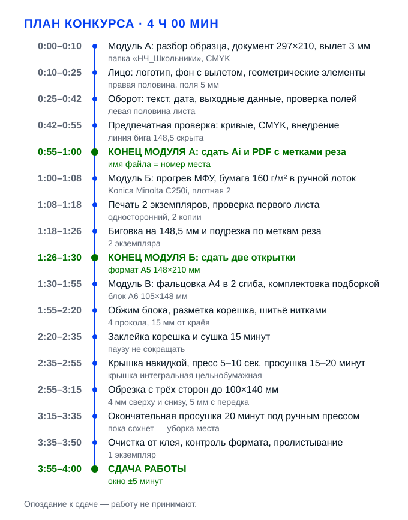
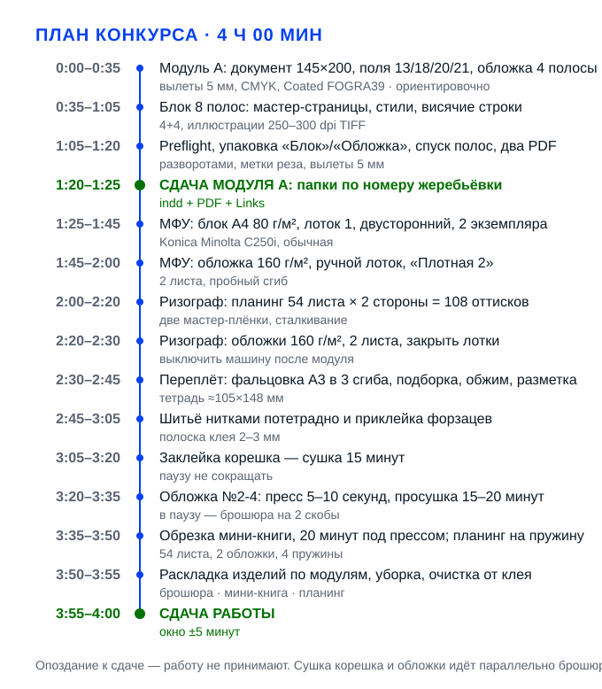
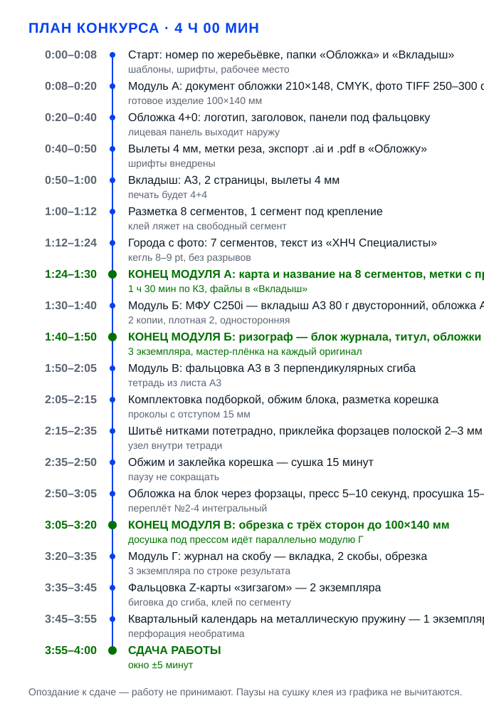

Полиграфическое дело (Р)
Задания ниже — официальные файлы «Абилимпикс» (источник: abilympics-russia.ru), разложенные по категориям. Решения написаны по тексту задания, регламенту и критериям оценки; в них указано, что именно проверяет эксперт.
Школьник
14–16 лет, базовый уровень заданияВыдержка из официального конкурсного задания: страницы, относящиеся к категории «Школьник» (стр. 5–6, 9–10 источника).
Пошаговое решение
Четыре часа, три модуля и два готовых изделия: открытка и книга для записей. Сначала час верстки в Adobe Illustrator — разворот А4 297 на 210 мм с припуском в обрез 3 мм, лицо справа от бига, оборот слева, текст не ближе 5 мм к краю, фон на всю площадь. Потом полчаса печати и биговки: два экземпляра на Konica Minolta C250i, бумага 160 г/м², ручной лоток, тип «плотная 2», печать односторонняя, сгиб на 148,5 мм и подрезка до А5 148 на 210 мм. Оставшиеся два с половиной часа — переплёт: листы А4 дважды фальцуются перпендикулярно до блока А6, комплектуются подборкой, обжимаются, размечаются по корешку и сшиваются нитками потетрадно; дальше форзацы с полоской клея 2–3 мм, заклейка корешка, интегральная цельнобумажная крышка, две паузы на сушку и обрезка до 100 на 140 мм. Времени хватает ровно на всё, если не сокращать паузы: второго комплекта бумаги нет.

Задача 1. Сверстать открытку с символикой «Абилимпикс» в Adobe IllustratorМодуль А · верстка · 1 час · выходы Ai и PDF
Первый час конкурса уходит на макет: разворот А4 297 на 210 мм с припуском в обрез 3 мм, лицевая сторона справа от бига, оборотная слева, фон на всю площадь, текст не ближе 5 мм к краю и ни одной буквой на линии бига. На выходе нужны два файла с именем по номеру рабочего места — исходник Ai и PDF с метками реза. Здесь важно не столько «красиво», сколько точно: за час успевает тот, кто сначала разбирает образец и ставит направляющие, а не тот, кто сразу тянет логотип на чистый лист.
Действие 1.1. Разобрать образец и настроить документ
Шаг 1.1.1
Берём распечатанный образец, который лежит на столе, и раскладываем его перед собой: где лицевая сторона, где оборотная, где проходит линия бига. Образец отпечатан на листе А4 и согнут пополам, то есть перед нами разворот 297 на 210 мм, у которого правая половина после биговки становится лицом, а левая — оборотом. Обводим карандашом линию сгиба и отмечаем, где стоит логотип, какой высоты заголовок, какие геометрические элементы добавлены и сколько площади занимает фон. Сразу же измеряем линейкой отступы от края: по заданию они не меньше 5 мм, и по образцу видно, что это правило соблюдено.
Пока схема сторон не разобрана, верстка превращается в переделку, а на весь модуль дано ровно 60 минут, и в них входят ещё проверка и два сохранённых файла. Результат модуля в задании описан однозначно: макет открытки с символикой «Абилимпикс», подготовленный к печати, а правила верстки перечислены отдельным списком — значит, смотреть надо не «как красиво», а «как в образце и как в правилах».
Линия бига отмечена ровно посередине, лицевая сторона названа вслух и записана на черновике, отступы сняты линейкой. Проверьте себя простым вопросом: если согнуть лист по отмеченной линии, логотип окажется снаружи, на лицевой стороне, а не внутри сгиба.
Самая частая ошибка — начать верстать сразу, не разобрав образец, и перепутать половины: лицо уезжает влево, и после биговки открытка открывается вверх ногами. Вторая — верстать по памяти, без линейки: отступы получаются 3–4 мм вместо 5, и на подрезке это видно невооружённым глазом.
Эксперт подходит в первые десять минут и смотрит, лежит ли образец рядом с монитором и сверяется ли участник с ним, а не тянется сразу к палитре инструментов.
Шаг 1.1.2
Создаём новый документ: File — New, ширина 297 мм, высота 210 мм, ориентация горизонтальная, единицы измерения миллиметры, цветовой режим CMYK. В разделе Bleed ставим 3 мм на все четыре стороны — это и есть припуск в обрез из технических ограничений задания, запас, который потом уйдёт под нож. В дополнительных параметрах выставляем растровые эффекты 300 ppi и сразу называем файл номером рабочего места, например 12, без слов «открытка», «финал» и «новый вариант».
Формат А4 297 на 210 мм и припуск 3 мм — первые две цифры, которые проверяют в макете, и они жёсткие. Если сделать документ 210 на 297, биг пойдёт по короткой стороне и открытка станет вертикальной, а если оставить вылеты 0 мм, фон после подрезки обрежется в белую полоску по краю, и этот брак уже ничем не исправить.
Откройте File — Document Setup: 297 и 210 стоят на своих местах, Bleed 3 мм во всех четырёх полях, Color Mode CMYK, Raster Effects 300 ppi. Линейки по краям рабочей области показывают миллиметры, а не пункты — иначе все дальнейшие размеры придётся пересчитывать.
Документ 210 на 297 — половина работы переверстана, и переделывать её придётся с нуля. Вылеты 0 мм — после подрезки по краю появляется белая кромка. Отдельная ошибка — оставить RGB: синий брендбука на оттиске уедет в фиолетовый, и цвет перестанет совпадать с образцом.
Эксперт открывает Document Setup в первые минуты и смотрит ровно эти три параметра: формат, вылеты и цветовую модель — дальше по ним видно, читал ли участник задание.
Шаг 1.1.3
Ставим направляющие: вертикальную ровно на 148,5 мм — это середина 297-миллиметрового листа и линия бига, и четыре направляющие по 5 мм от каждого края, это граница, ближе которой текст ставить нельзя. Направляющие фиксируем через View — Guides — Lock Guides, чтобы случайно не сдвинуть их мышью. Саму линию бига рисуем отдельно, на слое «БИГ», тонкой линией, и перед экспортом PDF этот слой скрываем, чтобы техническая линия не попала в печать.
Правило про 5 мм от края и запрет ставить текст на линию бига записаны в задании отдельным абзацем, и проверяются они мгновенно — достаточно посмотреть на макет с включёнными направляющими. Середина 297-миллиметрового листа — это 148,5, а не 148: полмиллиметра разницы дают половины 148 и 149 мм, и на сгибе это заметно.
Информационная панель показывает координаты направляющих 148,5 и 5, фиксация включена, слой с линией бига подписан и находится выше остальных. Проверьте: при выключенном слое «БИГ» макет выглядит как готовая открытка, без технических линий.
Биг на 148 вместо 148,5 — половины разной ширины, после сгиба одна сторона выступает на миллиметр. Вторая ошибка — оставить линию бига на печатном слое: она выйдет на оттиске тонкой синей полосой ровно по сгибу.
Эксперт включает направляющие и смотрит, есть ли техническая линия бига и не печатается ли она — это отличает участника, который понимает процесс, от того, кто просто рисовал картинку.
Действие 1.2. Собрать лицевую сторону
Шаг 1.2.1
Открываем файл «Логотип и фирменные элементы Абилимпикс» из папки «НЧ_Школьники» на рабочем столе, выбираем нужный вариант логотипа и копируем его через Ctrl+C. Вставляем на слой «Логотип» и масштабируем, обязательно удерживая Shift и потянув за угловую ручку, — так пропорции сохраняются. Ставим логотип по направляющим, оставляя вокруг него охранное поле не меньше половины его высоты, и следим, чтобы высота знака была не меньше 15 мм: мельче он теряет читаемость на оттиске.
Символика «Абилимпикс» — обязательный элемент макета, без неё работа не соответствует заданию вообще. Заодно решается вопрос узнаваемости: эксперт сверяет открытку с образцом, и первое, что он сравнивает, — логотип. Растянутый или перерисованный знак виден сразу, даже если всё остальное сделано идеально.
Выделите логотип и посмотрите в панели Transform соотношение ширины и высоты — оно должно совпадать с исходным файлом. Сравните на глаз: знак не сплющен, не вытянут, буквы не наклонены, вокруг него есть воздух.
Потянуть за боковую ручку без Shift — логотип сплющивается, и это самая заметная ошибка в макете. Вторая — обвести логотип по картинке или перерисовать «похоже»: кривые не совпадают с оригиналом, и знак выглядит самодельным.
Эксперт сравнивает логотип с исходным файлом из папки «НЧ_Школьники» и смотрит на охранное поле: не прилип ли знак к геометрическому элементу или к краю.
Шаг 1.2.2
Рисуем фон: прямоугольник размером 303 на 216 мм, то есть на 3 мм больше документа с каждой стороны, ставим его с координатами минус 3 по обеим осям и отправляем назад через Object — Arrange — Send to Back. Заливка — синий брендбука, переведённый в CMYK, обводки нет. Если по образцу фон не сплошной, а из двух частей, вторую часть делаем отдельным прямоугольником на том же слое и стыкуем края без зазора.
Требование задания звучит коротко: фон должен занимать всю площадь макета. Именно поэтому фон рисуют с вылетом 3 мм — после подрезки по меткам реза край уходит в цвет, а не в белую бумагу. Плашка, поставленная ровно по артборду, при подрезке даёт тонкую белую кромку, и на плотной бумаге 160 г/м² она особенно заметна.
Включите режим контуров Ctrl+Y: прямоугольник фона должен выходить за границу артборда на 3 мм со всех четырёх сторон. Затем выключите контуры и посмотрите на макет при увеличении 100%: разрывов, белых полос и стыков внутри фона нет.
Фон ровно по артборду — после подрезки белая кромка по краю, и это брак, который не лечится. Вторая ошибка — две плашки встык с зазором в десятые доли миллиметра: на оттиске между ними появляется тонкая светлая линия.
Эксперт смотрит вылеты в PDF, включив показ области вылета, и проверяет, что цвет доходит до самого края листа, а не заканчивается по линии реза.
Шаг 1.2.3
Добавляем геометрические элементы, которых нет в фирменном файле: полосы, круги, треугольники — то, что задание предлагает вставить самостоятельно. Держимся двух цветов, синего и белого, чтобы макет совпадал с образцом. Заголовок набираем кеглем 32–40 пунктов шрифтом из папки «НЧ_Школьники», ставим его не ближе 5 мм к краю и так, чтобы ни одна буква даже частично не попадала на линию 148,5.
Фраза «самостоятельно вставьте геометрические элементы открытки» — это отдельное требование модуля, а не украшение: без геометрии макет не совпадёт с образцом. Запрет на текст у бига объясняется физикой сгиба: бумага 160 г/м² на сгибе тянется, и надпись, стоящая на линии, ломается и уходит в сторону.
Измерьте инструментом «Линейка» расстояние от самой близкой буквы до края — должно быть не меньше 5 мм. Затем посмотрите на текст относительно направляющей 148,5: между буквами и линией остаётся просвет, а не касание.
Заголовок, стоящий через биг, после сгиба распадается на две половины и читается с трудом — это сразу видно на готовой открытке. Вторая ошибка — текст в 2–3 мм от края: подрезка снимает его частично, и от слова остаётся обрубок.
Эксперт проверяет именно эти два правила — поля 5 мм и отсутствие текста на биге, потому что они записаны в задании прямым текстом и проверяются без приборов.
Действие 1.3. Собрать оборот, проверить и сохранить файлы
Шаг 1.3.1
Заполняем левую половину, то есть оборот: название мероприятия, дату и место проведения, при необходимости контакты и выходные данные, мелкий логотип или геометрический акцент. Кегль основного текста 10–12 пунктов, интерлиньяж полтора, выключка по левому краю. Все блоки держим внутри тех же полей 5 мм и не заводим на линию бига, а свободное место распределяем так, чтобы низ не выглядел пустым.
Образец двусторонний, и оборот входит в макет на равных: после биговки открытка раскрывается, и обе половины оказываются рядом, поэтому любая небрежность на обороте видна одновременно с лицом. Правила про 5 мм и биг действуют на обе стороны одинаково — в задании они сформулированы для всего макета.
Прочитайте оборот целиком, как читал бы зритель: текст стоит прямо, не вверх ногами, строки не разъезжаются, поля одинаковые с лицом. Сравните плотность заполнения с образцом — оборот не должен выглядеть пустым листом.
Развернуть Text Frame на 180 градусов и не заметить этого — на оттиске оборот читается вверх ногами, и вся работа выглядит перевёрнутой. Вторая ошибка — поставить мелкий текст в 3 мм от края: он срезается при подрезке.
Эксперт разворачивает макет в PDF и смотрит оборот так же внимательно, как лицо: читаемость, поля, отсутствие текста на биге. Если оборот пустует или текст на нём мельче 10 пунктов, он отмечает это как несоответствие образцу.
Шаг 1.3.2
Делаем техническую проверку перед сохранением: дублируем слой с текстом и на копии переводим текст в кривые через Type — Create Outlines, проверяем, что все изображения внедрены, а не связаны, прозрачности и тени либо растрированы, либо проверены на корректное отображение, обводки не тоньше 0,25 пункта. Отдельно смотрим панель Separations: в макете не должно остаться RGB-объектов и плашечных цветов, только CMYK. Слой с линией бига скрываем.
PDF уходит в печать на Konica Minolta C250i, и всё, что не внедрено, машина интерпретирует по-своему. Шрифт без внедрения заменяется первым похожим, и заголовок «съезжает» по ширине; RGB-объект пересчитывается в CMYK автоматически, и синий брендбука становится грязно-фиолетовым. Прозрачности без растрирования дают артефакты при печати плотной бумаги.
Откройте Window — Document Info и проверьте список шрифтов и связанных файлов: связанных быть не должно. В панели Separations остаются только четыре краски CMYK. Включите View — Outline: прозрачных объектов с растрами не видно, обводки не тоньше 0,25 пункта.
Оставить шрифт живым и не внедрить его — в типографии заголовок наберут другим шрифтом, и вся композиция поедет. Вторая ошибка — забыть про эффект тени: на оттиске вместо мягкой тени появляется тёмный прямоугольник.
Эксперт не проверяет каждый объект, но открывает PDF и смотрит шрифты в свойствах документа: если там вместо названий стоят заглушки, вопрос решён не в пользу участника.
Шаг 1.3.3
Сохраняем исходник: File — Save As, формат Adobe Illustrator, имя файла — номер рабочего места, например 12.ai, галочка Create PDF Compatible File оставлена. Затем File — Save a Copy, формат Adobe PDF, пресет для печати, в разделе Marks and Bleeds включаем Trim Marks, ставим смещение меток 3 мм и отмечаем Use Document Bleed Settings, чтобы в PDF ушли те самые 3 мм. Масштабирование выключаем: Scale 100%, никаких «Fit to page».
Задание требует два выходных файла с именем по номеру рабочего места: исходник Ai и оригинал-макет в PDF с метками реза. Метки — это ориентиры для ножа на одноножевой резальной машине: по ним подрезают открытку до А5 148 на 210 мм, и без них подрезка идёт на глаз.
Откройте сохранённый PDF в Adobe Acrobat: размер страницы больше А4 на величину вылетов и меток, по четырём углам стоят уголки-метки, фон доходит до края вылета. Имена файлов — 12.ai и 12.pdf, ровно по номеру места, без приставок.
Сохранить PDF через обычный Save as PDF без меток и вылетов — эксперт такое не принимает: подрезать по чему неясно. Вторая ошибка — назвать файл «открытка Абилимпикс финал.pdf»: файл просто не найдут при сборе работ.
Эксперт принимает файлы по имени и сразу открывает PDF: наличие меток реза проверяется в первые секунды, до просмотра самого макета. Если меток нет, дальше он уже не смотрит: работа не соответствует выходным файлам из задания.
Шаг 1.3.4
Проходим по короткому чек-листу, проговаривая каждый пункт: формат 297 на 210, вылеты 3 мм, поля текста не меньше 5 мм, биг 148,5 и слой с ним скрыт, логотип с сохранёнными пропорциями, фон на всю площадь, текст в кривых, оба файла названы номером места. Отдельно сверяем ориентацию: лицевая сторона справа от бига, оборотная слева, — и только потом складываем Ai и PDF в папку своего рабочего места и сообщаем эксперту, что модуль А готов.
Пять минут проверки экономят весь модуль: ошибку, найденную до сдачи, можно исправить, а после сдачи время на правку уже не выделяют. Кроме того, порядок в файлах — часть оценки организации работы, и он виден эксперту без единого вопроса. Ошибка, найденная до сдачи, стоит минуты, а найденная на сдаче — всего модуля.
Откройте папку рабочего места: в ней ровно два файла, названия совпадают с номером. Откройте PDF заново, не из Illustrator, а двойным щелчком — так видно, что макет не зависит от исходников и шрифтов на этом компьютере.
Сдать работу и продолжить правки «пока эксперт не ушёл» — правки после сдачи не принимаются, а время уходит. Вторая ошибка — оставить файлы на рабочем столе вне папки: при сборе работ их могут просто не найти.
Эксперт фиксирует время сдачи модуля А и проверяет комплектность: два файла, имена по номеру места, PDF открывается. Отдельно он отмечает, лежат ли файлы в папке рабочего места, а не на рабочем столе.
Задача 2. Вывести открытку на печать: два экземпляра на Konica Minolta C250iМодуль Б, часть 1 · печать · 2 экземпляра · 160 г/м²
Печатная часть занимает половину получаса, отведённого на модуль Б, и за это время нужно получить два чистых оттиска на плотной бумаге 160 г/м². Машина Konica Minolta C250i, лоток ручной подачи, тип бумаги «плотная 2», формат А4, печать односторонняя, число копий два. Ключевые слова здесь — «односторонняя» и «плотная 2»: первое задаёт, какой стороной пойдёт лист, второе — температуру закрепления тонера, и ошибка в любом из этих двух параметров портит оттиск ещё до биговки.
Действие 2.1. Подготовить машину и бумагу
Шаг 2.1.1
Включаем МФУ кнопкой на передней панели и ждём, пока закончится прогрев: у C250i это полторы-две минуты, всё это время на экране горит значок нагрева, а кнопка печати неактивна. Пока машина греется, открываем переднюю дверцу и осматриваем тракт: в лотке ручной подачи не должно быть обрывков бумаги, скрепок и пыли, валик подачи должен быть чистым, без серого налёта тонера. Заодно проверяем, что лоток приёма пуст и в нём не осталось листов от предыдущего участника.
На печать и биговку вместе дано 30 минут, и замятие в начале съедает половину этого времени: разбор тракта занимает минуты, а не секунды, и всё это время участник стоит у машины и ничего не делает. Чистый валик и свободный тракт — условие ровной подачи плотной бумаги, которая гнётся хуже обычной и цепляется за любую неровность.
На панели нет красных значков ошибки, горит «Готов», в лотке ручной подачи пусто и сухо. Проведите пальцем по валику подачи: на подушечке не остаётся серого следа, а в лотке приёма не лежит чужая бумага, которую машина подхватит вместе с вашей.
Отправить задание, не дождавшись прогрева: часть листов уйдёт в очередь и распечатается позже, а вы будете искать причину и терять минуты. Вторая ошибка — не заметить в лотке скрепку: плотный лист протащит её внутрь, тракт встанет, и вместо печати придётся объясняться с техническим специалистом площадки.
Эксперт смотрит, ждёт ли участник готовности машины и осматривает ли лотки, или сразу жмёт печать и потом разбирается с замятием. Если участник сразу жмёт печать, эксперт отмечает это как потерю времени, а не как скорость.
Шаг 2.1.2
Берём бумагу 160 г/м² формата А4, распускаем стопу: перелистываем её углом, чтобы листы не слипались, выравниваем по двум сторонам и только потом кладём в лоток ручной подачи. Ограничители сдвигаем вплотную к стопе, но не зажимаем: лист должен лежать свободно, без перекоса. Стопу набираем не выше половины высоты ограничителя — для плотной бумаги это и есть рабочая норма, иначе подача пойдёт двойными листами.
Плотность 160 г/м² в задании указана прямо, и это не формальность: на обычной 80-граммовой открытка после биговки и обрезки выглядит как листок, а на слишком толстом картоне ломается по сгибу. Распущенная и выровненная стопа — единственная защита от захвата двух листов сразу, а двойной лист в тракте означает замятие и потерю оттиска.
Стопа лежит ровно, углы совпадают, ограничители касаются её краёв без зазора и без нажима. На панели после закрытия лотка появился запрос типа и формата бумаги — значит, машина стопу видит. После загрузки приподнимите стопу за угол: листы должны разойтись веером, а не слипнуться блоком.
Загрузить стопу «до упора» — плотная бумага идёт двойными листами, и первый же оттиск выходит с полосой и замятием. Вторая ошибка — не распустить стопу: слипшиеся листы подаются по два, и на выходе получается брак вместо открытки.
Эксперт подходит к лотку и смотрит, выровнена ли стопа и выставлены ли ограничители — по этому видно, работал ли участник с плотной бумагой раньше.
Шаг 2.1.3
Открываем сохранённый PDF в Adobe Acrobat — именно в Acrobat, а не в просмотрщике браузера, где масштаб и поля задаются автоматически. Смотрим на размер страницы в свойствах: 297 на 210 плюс вылеты, ориентация горизонтальная, метки реза на месте. Проверяем, что открылся тот файл: имя должно совпадать с номером рабочего места, а не с черновым вариантом, которых за час могло накопиться несколько.
Печать идёт из PDF, и если открыть не тот файл, на плотной бумаге окажется черновик — а бумаги на два экземпляра, третьего оттиска не будет. Кроме того, Acrobat показывает реальный размер страницы, и по нему видно, ушли ли в файл те 3 мм вылета и метки реза, о которых говорит задание.
В Acrobat через File — Properties размер страницы соответствует макету с вылетами, ориентация горизонтальная. На экране видны уголки меток реза, фон доходит до их уровня, а номер в имени файла совпадает с номером рабочего места.
Открыть PDF в браузере — тот покажет страницу по ширине окна и напечатает с масштабом «по размеру», то есть уменьшит макет на несколько процентов. Вторая ошибка — взять черновой файл: на плотной бумаге окажется версия с невыправленным текстом.
Эксперт смотрит, из какой программы идёт печать и совпадает ли имя открытого файла с номером места, — это первое, что видно на экране. Ему важно увидеть, что участник открыл именно тот файл, который сам сохранил в модуле А.
Действие 2.2. Задать параметры печати
Шаг 2.2.1
В диалоге печати выбираем принтер Konica Minolta C250i, затем открываем свойства и выставляем три вещи подряд: лоток — ручной подачи, формат — А4, тип бумаги — плотная 2. Проверяем, что размер в задании печати совпадает с размером страницы PDF, а не подставлен из предыдущей работы. Если в списке типов бумаги стоит «обычная», меняем на «плотная 2» вручную: автоматически машина этого не угадает.
«Плотная 2» — это не название, а настройка температуры и скорости протяжки: на ней печка греется сильнее, чтобы тонер впечатался в 160-граммовую бумагу. Если оставить «обычную», тонер ляжет поверхностно и осыплется ровно там, где его будут сгибать, то есть на биге, — а биговка идёт следующим шагом, и исправить уже ничего нельзя.
В окне свойств три поля читаются одинаково с заданием: C250i, ручной лоток, плотная 2, А4. На панели машины при отправке задания тоже отображается тип бумаги — если там «обычная», настройка не применилась.
Оставить тип бумаги «обычная» — тонер не закрепится, и при биговке он отслоится полосой по сгибу. Вторая ошибка — выбрать автоматический лоток: машина возьмёт 80-граммовую бумагу из кассеты, и открытка выйдет на тонком листе.
Эксперт заглядывает в окно свойств печати и проверяет три параметра из задания: лоток, тип бумаги и число копий. Если в свойствах стоит «обычная», он просит открыть их ещё раз — до запуска задания.
Шаг 2.2.2
Там же выставляем остальное: тип печати — односторонний, число копий — 2, масштаб — 100% или «реальный размер», без «по размеру страницы» и без «уместить в область печати». В разделе «Макет» проверяем ориентацию: горизонтальная, без поворота на 180 градусов и без зеркального отражения. После этого нажимаем «Печать» и не трогаем настройки до конца задания.
Число копий 2 и односторонняя печать — прямые требования задания, причём односторонняя печать здесь принципиальна: открытка бигуется пополам, и обе половины разворота уже сверстаны рядом на одной стороне листа. Любое масштабирование сдвигает метки реза относительно изображения, и подрезка потом идёт «по картинке», а не по меткам.
В сводке перед печатью: копий 2, односторонний, масштаб 100%, ориентация горизонтальная. Прикиньте на экране предпросмотра: изображение занимает страницу целиком, без белых полей по краям. Метки реза должны попадать в область печати целиком, не обрезаясь краем листа.
Оставить «по размеру страницы» — макет уменьшится, метки реза съедутся, и открытка получится меньше А5. Вторая ошибка — поставить двустороннюю печать «чтобы красивее»: на обороте окажется зеркальная копия макета, а лист пойдёт в брак.
Эксперт проверяет сводку параметров до запуска: две копии, односторонний, 100 процентов — это те цифры, которые потом видны на оттиске. По сводке видно, понимает ли участник разницу между двусторонней и односторонней печатью.
Шаг 2.2.3
Отправляем первое задание на один экземпляр и ждём, пока лист выйдет полностью, не выдёргивая его из лотка приёма. Кладём оттиск на чистый стол изображением вверх, даём ему полминуты остыть и только потом берём в руки — на плотной бумаге тонер горячий и легко смазывается пальцем. Убедившись, что всё в порядке, печатаем второй экземпляр тем же заданием.
Первый лист — это проба: на нём видно, не ушли ли поля, не поплыл ли цвет, не осталось ли полосы от валика. Печать сразу двух копий не оставляет права на ошибку: бумаги ровно на два оттиска, и третий взять негде. Полминуты на остывание — мелочь, которая спасает от смазанного угла на готовой открытке.
Первый оттиск: изображение целиком, метки реза видны, фон доходит до края, на обороте чисто. Угол изображения не стирается под пальцем, лист не закручивается от перегрева. Проверьте и то, что второй экземпляр печатается тем же заданием, а не новым: иначе настройки собьются.
Схватить горячий лист за угол — на нём остаётся отпечаток пальца, и это видно на фоне. Вторая ошибка — отправить сразу «копий 2» и потом обнаружить сдвиг: оба листа в брак, а времени на перепечатку нет.
Эксперт смотрит на первый оттиск вместе с участником и оценивает, умеет ли он читать результат печати, а не просто забирать листы из лотка. Отдельно он смотрит, не трогают ли оттиск руками сразу после выхода из машины.
Действие 2.3. Проверить оттиски и закрыть модуль
Шаг 2.3.1
Проверяем оба оттиска по одному и тому же списку: совмещение всех элементов, плотность фона без полос и пятен, отсутствие точек тонера на пробельных участках, целые метки реза, чистый оборот. Отдельно смотрим край листа: на нём не должно быть следов валика и замятий. Сравниваем два оттиска между собой — они должны быть одинаковыми по цвету, иначе один из них пойдёт в работу, а второй нет.
Проверка качества отпечатанных листов записана в задании отдельным пунктом, и это логично: дефект, замеченный здесь, ещё можно исправить перепечаткой, а после биговки и обрезки он уходит в сдачу как брак. Пятна тонера на фоне и полосы — не косметика: на открытке с большой плашкой они видны сразу.
Разложите оба листа рядом при дневном свете и посмотрите под углом: полос нет, пятен нет, цвет одинаковый. Метки реза целые и не срезаны, изображение расположено симметрично относительно меток. Полосу на плашке видно только под углом, поэтому смотреть надо именно так.
Принять оттиск с полосой на плашке «потому что времени нет»: после биговки полоса окажется прямо на сгибе, и открытку не примут. Вторая ошибка — не сравнить два листа: один напечатан с недоливом, и разница видна в паре.
Эксперт смотрит оттиски на просвет и под углом, отдельно проверяя плашку и края — именно там проявляются дефекты печати. Он сравнивает два оттиска между собой: если цвет разный, один из них он считает браком.
Шаг 2.3.2
Кладём оттиски на ровную поверхность изображением вверх и оставляем на пару минут, чтобы тонер окончательно остыл и не отпечатался на соседнем листе. Затем карандашом на обороте, в углу, который уйдёт в обрез, пишем номер рабочего места и ставим галочку «печать». Складывать оттиски лицом к лицу нельзя: свежий тонер переносится, и на фоне остаётся зеркальный отпечаток.
До биговки оттиски должны отлежаться: 160 г/м² после печки выходит слегка напряжённой, и если сразу гнуть, на сгибе появляются микротрещины в плашке. Маркировка в углу, который уйдёт под нож, нужна для сдачи: два листа — это два экземпляра, и эксперту должно быть видно, что участник их не перепутал.
Оттиски лежат отдельно, изображением вверх. Через пару минут проверьте: следов переноса тонера на обратной стороне соседнего листа нет, угол с пометкой цел, номер читается. Если через две минуты на обороте соседнего листа виден след тонера, оттиски надо переложить и дать ещё время.
Сложить оттиски лицом к лицу и прижать — тонер переходит на второй лист, и на плашке появляется зеркальная тень. Вторая ошибка — сразу гнуть оттиск: трещины по плашке на сгибе видны невооружённым глазом.
Эксперт смотрит, как участник обращается с готовыми оттисками: аккуратно разложены или свалены в стопку изображением друг к другу. Ему важно, чтобы номер рабочего места был нанесён до сдачи, а не после замечания.
Шаг 2.3.3
Завершаем работу на машине: вынимаем остаток бумаги из лотка ручной подачи, закрываем лотки, очищаем приёмный лоток от обрезков и только после этого выключаем МФУ кнопкой на панели, дождавшись, пока погаснет индикатор. Чистую бумагу возвращаем на место, а обрезки выбрасываем в контейнер для бумажных отходов, а не оставляем на столе. Кнопку держим до полного гашения индикатора, а не отпускаем сразу.
В задании последним пунктом модуля Б стоит «завершить работу, выключить МФУ», и это часть оценки организации рабочего места. Оставленная в лотке бумага следующему участнику уже не подойдёт по плотности, а машина с открытым лотком не выходит в готовность корректно.
Лоток ручной подачи пуст, лотки закрыты, приёмный лоток чистый, панель погасла, на рабочем месте остались только два оттиска и макет на экране. Проверьте также, что на рабочем месте не осталось обрезков под машиной и на полу: их видно при обходе.
Выключить машину с бумагой в лотке — при следующем включении она подхватится вместе с чужим заданием. Вторая ошибка — оставить обрезки и обрывки в тракте: следующий участник получит замятие на старте.
Эксперт фиксирует, выключена ли машина и убрано ли рабочее место, когда участник переходит к биговке. Перед переходом к биговке он оглядывает место: чистая зона говорит о том, что участник умеет завершать операцию.
Задача 3. Сбиговать открытку и подрезать её по меткам резаМодуль Б, часть 2 · биговка и подрезка · 2 экземпляра
После печати лист А4 297 на 210 мм нужно превратить в открытку А5 148 на 210 мм: продавить линию сгиба на 148,5 мм, согнуть печатной стороной наружу и снять лишнее по меткам реза. Работа занимает вторую половину получасового модуля, и здесь всё решает настройка упора: полмиллиметра сдвига дают перекошенный сгиб, а неправильная глубина бига — трещину по плашке, которую уже не спрятать. Два экземпляра делаются одинаково, чтобы эксперт видел повторяемый результат, а не случайную удачу.
Действие 3.1. Настроить биговщик
Шаг 3.1.1
Кладём оттиск перед собой печатной стороной вверх и находим линию бига по меткам реза: она проходит ровно посередине длинной стороны, на 148,5 мм от края. Проверяем по макету, что лицевая половина будет справа, а оборотная слева — именно так записано в задании. Отмечаем карандашом на обороте, где верх, чтобы при укладке в биговщик не перевернуть лист и не сбиговать его поперёк изображения.
Биг ставится не «примерно посередине», а по конкретной цифре: 297 и 210 — это разворот, и середина длинной стороны приходится на 148,5 мм. Если согнуть поперёк, половины окажутся 210 и 87 мм, открытка не сложится вовсе, и два оттиска уйдут в брак целиком — третьего листа нет.
Линия бига совпадает с серединой меток реза, отмеченный верх лежит сверху, печатная сторона смотрит на вас. Приложите линейку: от левого края до линии бига 148,5 мм, от линии до правого края столько же.
Сбиговать по короткой стороне — половины 210 и 87 мм, изделие не складывается. Вторая ошибка — положить лист печатной стороной вниз: биг продавится с оборота, и при сгибе плашка на лицевой стороне треснет.
Эксперт смотрит, на какой стороне листа участник делает биг: правильный ответ — на печатной, потому что именно она окажется снаружи сгиба. Если биг сделан с оборота, он сразу просит перевернуть лист и объясняет почему.
Шаг 3.1.2
На биговщике выставляем упор на 148,5 мм по шкале, придвигаем его к листу так, чтобы край лежал ровно, без зазора и без нажима, и затягиваем фиксатор. Проверяем настройку не на чистовом оттиске, а на обрезке той же бумаги 160 г/м²: прогоняем его и измеряем линейкой расстояние от края до продавленной линии. Если получилось 148 или 149 — упор сдвигаем и повторяем пробу.
Упор — единственное, что задаёт положение сгиба, и любая погрешность настройки переносится на все экземпляры сразу. Пробный прогон на обрезке стоит полминуты, а испорченный чистовой оттиск — половину модуля: бумага 160 г/м² закончилась, перепечатать нечем.
На пробном обрезке линия бига стоит на 148,5 мм от края, упор зафиксирован, лист при прогоне не гуляет вправо-влево. Линия ровная по всей длине, без ухода на концах. Повторите пробу дважды: на первом прогоне лист мог лечь неровно, на втором видно настоящую настройку.
Настроить упор «на глаз» и сразу биговать чистовой оттиск: сгиб уезжает на 1–2 мм, половины получаются разными, и после подрезки открытка выходит с перекошенной лицевой стороной. Третья ошибка — не затянуть фиксатор упора: он сдвигается уже на втором листе.
Эксперт смотрит, делает ли участник пробный прогон на обрезке, — это профессиональная привычка, которая отличает наладку от наспех выставленного упора.
Шаг 3.1.3
Проверяем сам инструмент: биговальное кольцо должно стоять точно напротив ножа, без смещения в сторону, а глубина — соответствовать плотности. Для 160 г/м² кольцо берут шириной около 0,8–1 мм, нож опускают так, чтобы он продавливал канавку, но не прорезал бумагу. Прогоняем пробный обрезок и смотрим канавку на просвет: она должна быть ровной, глубиной примерно в треть толщины листа.
Слишком глубокий биг прорезает бумагу, и на сгибе появляется разрыв по волокну; слишком мелкий не снимает напряжение, и плашка трескается снаружи. И то и другое видно на фоне открытки, а фон по заданию занимает всю площадь макета — то есть трещина будет на самом видном месте.
На пробном обрезке канавка ровная, одинаковой глубины, бумага на просвет не разорвана. Согните обрезок по канавке: сгиб идёт легко, без белой полосы и без хруста волокон. Канавку смотрите на просвет у окна: при недостаточной глубине она видна только как вмятина.
Работать с кольцом, оставленным от другой бумаги: на 160 г/м² канавка выходит мелкой, и при сгибе плашка лопается по всей длине. Вторая ошибка — опустить нож слишком низко: на обрезке остаётся надрез, а на оттиске — разрыв.
Эксперт проверяет канавку на пробном обрезке и смотрит, не осталось ли на листе сквозного надреза. Для 160 г/м² он ожидает кольцо около 0,8–1 мм; если стоит кольцо от 80-граммовой бумаги, сгиб треснет.
Действие 3.2. Сбиговать оба экземпляра
Шаг 3.2.1
Делаем контрольный биг на обрезке той же бумаги, что и оттиск, и складываем обрезок по канавке печатной стороной наружу. Смотрим на сгиб с лупой или просто под углом к свету: поверхность должна остаться целой, без сетки микротрещин и без белой полоски по краю. Если трещины есть — уменьшаем глубину и пробуем снова, пока сгиб не станет чистым. Трещины ищем и по краю сгиба, и в середине — там они появляются первыми.
Именно на сгибе проверяется вся предыдущая работа: правильно ли выбрана плотность, закрепился ли тонер, та ли глубина бига. Пробный сгиб заранее показывает то, что иначе проявится на готовой открытке, — а двух экземпляров хватает только на один заход.
Сгиб чистый по всей длине, плашка не побелела, обрезок складывается и раскладывается без хруста. Край сгиба ровный, без волны. Согните обрезок дважды: сначала печатной стороной наружу, затем разогните и сложите в другую сторону — так видно, держит ли плашка сгиб.
Пропустить пробный сгиб и сразу биговать оттиски: трещина по фону обнаружится уже после подрезки, когда исправлять нечего. Вторая ошибка — сгибать обрезок дважды в одну сторону: волокно ломается, и проба показывает неверный результат.
Эксперт смотрит на пробный сгиб и на то, как участник оценивает его качество, — по этому видно понимание технологии, а не механическое повторение.
Шаг 3.2.2
Укладываем первый оттиск в биговщик печатной стороной вверх, прижимаем к упору до упора, проверяем, что лист не повёрнут, и плавно прогоняем через нож. Вынимаем, смотрим канавку, затем сгибаем по ней так, чтобы печатная сторона осталась снаружи, а пустые половины сошлись внутри. Приглаживаем сгиб косточкой от середины к краям и повторяем то же самое со вторым оттиском.
Сгиб печатной стороной наружу — единственный вариант, при котором на закрытой открытке видно лицо справа, а оборот слева, как и сказано в задании. Приглаживание от середины к краям выгоняет воздух из сгиба: если вести от края к центру, на сгибе остаётся воздушный пузырь и складка.
Обе половины согнуты одинаково, линия сгиба совпадает с канавкой, лицо оказалось справа. Приложите углы друг к другу: они совпадают, перекоса нет, открытка закрывается ровно, без зазора по краю. Проверьте также, что канавка не вышла за пределы оттиска на 1–2 мм в сторону.
Согнуть печатной стороной внутрь — на закрытой открытке лицо окажется внутри, а снаружи пустая бумага. Вторая ошибка — вести косточку от края к центру: на сгибе остаётся залом, который видно на просвет.
Эксперт берёт готовую открытку в руки и проверяет, с какой стороны лицо, — это первое, что видно, и ошибка здесь стоит всего модуля Б. Он оценивает и то, как участник ведёт косточку: от середины к краям или наоборот.
Шаг 3.2.3
Проверяем оба сгиба одинаково: кладём открытку на стол сгибом к себе и смотрим на линию под углом к свету, затем раскрываем и складываем ещё раз. Измеряем половины линейкой: до подрезки они по 148–149 мм, разница в пределах полумиллиметра считается нормой и уходит под нож. Откладываем готовые к биговке изделия в сторону, не прижимая сгиб тяжёлыми предметами.
До подрезки формат ещё не А5, и оценивать половины «по линейке» рано, но проверить симметрию нужно именно сейчас: если биг ушёл на два миллиметра, подрезка это не исправит, а только сделает перекос заметнее. Кроме того, повторное складывание показывает, держит ли сгиб форму или распрямляется.
Сгиб ровный по всей длине, открытка складывается и держит форму, половины различаются не больше чем на полмиллиметра. На сгибе нет белой полосы и трещин в плашке. Отложите открытки сгибом вверх и посмотрите на них через минуту: распрямившаяся открытка означает, что биг был мелким.
Придавить согнутые открытки стопой книг «чтобы лучше сложились»: сгиб раздавливается, и на нём появляется плоский залом. Вторая ошибка — не проверить второй экземпляр, считая, что раз первый удался, то и второй такой же.
Эксперт смотрит на сгибы обоих экземпляров рядом: одинаковые они или один сделан заметно хуже. Он отмечает, проверяет ли участник каждый экземпляр отдельно или делает вывод по первому.
Действие 3.3. Подрезать по меткам и сдать
Шаг 3.3.1
Кладём согнутую открытку на одноножевой резак метками реза к линии ножа так, чтобы метка совпала с кромкой, и прижимаем прижимной балкой. Сначала снимаем лишнее с передка — там уходит около 0,5 мм, затем по очереди верх и низ, если по меткам есть что снимать. Режем по одному экземпляру, после каждого реза проверяя, что метка ушла ровно и линия реза параллельна сгибу.
Припуск в обрез 3 мм из технических ограничений задания существует именно для этой операции: метки реза стоят за границей макета, и по ним снимается всё лишнее. Если резать «по изображению», снимется часть фона или, наоборот, останется белая полоса, а формат перестанет быть А5.
Линия реза идёт параллельно сгибу, метки срезаны полностью, ни одной белой полосы по краю нет. После первого реза проверьте угол: он должен быть прямым, а не скошенным. После первого реза проверьте линейкой: до сгиба должно остаться ровно 148 мм, не 147 и не 149.
Резать всю стопу сразу, не проверив первый рез: перекос повторяется на всех экземплярах. Вторая ошибка — прижать открытку рукой вместо прижимной балки: лист сдвигается на доли миллиметра, и рез идёт косо.
Эксперт стоит рядом у резака и смотрит, пользуется ли участник прижимом и совмещает ли метку с кромкой ножа, — это вопрос безопасности не меньше, чем качества.
Шаг 3.3.2
Измеряем готовые открытки штангенциркулем или металлической линейкой: 148 на 210 мм, допускается отклонение в пределах полумиллиметра. Проверяем, что сгиб проходит ровно по границе формата, лицо находится справа, а на краях нет следов меток и белых полос. Обе открытки подписываем карандашом с оборота и сдаём эксперту, назвав количество экземпляров.
Формат А5 148 на 210 мм — это результат модуля, и он проверяется линейкой за пять секунд. Сдача двух экземпляров тоже часть задания: в нём прямо сказано, что бигуется два изделия и готовые открытки сдаются эксперту, а не остаются на столе. Измерять нужно каждый экземпляр: один мог лечь под нож с перекосом, а второй — ровно.
Обе открытки 148 на 210 мм, сгиб ровно по краю, лицо справа, края чистые и одинаковые по всем четырём сторонам. На сгибе нет трещин, метки реза не видны. Проверьте и высоту: 210 мм по сгибу, без завалов на концах, иначе открытка будет стоять криво.
Сдать открытки, не измерив их: размер 150 на 212 выглядит почти правильно, но это уже не А5, и формат считают невыполненным. Вторая ошибка — сдать одну открытку, забыв про вторую. Третья ошибка — сдать открытки, не убрав карандашные пометки с оборота.
Эксперт измеряет формат, раскрывает открытку и проверяет сгиб, а затем сравнивает два экземпляра между собой. Он обязательно раскроет открытку: сгиб, который не держит форму, считается дефектом биговки.
Задача 4. Сфальцевать листы, собрать и сшить книжный блокМодуль В, часть 1 · фальцовка и шитьё · блок А6
Два с половиной часа модуля В начинаются с блока: листы А4 фальцуются в два перпендикулярных сгиба до формата А6, комплектуются подборкой, обжимаются, размечаются по корешку и сшиваются нитками потетрадно. Именно здесь закладывается то, что потом не исправить: перекошенная тетрадь тянет за собой весь блок, а слабое шитьё разваливается уже под прессом. Формат блока до обрезки — А6, готовое изделие будет 100 на 140 мм, поэтому каждый сгиб должен быть точным с первого раза: бумага уже отпечатана, лишних листов нет.
Действие 4.1. Сфальцевать листы в два перпендикулярных сгиба
Шаг 4.1.1
Берём выданные распечатанные листы А4 и раскладываем их на столе печатной стороной вверх, проверяя, все ли они одинаково ориентированы. Считаем листы и сверяем с заданием, затем для каждого определяем, где верх, а где низ: у отпечатка есть направление текста, и перевёрнутый лист в блоке сразу виден. Отдельно откладываем лист-образец или первый лист, по которому будем сверять порядок страниц после фальцовки.
После двух сгибов лист превращается в тетрадь из восьми страниц А6, и если хотя бы один лист лежал перевёрнутым, в блоке появится разворот вверх ногами. Разложить и разобрать листы — минута работы, а разбор уже сшитого блока занимает полчаса, которых в модуле В нет: там всё расписано под сушки по 15 и 20 минут.
Все листы лежат одинаково, текст читается с одной стороны, количество совпадает с заданием. Пересчитайте вслух и запомните число — оно понадобится при комплектовке. Если лист лежит иначе, чем остальные, отложите его в сторону и разберитесь до фальцовки.
Начать фальцевать не пересчитав листы: одной тетради не хватает, и блок выходит на 8 страниц тоньше, а заметить это можно только на сшитом блоке. Вторая ошибка — не проверить ориентацию: перевёрнутая тетрадь идёт в середину.
Эксперт смотрит, пересчитаны ли листы и разложены ли они одной стороной, — по этому видно, планирует участник работу или фальцует подряд. Ему важно, чтобы листы были не только посчитаны, но и разложены одной стороной.
Шаг 4.1.2
Делаем первый сгиб: складываем лист по длинной стороне так, чтобы 297 мм превратились в 148,5, совмещаем углы и кромки, придерживая лист по всей длине. Проглаживаем сгиб косточкой от середины к краям, затем прикатываем его по столу, прижимая ладонью. Следим за тем, чтобы кромки совпали точно: выступающий на миллиметр край — это перекос, который останется в тетради.
Первый сгиб задаёт половину формата: из А4 получается А5 148 на 210, и именно по этой линии потом пойдёт второй, перпендикулярный сгиб. Если кромки не совпали, тетрадь выходит трапецией, и обрезка до 100 на 140 мм снимает с одной стороны больше, чем с другой, — поля становятся разными.
Кромки совпадают по всей длине, угол сходится, сгиб ровный и не пузырится. Измерьте: от сгиба до противоположного края 148,5 мм, ширина тетради после сгиба — 148,5 на 210. Прогладьте сгиб ещё раз через чистый лист: так видно, остались ли внутри воздух и складки.
Прогладить сгиб от краёв к середине — в середине остаётся воздушный пузырь и складка. Вторая ошибка — тянуть лист за угол при складывании: кромки расходятся, и тетрадь получается с перекосом в 1–2 мм.
Эксперт проверяет совпадение кромок на первой тетради — это тот признак, по которому видно качество фальцовки без всяких измерений. Он смотрит на кромки у сгиба: если они расходятся веером, тетрадь сфальцована с перекосом.
Шаг 4.1.3
Второй сгиб делаем перпендикулярно первому: складываем получившуюся полосу 148 на 210 пополам по короткой стороне, снова совмещая углы, и проглаживаем косточкой так же, от середины к краям. Получается тетрадь А6 размером 105 на 148,5 мм. Каждую тетрадь после фальцовки укладываем в стопу сгибом в одну сторону и прижимаем грузом, чтобы она не распрямлялась.
Два перпендикулярных сгиба — прямое требование задания, и они дают тетрадь из восьми страниц: четыре с одной стороны, четыре с другой. Второй сгиб обязательно поперёк первого, иначе получится полоса в четверть листа, а не книжный формат. Формат А6 до обрезки — это та база, из которой потом выйдет изделие 100 на 140 мм.
Тетрадь 105 на 148,5 мм, сгибы перпендикулярны друг другу, все тетради одинакового размера. Разверните одну: восемь страниц идут по порядку, без перевёрнутых. Поставьте тетради на ребро: они должны стоять ровно, без завала в сторону сгиба.
Сделать второй сгиб параллельно первому — получается узкая полоса, и блок не собирается. Вторая ошибка — не прижать тетради грузом: они распрямляются, и при комплектовке корешки встают вразнобой.
Эксперт разворачивает одну тетрадь и смотрит на перекрестье сгибов: оно должно быть ровным, без смещения в сторону. Если второй сгиб пошёл не под прямым углом, он видит это по перекрестью без линейки.
Действие 4.2. Скомплектовать блок, обжать и разметить корешок
Шаг 4.2.1
Собираем блок подборкой: берём тетради по одной и укладываем друг на друга в порядке страниц, каждую следующую — сверху предыдущей, корешками в одну сторону. Проверяем порядок по развороту: страницы должны идти подряд, без пропусков и повторов. Собранный блок выравниваем по корешку и по верхнему краю, постукивая торцом о стол. Каждую следующую тетрадь проверяем по номеру страницы, а не по толщине.
Подборка, а не вкладка — это указание из задания, и разница принципиальна: при вкладке тетради вставляются одна в другую, и блок получается тоньше и с другим порядком страниц. В книге для записей блок именно подбирается, иначе страницы пойдут не по порядку, а шов придётся делать по другой схеме.
Развороты идут подряд: 1–2, 3–4 и так далее, без пропусков. Корешки всех тетрадей с одной стороны, блок стоит ровно, не заваливается. Проверьте первую и последнюю тетрадь: они должны быть одинаковыми по толщине и размеру.
Скомплектовать вкладкой по привычке — блок тоньше, порядок страниц нарушен, и переделать это можно только полной пересборкой. Вторая ошибка — не выровнять корешок: тетради выступают одна относительно другой на 1–2 мм, и разметка ложится криво.
Эксперт проверяет порядок страниц, перелистывая блок, и смотрит, ровно ли стоят корешки до обжима. Он перелистывает блок и ищет повтор страницы — самая частая ошибка при подборке.
Шаг 4.2.2
Кладём блок в пресс или в струбцину так, чтобы корешок выступал на 3–4 мм, и обжимаем: сначала легко, чтобы тетради сели на место, потом дотягиваем до плотного сжатия. Держим под давлением минуту, затем отпускаем, выравниваем корешок ладонью и обжимаем снова. Блок должен стать монолитным: между тетрадями не остаётся зазоров, воздух выдавлен. Губки ставим на блок, а не на корешок, чтобы не оставить вмятин.
Обжим убирает воздух между тетрадями и делает корешок ровным — без этого проколы шилом уходят в сторону, а стежки ложатся с разным натяжением. Ровный обжатый корешок — условие того, что после шитья и обрезки блок не разъедется веером на 1–2 мм, что сразу видно на готовом изделии.
Корешок блока ровный, как обрез доски, тетради не выступают одна из-под другой. Нажмите на блок сверху: он не пружинит и не расходится между тетрадями. После обжима блок должен стоять на столе как кирпич, без наклона в сторону корешка.
Обжать слишком слабо — блок «дышит», проколы идут косо, и стежки получаются с разным шагом. Вторая ошибка — затянуть струбцину так, что на корешке остаются вмятины от губок. Третья ошибка — обжимать блок за корешок: на нём остаются вмятины, которые потом видны под крышкой.
Эксперт проводит пальцем по корешку: ровный он или ступенькой, и нет ли следов пережима от инструмента. Он проверяет, стоит ли блок ровно после обжима, — по этому видно, была ли наладка пресса.
Шаг 4.2.3
Размечаем корешок по шаблону: от верхнего края отступаем 15 мм, от нижнего столько же, между ними ставим ещё два прокола так, чтобы расстояния были равными — примерно по 40 мм. Разметку наносим тонким карандашом поперёк корешка, строго под прямым углом, и сразу переносим её на каждую тетрадь, чтобы потом не искать на глаз. Всего получается четыре точки на тетрадь.
Разметка корешка — отдельный пункт в последовательности модуля В, и она определяет, насколько аккуратно выглядит шитьё изнутри и снаружи. Симметричные проколы нужны ещё и потому, что по ним блок потом ровно ложится под нож: перекошенный шов тянет за собой обрезку.
Четыре точки на каждой тетради, расстояния от краёв по 15 мм, между проколами одинаковые. Линии разметки перпендикулярны корешку — проверьте угольником на первой и последней тетради. Проверьте разметку на просвет: линии должны совпадать на всех тетрадях, когда блок сложен.
Разметить только верхнюю тетрадь и колоть остальные «на глаз» — проколы расходятся, и стежки идут лесенкой. Вторая ошибка — отступить от края 5 мм: при обрезке с трёх сторон шов оказывается слишком близко к кромке.
Эксперт смотрит на разметку до шитья: ровные ли линии и одинаковые ли расстояния, — и потом сверяет с результатом. Он смотрит на шаблон: если участник размечает по линейке каждую тетрадь заново, шаг будет плавать.
Действие 4.3. Сшить блок нитками потетрадно
Шаг 4.3.1
Готовим шитьё: отрезаем нить длиной примерно в три высоты блока, то есть около 45 см плюс запас на узел, вдеваем в иглу и завязываем на конце небольшой узелок. Шило берём тонкое, чтобы прокол не рвал бумагу, и держим его под рукой. Блок кладём на стол корешком к себе, сверху прижимаем грузом или ладонью, чтобы тетради не сдвигались при проколе. Нить берём не скользкую синтетическую, а хлопковую или лавсановую средней толщины.
Слишком короткая нить не даст пройти весь блок и закончится на середине — придётся связывать, а узел посреди корешка виден и мешает. Слишком длинная путается и перекручивается, натяжение от этого страдает. Расчёт «три высоты блока» — рабочее правило, которое закрывает вопрос без перестраховки.
Нить продета, узел на конце затянут, шило острое и не гнётся. Блок лежит ровно, корешок смотрит на вас, тетради не разъезжаются при нажатии. Проверьте, что игла проходит в прокол свободно, не расширяя его.
Взять нить «на глаз» короче блока — шитьё заканчивается на предпоследней тетради, и связывать приходится на ходу. Вторая ошибка — толстое шило: оно рвёт волокна, и в корешке остаются заметные дыры.
Эксперт смотрит на подготовку: подобрана ли нить по длине, прижат ли блок, не работал ли участник шилом «на весу». Он смотрит на длину нити: если она волочится по столу, натяжение будет плавать.
Шаг 4.3.2
Шьём потетрадно: прокалываем первую тетрадь по разметке, ведём стежок внутри сгиба и выходим наружу, затем цепляем предыдущую тетрадь и возвращаемся внутрь. Стежки укладываем с умеренным натяжением — нить должна лежать на корешке, но не врезаться в бумагу. Каждую следующую тетрадь пришиваем к предыдущей в двух точках, а в конце закрепляем нить узлом внутри последней тетради и обрезаем хвост, оставив 5 мм.
Скрепление блока нитками — требование задания, и потетрадное шитьё даёт подвижность, которой нет у клеевого: книга для записей должна раскрываться и лежать на столе ровно. Каждая тетрадь, пришитая к предыдущей в двух точках, держит соседнюю и не даёт блоку развалиться при обрезке и обжиме.
Нить идёт по корешку ровно, стежки одинаковые, ни одна тетрадь не болтается отдельно. Потяните блок за крайние тетради: они держатся, корешок не расходится больше чем на полмиллиметра. Проверьте шаг стежков линейкой: он должен быть одинаковым на всех тетрадях, около 2–3 мм.
Перетянуть нить — корешок стягивается, блок выгибается дугой, и обрезка получается с разной шириной полей. Вторая ошибка — шить через край, не заходя внутрь тетради: блок держится только на кромке и рвётся при первом раскрытии.
Эксперт раскрывает блок в середине и смотрит на корешок изнутри: ровные ли стежки, одинаковый ли шаг, не прорвана ли бумага. Он смотрит на корешок снаружи: стежки должны лежать ровной дорожкой, без перекрёстков.
Шаг 4.3.3
Затягиваем узел и прячем его: узел завязываем внутри последней тетради, у самого корешка, и обрезаем нить, оставив хвост около 5 мм. Проверяем весь корешок по длине, подтягивая ослабшие стежки кончиком шила, но не разбирая шов. Затем обжимаем блок повторно и выравниваем его по корешку и по верхнему краю, прежде чем идти к форзацам. Хвост нити подклеиваем каплей клея, чтобы он не вылез при обрезке.
Узел снаружи корешка — это бугор, который потом видно под обложкой и который мешает заклейке корешка. Хвост в 5 мм не распустится, а длинный будет торчать между страницами. Повторный обжим после шитья возвращает блоку прямоугольную форму: нить слегка стягивает тетради, и без обжима блок уходит винтом.
Узел спрятан внутри, снаружи корешка бугров нет, блок ровный и прямоугольный, страницы не выглядывают одна из-под другой больше чем на миллиметр. При раскрытии блок ложится свободно. Проверьте, не выступила ли нить на первой странице: это видно при раскрытии.
Оставить узел на корешке снаружи — под обложкой появляется бугор, и на готовом изделии он виден невооружённым глазом. Вторая ошибка — не обжать блок после шитья: изделие уходит винтом, и обрезка снимает разное количество с разных сторон.
Эксперт проверяет блок после шитья: ровный ли он, спрятан ли узел, не расходится ли корешок при раскрытии. Он раскрывает блок на середине и смотрит, не тянет ли шов страницы внутрь.
Задача 5. Вклеить форзацы, собрать крышку, обрезать и сдать изделиеМодуль В, часть 2 · форзацы, корешок, обрезка · 100×140 мм
Вторая половина модуля В — это сборка книги: форзацы, заклейка корешка, интегральная цельнобумажная крышка, обрезка с трёх сторон до 100 на 140 мм и очистка от клея. Здесь больше половины времени уходит не на движения, а на паузы: 15 минут на сушку корешка, 15–20 минут под прессом с обложкой и ещё 20 минут окончательной просушки. Паузы нельзя сокращать — клей внутри должен схватить, иначе при обрезке блок поведёт. В задании этот тип крышки назван в одном разделе №7, а в другом №2-4; конструкция при этом одна — интегральная, цельнобумажная, гибкая, обрезная, с прямым корешком и приклеенной бумажной обложкой.
Действие 5.1. Сфальцевать и приклеить форзацы
Шаг 5.1.1
Берём два листа форзацной бумаги формата А5, выданных вместе с блоком, и складываем каждый одним сгибом по короткой стороне: получается разворот А6 105 на 148 мм, то есть четыре страницы — две рабочие и две свободные. Сгиб проглаживаем косточкой от середины к краям, кромки совмещаем точно. Готовые форзацы кладём под груз, чтобы они не раскрывались, пока сохнет первый.
Форзац в один сгиб — требование задания, и он выполняет две роли сразу: скрепляет блок с крышкой и даёт книге свободное раскрытие. Лишний сгиб или несовпадение кромок сразу видны на готовом изделии: вклейка встаёт с перекосом, и крышка садится на блок неровно.
Форзац 105 на 148 мм, сгиб ровный и совпадает с корешком блока, кромки сходятся. Приложите форзац к первой странице блока: размеры совпадают, сгиб ложится точно по корешку, без выступа. Проверьте оба форзаца: они должны быть одинаковыми по размеру и плотности.
Сфальцевать форзац по длинной стороне — он не совпадёт с блоком по формату, и при вклейке угол выйдет за обрез. Вторая ошибка — прогладить сгиб от края к середине: остаётся складка, которая потом отпечатывается на первой странице.
Эксперт прикладывает форзац к блоку и смотрит на совпадение сгиба с корешком — это видно без линейки. Он смотрит, лежат ли форзацы под грузом: раскрывшийся форзац потом встаёт с перекосом.
Шаг 5.1.2
Наносим клей тонкой полоской 2–3 мм по корешковому полю форзаца и приклеиваем его к первой странице блока, совместив сгибы; то же самое делаем с последней страницей и вторым форзацем. Клей берём немного, размазываем почти насухо, прижимаем ладонью и проглаживаем через чистый лист бумаги. Вторую половину форзаца пока оставляем свободной — она пойдёт на крышку.
Полоска 2–3 мм, а не вся площадь — это указание из задания, и оно техническое: узкая полоса даёт блоку подвижность при раскрытии, а полная приклейка зажимает корешок, и книга не раскрывается. Кроме того, тонкий слой клея не даёт бумаге покоробиться, а покоробленный форзац уже не разгладить.
Форзац приклеен ровно, сгиб совпадает с корешком, клей не выступил за полоску и не пошёл пятнами. Страница под форзацем не пошла волной, угол не загнулся. Проведите пальцем по полоске: она должна быть шириной с толщину ногтя, не больше.
Намазать клеем весь форзац — блок теряет подвижность, книга не раскрывается, а бумага идёт волной. Вторая ошибка — нанести клей толстым слоем: он выдавливается на страницу, и убрать его, не повредив печать, уже нельзя.
Эксперт смотрит на ширину клеевой полосы и на то, не выступил ли клей за её пределы, — 2–3 мм проверяются на глаз. Он смотрит на угол форзаца: клей не должен доходить до него, иначе угол пойдёт волной.
Шаг 5.1.3
Проверяем оба форзаца: формат совпадает с блоком, сгибы стоят по корешку, свободные половины не приклеены и лежат ровно. Пролистываем блок: страницы не склеились между собой у корешка, клей не проступил на первых разворотах. Если где-то выступила капля, убираем её сразу, пока клей не схватил, чистой салфеткой или ногтем через бумагу. Пролистываем блок медленно, держа его за корешок, а не за страницы.
Проверка на этом этапе стоит минуты, а исправление потом — всего изделия: пятно клея на первой странице книги для записей видно сразу, и снять его, не порвав бумагу, почти невозможно. Заодно проверяется, что блок не склеился у корешка: раскрытая книга должна листаться свободно.
Блок раскрывается, страницы идут по одной, у корешка ничего не слиплось, форзацы держатся ровно. Полоска клея не выходит за 3 мм, пятен нет. Проверьте, что форзац не закрывает текст на первой странице: он должен лежать по корешку.
Не заметить каплю клея на первом развороте: после сушки она становится прозрачной, но на ощупь и на просвет остаётся, и это брак сдачи. Вторая ошибка — приклеить форзац, не совместив сгиб: он встаёт с перекосом, и крышка потом не садится.
Эксперт пролистывает блок и смотрит на первый и последний разворот — именно там чаще всего остаются следы клея. Он смотрит на первый разворот при боковом свете — пятна клея видны только так.
Действие 5.2. Заклеить корешок и надеть крышку
Шаг 5.2.1
Обжимаем блок в прессе так, чтобы корешок выступал на 2–3 мм, и промазываем его клеем: тонким слоем, движениями от середины к краям, чтобы клей не собирался у торцов. Разравниваем клей пальцем в напальчнике или шпателем, снимаем излишки и оставляем блок сохнуть под небольшим грузом ровно на 15 минут, как указано в задании. Кисть держим почти вертикально, чтобы клей ложился полосой, а не лужей.
Заклейка корешка держит шитьё и не даёт нитям выходить наружу: без неё стежки видно на корешке, и они ложатся под обложку буграми. Пятнадцать минут — не формальность: за это время клей набирает прочность, и блок можно брать в руки, не боясь, что шов разойдётся при надевании крышки.
Клей лежит ровным слоем без луж и без сухих мест, корешок прямой, нитки закрыты. Через 15 минут клей не липнет к пальцу, но ещё мягкий — это рабочее состояние. Через пятнадцать минут клей должен быть матовым, без блеска и без липкости.
Помазать корешок густо «чтобы держало» — клей выступит на форзацы и на торцы, а сохнуть будет дольше 15 минут. Вторая ошибка — снять блок через пять минут: шов ещё не схватил, и при надевании крышки он расходится.
Эксперт проверяет ровность слоя и то, выдержана ли пауза: если участник сразу хватает блок, на корешке остаются вмятины от пальцев. Он проверяет, выдержана ли пауза, и не пытается ли участник ускорить её феном.
Шаг 5.2.2
Надеваем обложку накидкой: сгибаем её по корешку, кладём блок внутрь, совмещаем корешок блока со сгибом крышки и приклеиваем свободные половины форзацев к внутренним сторонам обложки — сначала заднюю, затем переднюю. Закрываем книгу, обжимаем в прессе на 5–10 секунд, вынимаем и кладём под ручной пресс на 15–20 минут для просушки. Крышку надеваем от корешка, придерживая блок, чтобы он не выскользнул.
Крышка в этом задании интегральная, цельнобумажная, гибкая и обрезная: она делается из плотной бумаги, гнётся вместе с блоком и обрезается вместе с ним. Накидка с приклейкой через форзацы — единственный способ посадить такую крышку точно по корешку. Обжим на 5–10 секунд убирает воздух, а 15–20 минут под прессом нужны, чтобы клей схватил до обрезки.
Корешок крышки совпадает с корешком блока, книга закрывается ровно, углы обложки не задраны, форзацы приклеены без складок. Сдвиньте книгу на столе: крышка не ездит относительно блока. Проверьте, что обложка не выступает за блок ни сверху, ни снизу больше миллиметра.
Надеть обложку со сдвигом на 1–2 мм — после обрезки с одной стороны получится широкое поле, с другой узкое, и изделие выглядит перекошенным. Вторая ошибка — приклеить сначала передний форзац: потом сложно совместить корешок, и крышка садится с перекосом.
Эксперт проверяет совпадение корешка крышки и блока и смотрит, ровно ли лежит книга на столе, — перекос виден сразу. Он смотрит, совпадает ли сгиб крышки с корешком блока, — по этому видно качество сборки.
Шаг 5.2.3
Достаём книгу из-под пресса и проверяем собранное изделие: корешок прямой, без наклона и без волны, крышка гибкая и обхватывает блок, форзацы лежат без складок, книга раскрывается и закрывается свободно. Смотрим на просвет торец: страницы не выступают одна из-под другой больше чем на миллиметр. Если книга «не садится», лучше сразу снять крышку и переклеить форзац, чем идти с перекосом к обрезке.
После обрезки исправлять уже нечего: обрезная крышка режется вместе с блоком, и перекос станет постоянным форматом изделия. Проверка перед ножом — последняя точка, где брак можно устранить, и она занимает минуту, а времени до сдачи остаётся около сорока минут.
Корешок прямой, книга стоит на столе ровно, не заваливается, крышка не отходит от блока. Торец ровный, страницы не выглядывают, форзацы без пузырей. Раскройте книгу в середине: она должна лежать на столе плоско, без домика.
Нести к ножу книгу с перекошенным корешком: обрезка закрепляет перекос, и изделие уже не соответствует формату 100 на 140 мм. Вторая ошибка — проверять книгу, держа её в руках: перекос виден только на ровном столе.
Эксперт смотрит на корешок с торца и на то, как книга лежит на столе, — это две вещи, которые нельзя замаскировать. Он ставит книгу на стол и смотрит с торца: завал корешка виден как клин.
Действие 5.3. Обрезать, досушить и сдать изделие
Шаг 5.3.1
Обрезаем изделие с трёх сторон на одноножевой резальной машине по меткам: сначала снимаем 5 мм с передка, затем по 4 мм сверху и снизу, чтобы из блока А6 105 на 148 мм получилось 100 на 140. Кладём книгу на стол резака корешком к упору, прижимаем балкой и режем по одному резу, проверяя после каждого, что метка ушла ровно и рез параллелен корешку. Каждый рез делаем отдельно, не пытаясь снять всё за один проход.
Формат готового изделия 100 на 140 мм — это результат модуля В, и он получается только обрезкой: 105 минус 5 даёт 100, 148 минус 8 даёт 140. Обрезной вариант крышки означает, что нож идёт и по обложке, и по блоку одновременно, поэтому обрезать нужно после вклейки, а не до неё.
Измерьте изделие: 100 на 140 мм, допускается отклонение в полмиллиметра. Рез параллелен корешку, углы прямые, поля одинаковые с трёх сторон, обложка обрезана ровно вместе с блоком. Проверьте, что рез не задел шов: стежки должны остаться целыми.
Обрезать до вклейки крышки — потом крышка окажется больше блока и будет выступать за обрез. Вторая ошибка — резать, не прижав балку: книга сдвигается, и рез идёт клином. Третья ошибка — резать книгу, не проверив, что она лежит корешком к упору: рез пойдёт по диагонали.
Эксперт измеряет формат и смотрит на углы: прямые они или один скошен, и одинаковы ли поля с трёх сторон. Он проверяет, что участник закрыл нож и убрал руки до нажатия педали, — это требование безопасности.
Шаг 5.3.2
Кладём обрезанное изделие под ручной пресс на 20 минут для окончательной просушки — ровно на это время, как указано в последовательности модуля. Прокладываем книгу чистыми листами бумаги сверху и снизу, чтобы клей не отпечатался на обложке. Пока сохнет, убираем рабочее место: клей закрываем, инструмент раскладываем по местам, обрезки ссыпаем в контейнер.
Двадцать минут окончательной просушки — последняя пауза в задании, и она нужна, чтобы клей внутри корешка отдал влагу: недосушенная книга при первом раскрытии идёт волной, а форзац отходит от блока. Одновременно это время работает на уборку, за которую тоже начисляют баллы.
Через 20 минут книга не липнет, форзацы держатся, обложка не пошла пузырями. Рабочее место чистое: клей закрыт, инструмент на местах, обрезки убраны. Проверьте, что книга лежит под прессом ровно, без перекоса, иначе сушка закрепит наклон.
Достать книгу через пять минут — клей внутри сырой, и при раскрытии форзац отходит полосой. Вторая ошибка — сушить без прокладок: клей отпечатывается на обложке и на соседних листах. Третья ошибка — сушить книгу открытой: корешок провисает, и после сушки книга не закрывается.
Эксперт засекает время просушки и смотрит, чем занят участник в эти двадцать минут: уборкой или ожиданием сложа руки. Он смотрит, чем проложена книга: чистая бумага или обрезки, на которых остался тонер.
Шаг 5.3.3
Достаём книгу, снимаем следы клея: каплю убираем ластиком или срезаем кончиком скальпеля плашмя, к поверхности не под прямым углом, чтобы не оставить царапину. Проверяем изделие по списку: формат 100 на 140 мм, корешок прямой, крышка гибкая и цельная, форзацы приклеены, блок держится, страницы не склеены. Затем сдаём книгу эксперту и называем, что сдаём: «Книга для записей», переплёт интегральный, один экземпляр.
Очистка от следов клея — отдельный пункт последовательности, и он оценивается наравне с форматом: пятно на обложке сводит на нет аккуратную сборку. Чёткая формулировка при сдаче тоже часть работы — эксперт должен сразу понять, что перед ним изделие из задания, а не промежуточная заготовка.
На обложке и форзацах нет пятен и катышков клея, поверхность не поцарапана. Книга полностью соответствует описанию: 100 на 140 мм, интегральная цельнобумажная гибкая крышка, прямой корешок, один экземпляр.
Срезать клей ножом под углом — на обложке остаётся царапина, и это заметно на цветной плашке. Вторая ошибка — сдать изделие молча, не назвав его: эксперт может принять его за черновик. Третья ошибка — сдавать книгу, не пролистав блок: склеенные страницы обнаруживаются на сдаче.
Эксперт осматривает изделие со всех сторон, раскрывает, измеряет формат и фиксирует сдачу в протоколе — это последняя точка модуля В. Он открывает книгу на первой странице и проверяет, нет ли следов клея и заломов на форзаце.
Студент
учащиеся колледжей и техникумовВыдержка из официального конкурсного задания: страницы, относящиеся к категории «Студент» (стр. 5–6, 10–13 источника).
Пошаговое решение
Студенческая категория «Полиграфическое дело» — это полный производственный цикл: сначала двенадцать полос брошюры в InDesign, потом тираж на двух разных машинах, потом мини-книга в интегральном переплёте и брошюровка двух изделий. Цифры задания: обложка 4 полосы 4+0, блок 8 полос 4+4, дообрезной 155×210 мм при вылетах 5 мм и обрезном 145×200 мм, поля 13; 18; 20; 21 мм, иллюстрации 250–300 dpi в CMYK с профилем Coated FOGRA39, блок на А4 80 г/м² из лотка 1, обложка на 160 г/м² с типом «Плотная 2», планинг 54 листа на двух сторонах, мини-книга на переплёте №2-4. Главный дефицит здесь — сушка: корешок сохнет 15 минут, обложка под прессом 15–20, окончательная просушка ещё 20, и эти паузы заранее заняты брошюровкой. Второй риск — путаница между изделиями: брошюра комплектуется вкладкой и идёт на две скобы, планинг — подборкой по 54 листа на пружину, а бумага у них одинаковая.

Задача 1. Сверстать брошюру: обложку на 4 полосы и блок на 8 полосМодуль А · 12 полос · обложка 4+0, блок 4+4
Модуль А — это не «нарисовать красиво», а собрать два файла, которые пройдут preflight и напечатаются с первого раза. Обложка верстается отдельным документом на четыре полосы с обязательными элементами: название, иллюстрация, выходные данные, выпускные данные и QR-код. Блок — восемь полос с колонтитулами, колонцифрами, стилями абзаца и удержанием висячих строк. Геометрия задаётся один раз и дальше не меняется: 145×200 мм обрезного формата, вылеты 5 мм, поля 13; 18; 20; 21 мм, CMYK и профиль Coated FOGRA39. Заканчивается модуль упаковкой, спуском полос и двумя PDF с именами «Обложка» и «Блок».
Действие 1.1. Собрать документ и выставить геометрию
Шаг 1.1.1
Открываем InDesign и в диалоге нового документа переходим на вкладку «Печать»: формат 145×200 мм, ориентация книжная, страниц 4 для обложки, а блок делаем отдельным файлом на 8 страниц. «Разворот» оставляем включённым, первой страницей — правая полоса, иначе первая встанет отдельно и спуск полос придётся пересчитывать. Поля вводим четырьмя числами: верх 18, низ 21, внутреннее 13, наружное 20 мм. В «Метках и вылетах» ставим вылеты 5 мм и припуск под обрез 5 мм, режим цвета — CMYK, профиль Coated FOGRA39.
Формат 145×200 и вылеты 5 мм — это пункты 1–3 требований к обложке и то же для блока: дообрезной 155×210 получается ровно из 145 плюс два вылета по 5 мм. Если задать документ 155×210 и добавить вылеты сверху, поле 200 мм уедет, а фон на обрезке окажется светлым по краю. Поля 13; 18; 20; 21 мм выставляются здесь один раз, и дальше вся вёрстка идёт от них, поэтому ошибка в диалоге тянется через все восемь полос.
После создания посмотрите на линейки и палитру «Страницы»: за чёрной рамкой формата должна быть видна красная линия вылета в 5 мм, а в палитре «Макет» — сетка полей с разным отступом у корешка и снаружи. Сверьте в «Файл → Параметры документа» четыре числа полей и вылеты; если там 0, вылеты не применились.
Самая частая ошибка — создать документ 155×210 и считать, что вылеты уже «внутри»: готовая страница получится 155 мм после обрезки вместо 145, и брошюра не встанет в формат. Вторая — забыть про «Разворот» и верстать обложку одиночными страницами: разворот 2–3 полосы склеивается из двух файлов, и стык даёт сдвиг 2–3 мм.
Эксперт смотрит параметры документа сразу после старта и повторно проверяет их по готовому PDF: несоответствие формата или вылетов видно по меткам реза, а в файле indd — по цифрам в параметрах. Это первый пункт, который фиксируют в протоколе модуля А.
Шаг 1.1.2
Проверяем, что сетка полей читается в макете: включаем «Просмотр → Структура», выставляем колонки под основной текст — для формата 145×200 удобны две колонки по 40 мм с средником 5 мм, при этом внутреннее поле 13 мм остаётся под корешок, а наружное 20 мм — под поля выноски и колонцифру. Отдельно рисуем на монтажной области прямоугольник корешка обложки, если в макете есть заливка через разворот: у брошюры на две скобы корешок не клеевой, полосы 1 и 4 печатаются на одной стороне листа, а 2 и 3 — на другой, поэтому сплошная плашка через центр разворота должна быть заранее проверена по стыку.
Поля заданы так, чтобы внутреннее было меньше наружного: блок брошюруется внакидку, и у корешка страница уходит в сгиб, поэтому текст нельзя придвигать к шву. Наружное 20 и нижнее 21 мм — место под колонцифру и колонтитул, и если их не заложить сразу, номера придётся двигать вручную на каждой полосе. Плашка через разворот — отдельный риск: при двусторонней печати стык сторон может дать полосу в 1–2 мм ровно по центру обложки.
Раскройте разворот 2–3 в режиме «Просмотр с высоким качеством»: линия сгиба по центру не должна пересекать текст и лица на иллюстрации, плашка должна доходить до метки сгиба без разрыва. Проверьте линейкой в макете: от края страницы до текстового блока у корешка ровно 13 мм, снизу до базовой линии колонцифры — 21 мм.
Классическая ошибка — «выровнять красиво» текст по центру полосы, забыв про разное внутреннее и наружное поле: на чётных и нечётных страницах блок начнёт «гулять» вправо-влево, а в готовой брошюре текст уйдёт в сгиб. Вторая — пустить иллюстрацию через корешок без запаса: на сгибе появится белая полоса или разрыв в лице.
Эксперт листает развороты в PDF и смотрит именно на симметрию полей и на стык по центру; на печатном оттиске он проверяет, не ушёл ли текст в сгиб после фальцовки.
Шаг 1.1.3
Выставляем цветовые установки до начала работы, а не перед выводом: «Правка → Назначить профили» с профилем Coated FOGRA39, в «Установках цвета» — режим CMYK, в «Установках чёрного» включаем overprint для чёрного и rich black только для крупных плашек. В палитре «Обводка» для чёрного текста ставим атрибут «Наложение» (Overprint Fill) через панель «Атрибуты», а в «Установках вывода» проверяем, что чёрный текст уходит одной краской, а не четырьмя.
Задание перечисляет ограничения прямо: CMYK, Overprint для чёрного, профиль Coated FOGRA39, иллюстрации 250–300 dpi в TIFF. Если верстать в RGB и «перекрасить» перед выводом, телесные и зелёные оттенки уедут в другой цвет, а чёрный текст без наложения даст радужную кайму при малейшем сдвиге приводки. Overprint позволяет мелкому кеглю оставаться чётким, даже если машина положит краски с допуском.
Создайте пробный чёрный текст 10 кегля и посмотрите его в режиме «Просмотр → Наложение красок»: буквы не должны давать выворотку, а на панели «Атрибуты» у текста должен стоять флажок наложения заливки. Проверьте, что в палитре цветов нет ни одного образца с иконкой RGB и что все плашки подписаны как CMYK.
Ошибка — оставить в файле растровые картинки в RGB и «на глаз» перекрасить их в CMYK инструментом «Цвет»: оттенок меняется, а разрешение и профиль остаются чужими. Вторая — поставить overprint на весь чёрный текст вместе с обводкой: тонкие буквы сливаются в пятно, и эксперту это видно уже на экране.
Эксперт открывает PDF и смотрит отчёт preflight, а также включает в Acrobat «Просмотр с наложением красок» — там сразу видно, где чёрный положен с overprint, а где вывороткой.
Шаг 1.1.4
Создаём на рабочем столе папку по номеру жеребьёвки и внутри неё две папки с именами «Обложка» и «Блок»: в задании выходные файлы требуют именно такого имени и именно такого вложения. Файл обложки сохраняем как «Обложка.indd», файл блока — «Блок.indd», изображения складываем в подпапку Links, шрифты не трогаем до упаковки. Слои распределяем сразу: «Фон», «Иллюстрации», «Текст», «Служебный» — на служебном держим метки реза и метки сгиба, чтобы их было видно, но легко отключить.
Требование к выходным файлам сформулировано буквально: упакованные папки «Блок» и «Обложка» в папке под номер по жеребьёвке. Работа на рабочем столе без папки или названная «брошюра_финал_2» теряет баллы не за вёрстку, а за оформление сдачи. Слои нужны не для красоты: когда на проверке нужно показать эксперту метки сгиба, их включают одним щелчком, а не ищут в разгруппированном макете.
В папке по номеру лежат ровно две папки, внутри каждой — indd-файл, PDF и подпапка со связями. Проверьте, что имя папки совпадает с номером места без пробелов и кириллических опечаток, а в «Файл → Сведения» указано ваше имя участника.
Ошибка — сложить всё в одну папку «Модуль А» и переименовать в конце: времени на это в конце не остаётся, а эксперту приходится искать, где обложка. Вторая — сохранить файл с именем по умолчанию «Без имени-2.indd»: задание требует конкретных имён, и такой файл считается несданным.
Эксперт проверяет структуру папки на сдаче модуля А, до того как вы перейдёте к печати: это занимает у него несколько секунд и сразу показывает, читал ли участник раздел «Выходные файлы».
Действие 1.2. Сверстать обложку из четырёх полос
Шаг 1.2.1
Строим обложку на развороте: полоса 1 — лицевая сторона, полосы 2 и 3 — внутренний разворот, полоса 4 — задняя сторона. Сначала ставим крупный блок названия на лицевой стороне: кегль подбираем так, чтобы заголовок занимал примерно треть высоты полосы, а не растягивался на всю ширину, и выравниваем по левому краю с отступом от наружного поля. Под название кладём иллюстрацию с обтравкой по контуру или прямоугольником с мягким краем, ниже — блок выходных данных мелким кеглем 7–8 пунктов, в правом нижнем углу — QR-код не меньше 18×18 мм.
В требованиях к обложке перечислены пять элементов: название, иллюстрация, выходные и выпускные данные, QR-код. Отсутствие любого — не «недочёт оформления», а невыполненный пункт требований, и снимается он целиком, даже если макет красивый. QR-код меньше 18 мм не читается телефоном с расстояния вытянутой руки, а проверяющий сканирует его именно так.
Отойдите от монитора на два шага и посмотрите на лицевую сторону: название читается первым, иллюстрация вторым, данные третьим. Проверьте QR-код телефоном прямо с экрана в масштабе 100% — он должен открывать ссылку без «прищуривания». Все пять элементов отметьте галочками в своём списке.
Ошибка — увлечься иллюстрацией и оставить название в 24 пункта где-то сверху: на обложке формата 145×200 такой кегль теряется. Вторая — поставить QR-код на плашку с низким контрастом: сканер не берёт код на сером или на фотографии, и элемент формально есть, а работать не будет.
Эксперт проверяет обложку по чек-листу из пяти элементов и отдельно — читаемость названия с расстояния; QR-код он, как правило, сканирует телефоном при сдаче.
Шаг 1.2.2
Расставляем выходные и выпускные данные: выходные (название издания, автор, год) — на полосе 1 под иллюстрацией или на полосе 4 внизу, выпускные (кто выпустил, тираж, формат, бумага) — на полосе 4 мелким кеглем в две-три строки. Формат в выпускных данных указываем обрезной, 145×200 мм, а не дообрезной: читатель видит готовое изделие. Кегль выходных данных не мельче 7 пунктов, интерлиньяж не меньше 9, чтобы строки не слипались в серую полосу.
Выходные и выпускные данные — обязательные элементы обложки по заданию, и их отсутствие эксперт видит быстрее всего, потому что проверяет обложку по списку. Кроме того, это единственное место, где проверяется понимание разницы между дообрезным и обрезным форматом: если в выходных данных стоит 155×210, значит участник не разобрался в геометрии изделия, и это бросает тень на всю вёрстку.
Проверьте блок данных на просвет: строки не должны слипаться, кегль читается на распечатке в масштабе 1:1, формат указан 145×200 мм. Убедитесь, что данные не залезают в вылеты и не попадают в зону сгиба между полосами 2 и 3.
Ошибка — написать выпускные данные в зоне корешка разворота: после фальцовки половина строки уйдёт в сгиб. Вторая — указать формат 155×210 «как в задании» и тем самым показать, что геометрия изделия не понята.
Эксперт читает выходные данные на печатном оттиске, а не на экране: мелкий кегль на плотной бумаге с растровым фоном проверяется именно так, и он же сверяет формат в выпускных данных с заданием.
Шаг 1.2.3
Ставим QR-код: генерируем его на сайте-генераторе под ссылку на страницу компетенции или на сайт «Абилимпикс», скачиваем в SVG или в TIFF 600 dpi, ставим в макет как связанное изображение и приводим к размеру 18–20 мм по стороне. Вокруг кода оставляем белое поле не меньше 2 мм с каждой стороны, сам код ставим только на светлый фон и только в CMYK-чёрном, без наклона и без масштабирования с растяжением. Если код вставлен как PNG, проверяем, что при увеличении он не «мылится».
QR-код — пятый обязательный элемент обложки, и единственный, который проверяется механикой: телефон либо открывает ссылку, либо нет. Белое поле вокруг кода — часть стандарта, без него сканер не находит границы квадрата. Векторный код или растр высокого разрешения нужен потому, что при печати на плотной бумаге краска расплывается, и мелкие модули сливаются.
Просканируйте код с распечатанного листа, а не только с экрана: поднесите телефон на 15–20 см и на 40 см, попробуйте при боковом свете. Код должен открываться с первого раза, без наклона телефона и без увеличения.
Ошибка — поставить код на цветную плашку или на фотографию: контраста не хватает, и код не читается, хотя формально присутствует. Вторая — растянуть маленький PNG до 25 мм: модули расплываются, и на печати код превращается в серый квадрат.
Эксперт сканирует QR-код телефоном при осмотре обложки: нечитаемый код он отмечает как невыполненный элемент, даже если графика на месте и композиция выстроена.
Шаг 1.2.4
Собираем обложку в целое: включаем просмотр разворота, проверяем, что фон идёт единой плашкой через все четыре полосы и уходит в вылеты на 5 мм, а лица и текст не попадают в зону 5 мм от сгиба по центру. Ставим на служебном слое метки сгиба по центру разворота и метки реза по углам, затем выключаем служебный слой перед экспортом, оставляя в PDF только метки реза, которые InDesign добавит сам при экспорте.
Метки реза с учётом припусков под обрезку — отдельный пункт требований к сохранению, а не украшение: по ним режут, и если метка стоит не на 5 мм от формата, резчик ведёт нож по центру метки. Стык по центру разворота важен иначе: у брошюры, сшитой внакидку, лист перегибается, и всё ближе 5 мм к сгибу уходит на изгиб.
Соберите разворот в режиме «Просмотр с высоким качеством» и мысленно перегните его: ничего значимого не должно оказаться в 5 мм от центральной линии. Проверьте, что метки реза есть на всех четырёх сторонах и стоят на расстоянии 5 мм от линии формата.
Ошибка — положить название или лицо модели ровно по центру разворота: после фальцовки половина уходит на изгиб. Вторая — нарисовать метки реза вручную тонкими линиями внутри макета: при экспорте они попадают в обрезной формат и печатаются на готовом изделии.
Эксперт смотрит разворот обложки в PDF и проверяет метки реза по углам; на печатном оттиске он сразу видит, попал ли текст в зону сгиба и не срезан ли фон.
Действие 1.3. Сверстать блок из восьми полос
Шаг 1.3.1
Переходим в файл блока и строим мастер-страницы: на левой ставим колонцифру у наружного края на 21 мм от нижнего обреза, на правой — такую же с зеркальным отступом, а колонтитул с названием брошюры — на 18 мм от верхнего обреза. Колонтитул делаем отдельным текстовым блоком в 7 пунктов, набором вразрядку, и не тянем его на полную ширину полосы: он должен заканчиваться за 20 мм до наружного края. Номера страниц на первой полосе блока и на обложке выключаем через «Параметры нумерации разделов», а не удалением рамки.
Колонтитулы и колонцифры названы среди элементов внутренней страницы и в списке обязательных стилей. Если ставить номера вручную, при любой перестановке страниц они сбиваются, а на восьми полосах это почти гарантированная ошибка. Мастер-страница решает и вторую задачу: колонцифра всегда на одном расстоянии от обреза, и её не надо выравнивать по линейке на каждой полосе.
Включите «Просмотр → Разметка» и пройдите все восемь полос: на каждой колонцифра стоит на 21 мм от нижнего обреза и на 20 мм от наружного края, колонтитул — на 18 мм от верхнего. Проверьте, что на первой полосе номера нет, а на восьмой он есть: это видно в палитре «Страницы» по значку раздела.
Ошибка — набрать колонцифры руками и потом «подвинуть на глаз»: при обрезке разница в 2–3 мм становится заметной, а на развороте номера оказываются на разной высоте. Вторая — поставить колонтитул вплотную к наружному краю, где его срежет нож.
Эксперт смотрит блок в PDF разворотами: положение колонцифр на развороте проверяется глазами за секунду, и «пляшущие» номера видны сразу, без линейки.
Шаг 1.3.2
Создаём четыре стиля абзаца и работаем только ими: «Заголовок» — кегль 24, интерлиньяж 26, отбивка сверху 12 мм, запрет висячих строк включён; «Основной текст» — кегль 10,5, интерлиньяж 15, выключка по формату, абзацный отступ 5 мм без отступа у первого абзаца; «Колонтитул» — кегль 7, разрядка 100; «Колонцифра» — кегль 9, выравнивание по наружному краю. В стиле основного текста на вкладке «Переносы» ставим минимум 3 знака до и 3 после, максимум 2 переноса подряд, а в «Keep Options» включаем удержание висячих строк на 2 строки.
Стили для заголовков, основного текста и колонтитулов с колонцифрами — три обязательных пункта требований, и удержание висячих строк названо отдельно. Висячая строка читается как ошибка и снимает баллы за типографику. Стили нужны и для правки: если поправить кегль «вручную» на пяти полосах, шестая останется с другим интерлиньяжем, и это видно на развороте.
Проверьте стили через палитру «Стили абзацев»: у каждого стоит значок абзаца, ни один фрагмент не помечен «плюсом» (значит, применено локальное переопределение). Пройдите «Правка → Найти и заменить» по локальным переопределениям и убедитесь, что их ноль. Включите «Просмотр → Висячие строки» — красных маркеров на полосах быть не должно.
Ошибка — красить заголовки «по месту» и не создавать стиль: при сдаче файла видно, что стилей нет, а это пункт требований. Вторая — поставить удержание висячих строк, но оставить в абзаце локальный интерлиньяж: строка всё равно отрывается, потому что жёсткая отбивка перебивает настройку стиля.
Эксперт открывает палитру стилей в вашем indd и смотрит, названы ли стили по смыслу и применены ли они ко всем абзацам; висячие строки он ищет на разворотах в PDF.
Шаг 1.3.3
Готовим иллюстрации: в Photoshop переводим изображения в CMYK, ставим профиль Coated FOGRA39, разрешение 250–300 dpi при конечном размере на полосе и сохраняем как TIFF с LZW-сжатием без альфа-канала. В макете ставим иллюстрации через «Файл → Поместить», масштабируем только пропорционально, обтекание текстом делаем по контуру с отступом 3 мм. Каждой картинке в палитре «Связи» проверяем статус: он должен быть «в порядке», без жёлтого треугольника.
Разрешение 250–300 dpi и TIFF с моделью CMYK — прямые ограничения задания, и они проверяются по палитре «Связи» за десять секунд. Картинка в 72 dpi, растянутая на полполосы, на печати выглядит мыльной, и это брак оттиска, который уже не исправить. TIFF предпочтён JPEG потому, что сжатие оставляет ореолы вокруг контрастных границ, а на плашках с текстом они заметны.
В палитре «Связи» у всех изображений должно стоять «в порядке», эффективное разрешение — от 250 до 300 ppi, цветовой профиль — Coated FOGRA39, тип файла — TIFF. Проверьте масштаб: если картинка увеличена больше чем на 105%, разрешение падает ниже нормы, даже когда исходник был 300 dpi.
Ошибка — растянуть маленькую картинку «на всю полосу» и не пересчитать dpi: эффективное разрешение падает до 90–120, и на оттиске появляется заметная пиксельная ступенька. Вторая — сохранить TIFF с альфа-каналом: при выводе он даёт белую окантовку по контуру объекта.
Эксперт проверяет связи и эффективное разрешение до вывода PDF, а в готовом PDF смотрит иллюстрации при увеличении 200–400%, где видна пиксельная ступенька.
Действие 1.4. Проверить, упаковать и вывести PDF
Шаг 1.4.1
Запускаем «Окно → Вывод → Preflight» с профилем «Печать в PDF/X-4» и разбираем все замечания: переполнение текстовых блоков, изображения с эффективным разрешением ниже 250 dpi, плашки RGB, шрифты без внедрения, объекты за пределами вылетов. Каждое замечание открываем двойным щелчком и правим в макете, а не в PDF. Отдельно включаем проверку «Просмотр → Наложение красок» и смотрим чёрный текст и линии сгиба.
Задание требует PDF с припусками под обрез и метками реза, значит ошибки вычищаются до экспорта: правки в PDF-редакторе оставляют сдвиг метки или потерянный overprint. Переполнение блока на две строки на восьми полосах выглядит как обрезанный текст посреди абзаца. Проверка разрешения и профилей здесь же закрывает пункты технических ограничений одним проходом.
В окне Preflight не должно остаться ни одного замечания уровня «Ошибка», а предупреждения нужно прочитать и осознанно закрыть. Просмотрите каждую страницу в режиме «Просмотр с высоким качеством» с включённым наложением красок: чёрный текст не должен давать выворотку, плашки не должны выходить за вылеты больше чем на 5 мм.
Ошибка — нажать «Исправить всё» и поверить, что проблема решена: автоматическое исправление меняет разрешение подстановкой, но не возвращает детализацию. Вторая — проигнорировать предупреждение о переполнении блока, потому что на экране текст виден: в PDF он обрезан по рамке.
Эксперт открывает ваш PDF в Acrobat и запускает собственный preflight; замечания в его отчёте читаются как небрежность вёрстки, даже если глазами всё выглядит прилично.
Шаг 1.4.2
Делаем «Файл → Пакет» для каждого файла отдельно: в диалоге отмечаем «Копировать шрифты» и «Копировать связанные изображения», ставим галочку «Обновить связи в пакете», имя папки пишем «Обложка» и «Блок». После упаковки открываем созданный отчёт и читаем список шрифтов: если напротив стоит «не найден» или «лицензия не позволяет», шрифт нужно заменить до сдачи. В папке должно появиться три вещи: indd, PDF и папка Links со шрифтами и картинками.
Упакованный архив — обязательный элемент выходных файлов, и смысл упаковки не в аккуратности: макет должен открыться на чужой машине без ваших шрифтов и битых связей. Шрифт, которого нет в системе эксперта, InDesign подменит похожим, и длины строк поедут: заголовки на две строки станут тремя, абзацы «поплывут» по полосам. Отчёт пакета — единственное место, где это видно заранее.
Откройте отчёт пакета и убедитесь, что в колонке шрифтов нет предупреждений, а число изображений совпадает с числом картинок в макете. Проверьте, что в папке Links лежат файлы TIFF, а не ссылки на сетевой диск, и что размер папки не нулевой.
Ошибка — упаковать файл, не отметив «Копировать шрифты»: пакет создаётся, отчёт чистый, а на чужой машине макет открывается с подменой шрифта. Вторая — сохранить пакет в папку с кириллическим именем и пробелами, из-за чего часть связей при копировании теряется.
Эксперт проверяет именно папку пакета: наличие шрифтов и связей — формальный критерий сдачи, а проверяется он на сдаче модуля А, до перехода к печати, и занимает у него меньше минуты.
Шаг 1.4.3
Собираем спуск полос: для блока из восьми полос на вкладку нужны два листа А4, схема первого листа — 8 и 1 на лицевой стороне, 2 и 7 на обороте, второго — 6 и 3 на лицевой, 4 и 5 на обороте. Удобнее делать это через «Печать буклета» с настройкой «Седловая брошюра, 2 страницы на лист», но результат обязательно проверяем по заранее нарисованной схеме на бумаге. Для обложки собираем разворот из четырёх полос: 1 и 4 на внешней стороне, 2 и 3 на внутренней.
Спуск полос — отдельный пункт требований к сохранению, и он определяет, сойдётся ли брошюра после фальцовки: при ошибке страницы встают вверх ногами через одну, и тираж уходит в брак. Схема на бумаге нужна потому, что автоматический спуск зависит от числа страниц: при восьми он делает два листа, при случайных девяти сдвигает раскладку. Обложка собирается отдельно — другая бумага и другой лоток.
Разложите четыре полосы на столе как готовую тетрадь и проверьте последовательность: 1-я снаружи, 8-я на обороте того же листа, дальше 2 и 7. Сложите лист и пролистайте: номера должны идти 1, 2, 3, 4, 5, 6, 7, 8 без перескоков.
Ошибка — печатать «как есть» без спуска и фальцевать потом: страницы встают в произвольном порядке, а на восьми полосах это неочевидно до момента сборки. Вторая — сделать спуск для 12 полос сразу, забыв, что обложка печатается отдельным файлом, и получить дубли четырёх полос.
Эксперт проверяет спуск по отпечатанному листу: ему достаточно сложить лист и пролистать тетрадь, чтобы увидеть ошибку последовательности, и он же отмечает её как нарушение требований к выводу.
Шаг 1.4.4
Экспортируем PDF через «Файл → Экспорт», выбираем Adobe PDF (Print) с настройкой «Печать», в разделе «Метки и вылеты» отмечаем «Метки реза», «Метки приводки» и «Использовать настройки вылетов документа», ставим припуск 5 мм. В разделе «Вывод» включаем Converting to Destination с профилем Coated FOGRA39 и «Сохранить значения переполнения», в «Дополнительно» — внедрение шрифтов подмножеством. Имя файла — «Обложка.pdf» и «Блок.pdf», оба в виде разворота, а не постранично.
Задание требует два PDF с конкретными именами, разложенных для печати, с припусками под обрез и метками реза: это конечный продукт модуля А. Флаг «Развороты» важен потому, что обложка без разворота печатается по одной полосе, и совместить стороны листа потом нельзя. Профиль вывода должен совпадать с профилем документа, иначе цвета получат второй пересчёт.
Откройте PDF в Acrobat и проверьте три вещи: размер страницы с метками (он будет больше 145×200 за счёт вылетов и меток), наличие меток реза по углам и то, что страницы идут разворотами по две. Посмотрите «Файл → Свойства → Шрифты»: все должны быть внедрены подмножеством.
Ошибка — экспортировать с настройкой «Минимальный размер файла»: изображения пересчитываются до 150 dpi, и весь тираж печатается мылом. Вторая — забыть включить «Использовать настройки вылетов документа», и фон обрезается ровно по формату, без запаса под нож.
Эксперт открывает оба PDF первыми: если в них нет меток реза или страницы идут по одной, он фиксирует нарушение требований к выводу до того, как посмотрит на вёрстку.
Задача 2. Вывести тираж на МФУ и на ризографеМодуль Б · 2 машины · 2 экземпляра брошюры и планинг 2 × 54 листа
Модуль Б — про режимы машин, а не про нажатие «Печать». Блок брошюры идёт на Konica Minolta C250i из лотка 1 на обычной А4 80 г/м² в двустороннем режиме, обложка — из лотка ручной подачи на 160 г/м² с типом «Плотная 2». Планинг печатается на ризографе: сначала мастер-плёнка с оригинала, потом 108 оттисков первой стороны, вторая мастер-плёнка и ещё 108 оттисков, потому что 54 листа с двух сторон — это два прохода. Каждый переход начинается с пробного листа и заканчивается выключением машины с закрытыми лотками.
Действие 2.1. Напечатать блок брошюры на МФУ
Шаг 2.1.1
Включаем МФУ Konica Minolta C250i кнопкой питания и ждём выхода из прогрева: у цветной машины это 40–90 секунд, и начинать печать раньше смысла нет, потому что первые листы выходят с недоливом краски. Пока идёт прогрев, открываем лоток 1, вынимаем чужую бумагу, если она осталась от предыдущего участника, распускаем пачку А4 80 г/м², выравниваем её по длинной и короткой кромке и загружаем в лоток запечатываемой стороной вверх. Язычки-ограничители придвигаем к пачке так, чтобы они касались её, но не поджимали.
Пункты 1–2 требуют именно такой подготовки: включить МФУ, загрузить А4 80 г/м² в лоток 1. Распустить пачку нужно потому, что слипшиеся листы машина захватывает по два, и в тираже получается пропуск, после которого блок из восьми полос не собрать. Плотность 80 г/м² принципиальна: более толстая бумага даст «разбухший» корешок, и обложка при фальцовке не сойдётся по формату.
На дисплее нет сообщений о замятии и низком тонере, индикатор готовности не мигает. Пачка в лотке лежит ровно, ограничители касаются её с двух сторон, верхний лист не загнут. Проверьте, что в лотке именно А4 и именно 80 г/м², а не смешанная стопа.
Ошибка — загрузить пачку, не распустив её: первый же захват берёт два листа, и дальше машина останавливается с замятием, а на исправление уходит 5–7 минут из модуля. Вторая — оставить в лотке плотную бумагу от печати обложки: блок печатается на 160 г/м², и после фальцовки тетрадь разбухает.
Эксперт подходит к машине в первые минуты модуля и смотрит, как участник готовит лоток: правильная загрузка видна по ровной стопе и по тому, распущена ли она.
Шаг 2.1.2
В диалоге печати выставляем: принтер Konica Minolta C250i, лоток «Авто/Лоток 1», бумага «Обычная», формат А4, тип печати — двусторонний, масштаб 100% без «подгонки под страницу», число копий 1 для пробного листа. В свойствах драйвера проверяем, что двусторонняя печать стоит «по длинному краю», а не «по короткому»: для книжного блока это единственный правильный вариант. Отправляем на печать только первую страницу спуска, чтобы проверить ориентацию.
Пункт 3 перечисляет параметры дословно: обычная А4, двусторонний тип печати, лоток авто/лоток 1. Переплёт по длинному краю — то, без чего разворот после фальцовки встанет боком: обе стороны совпадут, но вторая окажется перевёрнутой на 90 градусов. Масштаб 100% важен не меньше: «подогнать под страницу» уменьшает макет на 3–4%, поля становятся неравными, а колонцифра подходит к краю.
Первый лист вышел с обеих сторон, вторая сторона не перевёрнута, поля со всех сторон равны. Сложите лист пополам по короткой стороне и посмотрите на свет: полосы 8 и 1 должны оказаться рядом и в правильной ориентации, а не вверх ногами.
Ошибка — поставить двустороннюю печать «по короткому краю»: на экране всё правильно, а на листе вторая сторона перевёрнута, и при фальцовке страницы встают боком. Вторая — оставить включённым «Уменьшить до размера страницы»: макет ужимается на 3–4%, и все поля из задания уезжают.
Эксперт смотрит первый оттиск из ваших рук, не дожидаясь конца тиража: совпадение сторон он проверяет на просвет, а равенство полей — наложением листа на лист из пачки.
Шаг 2.1.3
Убедившись, что пробный лист лёг правильно, отправляем остальные листы спуска тем же заданием, число копий 2 — по числу экземпляров. Пока машина печатает, не открываем лотки и не поправляем стопу: подхват сбивается, и лист уходит с перекосом 2–3 мм. Готовые листы выкладываем на стол стопой, совмещая по углам, и сразу помечаем карандашом на обороте, где верх тетради, чтобы при сборке не искать ориентацию.
Тираж в два экземпляра задан в пункте 2.1. Печатать их одним заданием, а не по одному, нужно ради стабильности: машина прогрета и держит плотность краски, поэтому оба экземпляра совпадут по цвету. Метка верха на обороте экономит минуты на сборке — восемь полос на двух листах выглядят одинаково, и перепутать верх с низом легко.
Оба экземпляра по два листа, всего четыре листа блока, все с двух сторон, метки верха на обороте. Проверьте стопу на просвет: не должно быть листов, где одна сторона пустая или полосы сдвинуты на 3–4 мм относительно остальных.
Ошибка — печатать по одному экземпляру разными заданиями и между ними менять настройки: второй экземпляр выходит с другим оттенком плашек. Вторая — вынуть листы из приёмного лотка на середине тиража: машина сбивает укладку и мнёт угол.
Эксперт проверяет комплектность: два полных экземпляра блока, все листы двусторонние, без мятых углов и следов пальцев на цветных плашках, и сверяет число листов с заданием.
Действие 2.2. Напечатать обложки на плотной бумаге
Шаг 2.2.1
Открываем лоток ручной подачи и загружаем стопу А4 160 г/м²: для плотной бумаги стопа не должна быть выше отметки максимального уровня, обычно это 10–15 листов, иначе лист не проходит тракт и застревает на повороте. Бумагу берём за края, не сгибая, укладываем лицевой стороной вверх и прижимаем боковые ограничители. Если на листах есть пыль, пролистываем стопу, чтобы не тащить её в печку.
Пункт 6 требует загрузить А4 160 г/м² именно в лоток ручной подачи: из нижних лотков машина подаёт плотную бумагу с перекосом, потому что путь длиннее и ролики не рассчитаны на такую жёсткость. Пыль на плотной бумаге прилипает к барабану и отпечатывается белыми точками, а обнаруживается это на готовой обложке.
Стопа ровная, не выше метки, ограничители прижаты, листы не слиплись. Проверьте, что бумага именно 160 г/м², а не 200: слишком плотная не проходит термозакрепление и выходит с потёртой краской на изгибе.
Ошибка — загрузить в ручной лоток всю пачку: верхние листы идут с перекосом, и первый же экземпляр обложки выходит со сдвигом 4 мм. Вторая — положить бумагу лицевой стороной вниз: обложка печатается на изнанке, и весь тираж уходит в брак.
Эксперт смотрит загрузку ручного лотка в первые минуты: при неправильной стопе он предупреждает сразу, но балл за аккуратность работы с оборудованием уже снижен.
Шаг 2.2.2
В диалоге печати выставляем: принтер Konica Minolta C250i, лоток «Ручная подача», бумага «Плотная 2», формат А4, тип печати двусторонний, число копий 1 для пробного листа, масштаб 100%. В свойствах драйвера проверяем, что тип бумаги действительно «Плотная 2», а не «Обычная»: от этого зависит температура термозакрепления. Печатаем один лист обложки — внешнюю сторону, где полосы 1 и 4.
Пункт 7 перечисляет те же четыре параметра, включая бумагу «Плотная 2» и двусторонний тип печати. Режим «Плотная 2» повышает температуру печки и снижает скорость: на обычном краска на 160 г/м² не закрепляется и стирается пальцем, особенно на сплошных плашках. Первый лист проверяется до тиража потому, что переворот плотного листа внутри тракта чаще даёт сбой.
Пробный лист вышел с обеих сторон, краска на плашке не стирается под пальцем, вторая сторона не перевёрнута. Проведите подушечкой пальца по самой тёмной плашке: на правильно закреплённом оттиске следа не остаётся.
Ошибка — оставить тип бумаги «Обычная»: машина проходит лист быстрее, краска не закрепляется, и обложка пачкается при первой же фальцовке. Вторая — печатать обложку в одностороннем режиме, потому что «в задании стоит 4+0»: полосы 2 и 3 останутся пустыми, и внутренний разворот будет белым.
Эксперт проверяет именно пробный лист: качество закрепления краски на плотной бумаге он определяет пальцем и наклонным светом, а не по описанию режима.
Шаг 2.2.3
Печатаем нужное количество экземпляров: два листа обложки, каждый с двух сторон, то есть по два листа на комплект. Готовые листы складываем в стопу и проверяем совмещение сторон на просвет — сдвиг не должен превышать 1 мм, иначе после фальцовки рамка на лицевой стороне окажется шире, чем на обороте. Затем сгибаем пробный лист по центру и смотрим, не обламывается ли краска по сгибу.
Требование 4+0 для обложки и предписание печатать её двусторонним способом в задании соседствуют, и правильное прочтение такое: четыре полосы ложатся на один лист А4 двумя сторонами по две. Совмещение сторон критично потому, что обложка фальцуется ровно по центру: сдвиг в 2 мм разводит поля спереди и сзади. Краска на сгибе плотной бумаги обламывается чаще, чем на блоке, поэтому пробный сгиб обязателен.
Совмещение сторон на просвет — не более 1 мм, сгиб без белой полосы и без трещин краски. Оба экземпляра одинаковы по цвету и плотности заливки, метки реза видны по углам, поля после сгиба равны спереди и сзади.
Ошибка — печатать обложку без пробного сгиба: на 160 г/м² краска по сгибу трескается, и лицевая сторона обложки получает белую полосу ровно по центру. Вторая — не проверить совмещение и обнаружить сдвиг при сборке, когда перепечатать уже нечем.
Эксперт смотрит обложку в согнутом виде: линию сгиба и совпадение полей спереди и сзади он проверяет на готовом изделии, а плотность заливки сравнивает с пробным листом.
Действие 2.3. Напечатать блок планинга на ризографе
Шаг 2.3.1
Включаем ризограф (дубликатор) тумблером и ждём, пока погаснет индикатор прогрева: машине нужно около минуты, чтобы выйти на рабочие обороты. Переставляем боковые и торцевые ограничители лотка подачи и лотка приёма под формат А4, распускаем кипу 80 г/м², выравниваем её по двум кромкам и загружаем в лоток подачи. Пробную пачку прогоняем вхолостую на 2–3 листа, чтобы убедиться, что лист идёт без перекоса.
Пункты 1–4 перечисляют ровно это: включить дубликатор, настроить лотки под А4, распустить кипу, загрузить 80 г/м². Ризограф отделяет лист вакуумом, и слипшаяся кипа даёт двойной захват, который заканчивается замятием внутри барабана — разбирать его в конкурсное время долго и рискованно. Ограничители лотка приёма нужны, чтобы 108 оттисков легли ровной стопой и разрезались на А5.
Лист подаётся ровно, без перекоса, оттиск ложится в лоток приёма ровной стопой. Проверьте ограничители: они должны касаться стопы с зазором в толщину листа. Индикатор готовности не мигает, на пульте нет кода ошибки.
Ошибка — загрузить кипу, не распустив её: первый же захват берёт два-три листа, и машина встаёт с замятием. Вторая — оставить лоток приёма под другой формат: стопа ложится со сдвигом, и потом невозможно ровно разрезать на А5.
Эксперт наблюдает настройку лотков и приёмной стопы: это отдельный пункт задания, и по нему видно, работал ли участник с ризографом раньше или видит машину впервые.
Шаг 2.3.2
Кладём оригинал первой стороны на встроенный сканер ризографа лицевой стороной вниз, выравниваем по упору формата А4 и прижимаем крышку. Нажимаем «Мастер» и ждём изготовления мастер-плёнки: машина протянет её, снимет с барабана защитную бумагу и выведет пробный оттиск. Смотрим пробный оттиск, оцениваем плотность и положение изображения, при необходимости подстраиваем плотность печати регулятором на пульте на 1–2 шага. На пульте задаём число оттисков 108 — это 54 листа, каждый с двух сторон.
Пункты 5–7 описывают эту последовательность дословно: оригинал на сканер, мастер-плёнка, набор количества 54 листа × 2. Ризограф печатает одну сторону за один мастер, поэтому 108 оттисков — это 54 листа первой стороны; если выставить 54, блок выйдет вдвое тоньше. Пробный оттиск смотрят обязательно: при слабой плотности текст на обороте проявляется на лицевой стороне, а на 80 г/м² это заметно.
Пробный оттиск чистый, без полос и «теней» от прежнего изображения на барабане, изображение не смещено больше чем на 2 мм. Счётчик на пульте выставлен на 108, а не на 54, и число подтверждается при первом десятке оттисков.
Ошибка — сразу запустить тираж, не посмотрев пробный оттиск: полосы от старой мастер-плёнки идут на всех 108 листах. Вторая — выставить 54 оттиска вместо 108: половина блока окажется пустой с одной стороны.
Эксперт проверяет пробный оттиск вместе с участником, а затем смотрит, как выставлен счётчик: 108 оттисков — цифра из задания, и он сверяет её с пультом.
Шаг 2.3.3
Когда первая сторона отпечатана, вынимаем стопу, кладём оригинал второй стороны на сканер, изготавливаем вторую мастер-плёнку и задаём те же 108 оттисков. Стопу переворачиваем и снова загружаем в лоток подачи так, чтобы оборот лёг правильно: у ризографа переворот делается руками, и лист, положенный «лицом вверх», даёт вторую сторону на изнанке первого же оттиска. После печати сталкиваем стопу по двум кромкам, выравниваем и кладём на рабочий стол для разрезки и брошюровки.
Пункты 9–14 разбивают вторую сторону на операции: оригинал на сканер, вторая мастер-плёнка, те же 108 оттисков, сталкивание, укладка на рабочее место. Переворот стопы — главная точка потери: если положить её не той стороной, второе изображение ляжет поверх первого, и тираж уйдёт в брак, а перепечатать его нечем. Сталкивание по двум кромкам нужно, чтобы нож не срезал край изображения при разрезке.
Возьмите верхний лист и посмотрите на свет: на одной стороне первая страница, на другой — вторая, обе ориентированы одинаково, без переворота на 180 градусов. Стопа ровная, углы совпадают, счётчик показывает 108 оттисков на каждой стороне.
Ошибка — перевернуть стопу не той стороной: второе изображение ложится поверх первого, и листы становятся негодными. Вторая — начать разрезку без сталкивания: нож идёт по перекошенной стопе, и у части листов срезается текст у корешка.
Эксперт проверяет стопу на просвет и совпадение сторон: перевёрнутая вторая сторона видна с первого листа, и он же смотрит, не задеты ли изображения у края.
Действие 2.4. Напечатать обложки планинга и выключить машины
Шаг 2.4.1
Меняем бумагу в лотке подачи: вынимаем остаток 80 г/м², загружаем стопу А4 160 г/м², снова выравниваем по ограничителям. Кладём оригинал обложки на сканер, изготавливаем мастер-плёнку, на пульте задаём 2 оттиска — по числу листов обложки. После печати вынимаем оттиски, проверяем, что краска не пачкается и изображение не смещено, и кладём их отдельно от блока, чтобы не перепутать при сборке.
Пункты 15–20 задают эту последовательность: 160 г/м² в лоток подачи, оригинал обложки на сканер, мастер-плёнка, 2 листа, оттиски на рабочее место. Плотная бумага на ризографе идёт хуже тонкой, поэтому ограничители выставляют заново. Два листа нужны на два комплекта: у каждого изделия своя обложка, и обрезки от блока не годятся — другая плотность.
Оттиски обложки чистые, краска не стирается, изображение не смещено относительно края больше чем на 2 мм. Оба листа одинаковы по плотности заливки и без полос от прежней мастер-плёнки, бумага на ощупь плотнее блока.
Ошибка — печатать обложку, не сменив бумагу: на 80 г/м² обложка выходит тонкой и после брошюровки на пружину сразу заминается. Вторая — не изготовить новую мастер-плёнку и печатать обложку старым мастером: на обложке окажется текст блока.
Эксперт сверяет оттиски обложки с блоком на ощупь и на просвет: плотность бумаги и качество печати он сравнивает именно с блоком, а не с образцом из своей папки, и отмечает расхождение.
Шаг 2.4.2
Завершаем работу на ризографе по пунктам 21–22: вынимаем остаток бумаги из лотка подачи, закрываем лотки подачи и приёмки, снимаем с барабана использованную мастер-плёнку, если машина не сделала это сама, и выключаем дубликатор тумблером. МФУ тоже выключаем после того, как убедились, что все листы блока и обложек вынуты из приёмного лотка и лежат на столе. Оттиски раскладываем по изделиям: блок брошюры, обложки брошюры, блок планинга, обложки планинга.
Задание прямо требует завершить работу на ризографе и выключить машины: незакрытый лоток и оставленная бумага — нарушение порядка, которое эксперт фиксирует при осмотре. Раскладка оттисков по четырём группам нужна потому, что дальше идут два изделия с разной брошюровкой, и перепутать блок брошюры с блоком планинга легко: оба А4 и оба на 80 г/м².
Оба лотка закрыты, бумага вынута, машины выключены, на столе четыре отдельные стопы с понятными ориентирами. Пересчитайте: блок брошюры — 4 листа на два экземпляра, блок планинга — 108 листов, обложки брошюры — 2 листа, обложки планинга — 2 листа.
Ошибка — оставить бумагу в лотке и уйти к следующему модулю: при следующем включении машина подаст старую стопу и смешает форматы. Вторая — сложить все оттиски в одну стопу: на брошюровке выясняется, что блок планинга пошёл на скобу, а блок брошюры на пружину.
Эксперт осматривает рабочее место после каждого модуля: выключенная машина с закрытыми лотками — это отдельный пункт, который он отмечает в протоколе.
Задача 3. Изготовить мини-книгу в переплёте №2-4Модуль В · 1 экземпляр · интегральный цельнобумажный переплёт
Мини-книга — самый длинный переход по времени, потому что в нём три паузы на сушку. Листы А3 фальцуются в три перпендикулярных сгиба, блок комплектуется подборкой, обжимается и размечается по корешку, затем сшивается нитками потетрадно. Форзац фальцуется в один сгиб и приклеивается полоской 2–3 мм, корешок проклеивается и сохнет 15 минут, обложка типа №2-4 надевается и держится под прессом 5–10 секунд и 15–20 минут, после чего изделие обрезается с трёх сторон и ещё 20 минут сохнет под ручным прессом.
Действие 3.1. Сфальцевать тетради и скомплектовать блок
Шаг 3.1.1
Берём отпечатанные листы А3 и фальцуем каждый в три сгиба, причём сгибы идут перпендикулярно друг другу: первый — по длинной стороне, второй — поперёк первого, третий — снова поперёк второго. Фальцуем на фальцевальной машине или вручную по упору, приглаживая сгиб косточкой от середины к краям, чтобы не вытянуть бумагу. На выходе из листа А3 420×297 мм получается тетрадь из восьми полос примерно 105×148 мм, и все сгибы должны совпасть с метками на оттиске.
В задании на мини-книгу сказано прямо: листы А3 сфальцевать в 3 перпендикулярных сгиба. Чередование направлений — не прихоть: при трёх параллельных сгибах получится гармошка, и тетрадь не встанет в корешок. Приглаживание от середины к краям нужно потому, что при движении от края бумага тянется, и последний сгиб выходит на 1–2 мм длиннее первого — тогда «гуляет» нижний обрез.
Сложите тетрадь и проверьте: все восемь полос идут по порядку, сгибы острые, без заломов и морщин у корешка. Измерьте линейкой высоту тетради в трёх местах — расхождение не должно превышать 1 мм, иначе блок после обжима будет клиновидным.
Ошибка — фальцевать все сгибы в одном направлении: получается гармошка, и тетрадь не комплектуется в блок. Вторая — проглаживать сгиб от края к середине: у корешка образуется морщина, которая после обрезки попадает на поле и видна на каждой странице.
Эксперт проверяет фальцовку на ощупь и на просвет: морщины у корешка и «пузырь» на сгибе он находит сразу, а порядок полос смотрит, пролистав тетрадь.
Шаг 3.1.2
Комплектуем книжный блок подборкой: тетради накладываем одна на другую в порядке следования, первой кладём тетрадь с началом текста, последней — с концом. Проверяем порядок по колонцифрам, а не по обложке: у подборки каждая следующая тетрадь ложится сверху, и при ошибке страницы идут не парами, а вразбивку. Собранный блок выравниваем по корешку и по верхнему обрезу, закладываем в пресс и обжимаем 3–5 минут, чтобы тетради «сели» и воздух вышел из сгибов.
Пункт 2 требует скомплектовать блок именно подборкой, и это отличается от вкладки, которая применяется для брошюры на скобу: при подборке тетради накладываются друг на друга, корешок толще, шитьё идёт по всем тетрадям сразу. Обжим перед шитьём нужен, чтобы блок не «дышал»: на необжатом блоке после снятия из пресса тетради сдвигаются, и проколы не совпадают с разметкой.
Колонцифры идут по возрастанию без перескоков, корешок и верхний обрез ровные, блок после обжима не пружинит. Проверьте толщину корешка линейкой в трёх местах — разница не больше 1 мм, а углы тетрадей прямые.
Ошибка — комплектовать вкладкой по привычке от брошюры: тетради вставляются одна в другую, и половина страниц оказывается не на месте. Вторая — шить необжатый блок: после шитья тетради разъезжаются, и обрез получается «лесенкой».
Эксперт пролистывает блок до шитья и смотрит порядок страниц: ошибка комплектовки обнаруживается на этой стадии и стоит очень дорого, потому что переделывать уже нечем.
Шаг 3.1.3
Размечаем корешок по меткам задания: отступаем от верхнего и нижнего обреза по 15–20 мм, между ними делим оставшуюся длину на равные промежутки и ставим 4–5 точек прокола, следя, чтобы расстояние между ними было одинаковым, а крайние метки не попадали в зону обрезки. Разметку наносим карандашом по линейке на корешке блока тонкой линией, а не на глаз, и сразу переносим её на шаблон из картона, чтобы все тетради прокалывались в одном месте.
Пункт 4 — разметка корешка — существует потому, что при шитье отверстия должны совпадать по всем тетрадям: если разметка «поплывёт» на 2 мм, нить пойдёт по диагонали и стянет блок. Шаблон из картона с проколами убирает дрожание руки: по нему шило ставится в одно место на каждой тетради. Крайние метки держим дальше от обреза, потому что 3–5 мм с корешка снимает нож.
Все метки на одной линии, расстояния между ними равны, крайние отстоят от обреза не меньше 15 мм. Наложите шаблон на вторую тетрадь — проколы должны точно совпасть с разметкой первой, без сдвига в 1–2 мм.
Ошибка — размечать корешок на каждой тетради заново на глаз: отверстия смещаются, и блок после шитья перекашивается. Вторая — поставить крайнюю метку в 5 мм от обреза: при обрезке она попадает под нож, и нить вылезает на поле.
Эксперт смотрит разметку до шитья и проверяет совпадение проколов на двух-трёх тетрадях: это видно на просвет и говорит о квалификации больше, чем сам стежок.
Действие 3.2. Сшить блок нитками и приклеить форзацы
Шаг 3.2.1
Ставим блок в тиски или зажим так, чтобы корешок выступал на 10–12 мм, прокалываем тетради шилом по разметке и сшиваем потетрадно: нить идёт от нижней метки к верхней, на каждой метке захватывает предыдущую тетрадь, затем возвращается вниз и заканчивается узлом внутри корешка. Нить берём хлопчатобумажную или льняную толщиной около 0,5 мм, отрезаем кусок примерно в три длины корешка и не тянем его сильно: натяжение должно держать тетради, но не стягивать блок «восьмёркой».
Пункт 5 требует сшить блок нитками потетрадно: каждая тетрадь прошивается через корешок и цепляется за предыдущую, поэтому блок держится на нити, а не на клее. Захват предыдущей тетради и отличает переплётное шитьё от простого сшивания: без него тетради держатся только на своей нити и распадаются при раскрывании. Сильное натяжение вытягивает бумагу у проколов, и корешок идёт волной.
Разверните блок: нить не провисает, тетради не болтаются, корешок ровный, без «восьмёрки». Потяните за крайнюю тетрадь — она должна держаться за счёт захвата предыдущей, а не выезжать из блока, оставляя открытые проколы.
Ошибка — сшивать без захвата предыдущей тетради: блок снаружи выглядит сшитым, но раскрывается на отдельные тетради, и работу не примут. Вторая — стянуть нить слишком сильно: у проколов появляются разрывы бумаги, а корешок становится волнистым и не обрезается ровно.
Эксперт раскрывает блок и смотрит стежки на корешке: захват тетрадей и равномерность натяжения нити проверяются одним движением, без разбора блока на тетради.
Шаг 3.2.2
Заканчиваем шитьё узлом: последнюю нить заводим под стежок на корешке, затягиваем два простых узла и обрезаем конец, оставив 10–15 мм, который потом уйдёт под клей. Обжимаем корешок в прессе на 2–3 минуты, чтобы тетради выровнялись, и проверяем блок на просвет: между тетрадями не должно быть щелей больше 0,5 мм. Если щели есть, блок пробивается ещё раз в местах расхождения и подтягивается нитью.
Узел внутри корешка, а не снаружи, — обязательное условие: наружный узел после обрезки либо срезается с полем, либо остаётся шишкой, которая мешает приклейке форзаца и обложки. Обжим после шитья возвращает блоку прямоугольную форму: тетради при шитье слегка сдвигаются, и без обжима верхний обрез идёт уступом. Проверка на просвет ловит недотянутые стежки, которые на ощупь не видны.
Узел спрятан в корешке, конец нити не торчит, блок после обжима прямоугольный, щелей между тетрадями нет. Проверьте углы угольником: они должны быть прямыми, без «ушки» от сдвинутой тетради, иначе обрез пойдёт уступом.
Ошибка — завязать узел снаружи на корешке: после обрезки он даёт бугор, и обложка в этом месте отходит. Вторая — не обжать блок после шитья: на обрезе получается уступ 2–3 мм, и «квадратность» изделия теряется.
Эксперт ощупывает корешок: бугры от узлов и неровности он находит пальцами, не глядя, а прямоугольность блока проверяет угольником по двум смежным углам.
Шаг 3.2.3
Фальцуем форзацы в один сгиб: берём два листа форзацной бумаги, сгибаем пополам по длинной стороне, приглаживаем косточкой и вкладываем один форзац в начало блока, второй — в конец, корешком к корешку. Промазываем полоску клея шириной 2–3 мм по корешковому полю форзаца, приклеиваем к первой и последней странице блока, прижимаем и разглаживаем через чистый лист. Клей наносим тонко, чтобы он не выступил за полоску и не повёл бумагу волной.
Пункт 6 задаёт и фальцовку форзаца в один сгиб, и ширину клеевой полоски 2–3 мм — это точная цифра, а не ориентир: широкая полоса приклеивает форзац намертво, и книга не раскрывается, узкая не держит. Клей за пределами полоски после сушки даёт жёсткие пятна и коробит страницу. Разглаживание через чистый лист защищает мелованную бумагу от следов пальцев.
Форзац держится по всей длине корешка, не отходит при потягивании, клей не выступил на страницу больше чем на 1 мм. Раскройте книгу: форзац должен работать как шарнир, а не отрываться от блока или тянуть за собой первую страницу.
Ошибка — намазать клеем весь форзац: книга не раскрывается, а при попытке открыть трескается по сгибу. Вторая — перевернуть форзац сгибом от корешка: он не совпадёт с блоком по формату, и после обрезки один край окажется короче.
Эксперт проверяет форзац на раскрывание: тянет за него и смотрит, идёт ли отрыв по клеевой полоске или по бумаге — второе означает, что клея слишком много.
Действие 3.3. Заклеить корешок, надеть обложку и обрезать
Шаг 3.3.1
Обжимаем корешок блока в прессе так, чтобы тетради встали ровно, и заклеиваем его клеем ПВА по всей длине, промазывая стежки и промежутки между тетрадями. Клей наносим кистью или валиком тонким слоем, без луж, и сразу снимаем излишки, пока он не схватился. Оставляем сохнуть 15 минут — это время из задания, и сокращать его нельзя: недосушенный корешок при обрезке «поедет» и слипнется с ножом.
Пункт 7 указывает: обжать корешок, заклеить и оставить сохнуть 15 минут. Проклейка превращает сшитые тетради в монолитный блок: без неё при обрезке нож тянет крайние листы, и на обрезе появляются рваные «языки». Пятнадцать минут нужны для полимеризации клея: если начать обложку раньше, клей выдавится в сгиб форзаца и приклеит его к блоку насмерть.
Корешок проклеен по всей длине, стежки утоплены в клей, луж и потёков нет. Через 15 минут клей должен быть прозрачным и не липнуть к пальцу при лёгком касании; если липнет, сушка не закончена и обложку надевать рано.
Ошибка — намазать клей толстым слоем «чтобы держало»: корешок разбухает, сохнет 30–40 минут вместо 15, и всё это время модуль стоит. Вторая — начать обложку, не дождавшись сушки: форзац приклеивается к блоку, и книга не раскрывается.
Эксперт проверяет корешок через 15 минут: след пальца на клее и толщина слоя видны невооружённым глазом, а время сушки он отслеживает по своим отметкам в протоколе.
Шаг 3.3.2
Накидываем обложку на готовый блок, собираем книгу через форзацы: обложка ложится корешком точно по корешку блока, форзацы приклеиваются к внутренней стороне обложки. Обжимаем в прессе на 5–10 секунд — этого достаточно, чтобы клей схватился, но не выдавился, — и убираем под ручной пресс на 15–20 минут. Пока сохнет, выравниваем обложку по верхнему обрезу и проверяем, что она выступает за блок одинаково с трёх сторон.
Пункты 8 задают 5–10 секунд под прессом и 15–20 минут под ручным: короткий обжим фиксирует положение, длинный держит изделие, пока клей набирает прочность. Переплёт №2-4 — интегральный, цельнобумажный, гибкий, обрезной, с прямым корешком: обложка ложится вровень, канты не формируются. Выравнивание до сушки важно потому, что после схватывания поправить обложку можно только порвав форзац.
Обложка сидит по корешку без перекоса, выступает за блок одинаково с трёх сторон — расхождение не больше 1 мм. Форзацы приклеены к обложке по всей площади, без пузырей и отслоений по краю, угол не отходит при подъёме.
Ошибка — держать под прессом 1–2 минуты вместо 15–20: клей не набирает прочность, и при обрезке обложка сходит с блока. Вторая — надеть обложку со сдвигом и потом «подтянуть» её: форзац рвётся по клеевой полоске, и изделие приходится переделывать.
Эксперт осматривает изделие после пресса: перекос обложки относительно блока виден по кантам, а отклеенный форзац он проверяет, осторожно приподнимая угол.
Шаг 3.3.3
Обрезаем изделие с трёх сторон на одноножевой резальной машине по меткам реза: сначала верхний обрез, затем нижний, последним — передний, снимая за один проход не больше 3–4 мм, чтобы не «завалить» край. После обрезки оставляем изделие под ручным прессом ещё на 20 минут для окончательной просушки, затем очищаем от следов клея ватным тампоном, смоченным в воде или специальном очистителе, и сдаём эксперту один экземпляр.
Пункты 9–12 описывают последовательность: обрезка с трёх сторон, 20 минут под прессом, очистка от клея, сдача. Обрезка последней — единственный способ получить ровный формат: у интегрального переплёта обложка и блок обрезаются вместе, и если обрезать блок раньше, канты разойдутся на 1–2 мм. Снимать по 3–4 мм за проход нужно потому, что толстая стопа с обложкой при большем съёме даёт скол.
Все три обреза ровные, без сколов и «бороды», углы прямые, формат одинаковый по высоте и ширине с точностью до 1 мм. Следов клея на обложке нет, поверхность чистая, отпечатков пальцев на тёмных плашках не осталось.
Ошибка — резать всю стопу сразу с большим съёмом: на нижнем листе появляется скол, а обложка тянется за ножом. Вторая — не очистить клей: высохшие потёки на обложке выглядят как брак, и снять их после окончательной сушки гораздо труднее.
Эксперт проверяет изделие угольником и на просвет, а также ощупывает обрезы: сколы и «борода» чувствуются пальцами и оцениваются отдельным пунктом качества обрезки.
Задача 4. Сброшюровать брошюру на скобу и планинг на пружинуМодуль Г · 2 изделия · вкладка на 2 скобы и 54 листа на пружину
Модуль Г сводит вместе всё, что было отпечатано: брошюра комплектуется вкладкой и скрепляется на электростеплере двумя скобами внакидку, планинг разрезается на А5, комплектуется по 54 листа с двумя обложками и сажается на металлическую пружину. Здесь важны две вещи: не перепутать вкладку с подборкой (брошюра — вкладка, планинг — подборка) и сверить с экспертом количество экземпляров, потому что в заголовках пунктов стоят двойки, а в перечнях — четвёрки. Заканчивается модуль обрезкой, раскладкой изделий по порядку сдачи и уборкой рабочего места.
Действие 4.1. Сброшюровать брошюру на две скобы
Шаг 4.1.1
Берём распечатанные на МФУ листы: блок на обычной бумаге и обложку на плотной 160 г/м². Фальцуем каждый лист блока в один сгиб по короткой стороне, совмещая метку сгиба с серединой, и отдельно фальцуем обложку — её сгиб должен совпасть с сгибом блока с точностью до 0,5 мм. Проглаживаем сгибы косточкой от середины к краям и складываем отфальцованные листы в стопу в том порядке, в каком они будут вставлены друг в друга.
Пункт 2 требует сфальцевать блок и обложку в один сгиб, и точность здесь важнее, чем кажется: у брошюры, сшитой внакидку, все листы перегибаются по одной линии, и обложка, сложенная на 1 мм в стороне, разводит поля спереди и сзади. Плотная обложка фальцуется тяжелее блока, поэтому её сгиб проглаживается дольше: на 160 г/м² непроглаженный сгиб распрямляется до скрепления.
Сложите блок и обложку друг в друга: сгибы совпадают, углы не выступают больше чем на 1 мм, все листы лежат ровно. Проверьте, что обложка сложена лицом наружу — при примерке название должно быть сверху.
Ошибка — фальцевать обложку «на глаз», без совмещения со сгибом блока: после обрезки на лицевой стороне остаётся узкое поле, а на задней — широкое. Вторая — сложить обложку лицом внутрь: готовая брошюра получается вывернутой, и переделать её можно только перепечаткой.
Эксперт проверяет совпадение сгибов до скрепления: наложив блок на обложку, он смотрит на выступающие углы, и разница в 2 мм видна сразу без инструмента.
Шаг 4.1.2
Комплектуем блок вкладкой: листы вставляются один в другой по порядку, первый лист снаружи, последний внутри, обложка накидывается сверху на готовый блок. Следим за порядком страниц: при вкладке лист, лежащий снаружи, содержит первую и последнюю полосы, поэтому проверять нужно по колонцифрам после комплектовки, а не по стопке до неё. Выравниваем блок по сгибу и по верхнему обрезу, постукивая корешком о стол.
Пункт 3 требует скомплектовать вкладкой и накинуть обложку — это единственный способ получить восьмиполосную тетрадь из двух листов: при подборке листы легли бы друг на друга, и получилось бы четыре полосы подряд. Обложка накидывается последней и снаружи, потому что должна обхватить блок и попасть под те же скобы. Выравнивание по корешку определяет ровность обреза.
Пролистайте комплект: полосы идут 1, 2, 3, 4, 5, 6, 7, 8 без пропусков, обложка снаружи, все листы выровнены по корешку и верхнему обрезу с точностью до 1 мм. Сгибы блока и обложки совпадают, углы не выступают.
Ошибка — скомплектовать подборкой, перепутав с мини-книгой: в брошюре половина страниц окажется не на месте, а скрепление внакидку станет невозможным. Вторая — накинуть обложку внутрь блока: она попадёт в середину, и на готовом изделии её не будет видно.
Эксперт пролистывает комплект перед степлером: порядок страниц — самый быстрый способ проверить, понял ли участник разницу между вкладкой и подборкой.
Шаг 4.1.3
Настраиваем электростеплер под толщину комплекта: выставляем упор по корешку так, чтобы скоба входила ровно по линии сгиба, и проверяем, что глубина погружения соответствует толщине блока с обложкой. Скрепляем внакидку на две скобы: первую ставим на 20–25 мм от верхнего обреза, вторую — на столько же от нижнего, обе строго параллельно корешку. Нажимаем педаль или кнопку плавно, без рывка, и после каждой скобы проверяем, что концы загнуты внутрь и не торчат.
Пункт 4 задаёт скрепление внакидку на две скобы: скоба проходит через корешок снаружи внутрь и загибается внутри, стягивая все листы сразу. Одна скоба по центру не удержит тетрадь — листы будут «гулять» при раскрывании. Отступ 20–25 мм от обрезов нужен потому, что ближе к краю скоба выходит на поле, а после обрезки её конец окажется на виду.
Обе скобы стоят на одной линии, параллельно корешку, концы загнуты и не выступают больше 1 мм. Раскройте брошюру на середине: листы не выезжают, корешок не расходится, скобы не вырваны из бумаги и не пробили обложку насквозь.
Ошибка — поставить скобы не по линии сгиба, а рядом: скоба пробивает листы не у корешка, и при раскрывании бумага рвётся по проколам. Вторая — сильно ударить степлером: скоба пробивает обложку насквозь и загибается снаружи, портя лицевую сторону.
Эксперт смотрит на скобы снаружи и внутри: параллельность корешку и загнутые концы — то, что он проверяет первым делом, потому что это видно на готовом изделии.
Шаг 4.1.4
Обжимаем корешок блока: кладём брошюру сгибом на край стола или в пресс и проглаживаем корешок косточкой, чтобы тетрадь «села» и скобы подтянулись. Затем обрезаем блок с трёх сторон на одноножевой резальной машине по меткам реза, снимая по 3–4 мм за проход, и проверяем формат угольником. Готовые изделия — по заголовку пункта два экземпляра — сдаём эксперту, предварительно сверив, что оба одинаковы по размеру и цвету.
Пункты 5–7: обжать корешок, обрезать с трёх сторон по меткам, сдать изделия. Обжим перед обрезкой нужен потому, что после степлера корешок распухает, и нож режет такую стопу с перекосом. В заголовке пункта указано два экземпляра, а в перечне сдачи — три; цифру уточняют у эксперта до начала брошюровки, потому что печатать лишний комплект в конце нечем.
Формат одинаковый у обоих изделий, обрезы ровные, без сколов, скобы не задеты ножом. Проверьте угольником: углы прямые, корешок не «заваливается», обложка не выступает за блок больше чем на 1 мм после обрезки.
Ошибка — резать необжатый корешок: стопа «пружинит», и один экземпляр выходит на 2 мм короче другого. Вторая — не уточнить число экземпляров и сдать два, когда в перечне требуется три: часть баллов за модуль теряется на комплектности.
Эксперт принимает изделия поштучно и сверяет их между собой: разница в формате между экземплярами читается как небрежность обрезки и снижает оценку модуля.
Действие 4.2. Сброшюровать планинги на металлическую пружину
Шаг 4.2.1
Берём стопу отпечатанных на ризографе листов — блок и обложки — и добавляем пустые листы для задней обложки. Сталкиваем стопу по двум кромкам, выравниваем и разрезаем на формат А5: на одноножевой машине отрезаем половину листа, следя, чтобы линия реза шла ровно по середине между двумя изображениями, иначе комплекты получатся разной высоты. После разрезки снова сталкиваем каждую половину отдельно и пересчитываем листы.
Пункт 1 требует сталкивания и разрезки стопы на А5: планинг собирается из листов А5, а печатается на А4 попарно, поэтому рез идёт точно по центру. Смещение на 2 мм даёт половины разной ширины, и в комплекте из 54 листов это «лесенка» по переднему обрезу. Пересчёт после разрезки нужен потому, что часть листов отбраковывается, а комплект содержит ровно 54 листа.
Обе половины одинаковы по размеру, расхождение не больше 0,5 мм, изображение не срезано ни с одной стороны. Пересчитайте листы: на два комплекта нужно 108 листов плюс запас на брак, и этот запас лучше сохранить отдельной стопой.
Ошибка — резать стопу без сталкивания: нож идёт по перекошенной стопе, и у части листов срезается текст у корешка. Вторая — резать «по глазку» без упора: половины выходят разной ширины, и комплект не встаёт в пружину ровно.
Эксперт проверяет размеры половин линейкой и смотрит на передний обрез комплекта: разная ширина листов видна на стопе как ступенька, и он сверяет половины между собой.
Шаг 4.2.2
Подбираем комплектующие под планинг: две обложки на изделие, 54 запечатанных листа и одну металлическую пружину по толщине блока. Пружину подбираем не «на глаз», а по линейке-шаблону: измеряем толщину блока вместе с обложками и берём пружину ближайшего большего диаметра, потому что слишком тугая не даст листам раскрываться, а слишком свободная — болтаться. Комплектуем блоки по 54 листа, прокладывая между комплектами чистый лист, чтобы не перепутать стопы.
Пункт 2 перечисляет комплектующие с точными количествами, а пункт 4 требует подобрать пружину по размеру. Диаметр пружины определяет, раскроется ли планинг на 360 градусов: тугая зажимает листы и рвёт перфорацию, свободная даёт «веер». Прокладка чистым листом между комплектами нужна потому, что блоки по 54 листа на столе выглядят одинаково.
Толщина блока вместе с обложками измерена, пружина подобрана по шаблону и сидит на блоке без зазора и без натяга. В каждом комплекте ровно 54 листа, обложки сверху и снизу, комплекты разделены прокладками.
Ошибка — взять пружину «на глаз, самую большую»: листы в ней болтаются, планинг разваливается при раскрывании. Вторая — скомплектовать 53 листа, недосчитав один: на готовом изделии это видно по последней странице, и переделать комплект уже нельзя.
Эксперт пересчитывает листы в комплекте и проверяет посадку пружины: количество листов — цифра из задания, и он сверяет её с протоколом, не полагаясь на слово участника.
Шаг 4.2.3
Настраиваем брошюровщик: выставляем формат А5 по упору, подбираем шаг перфорации под диаметр пружины (для пружины 3:1 это 3 отверстия на дюйм, для 2:1 — два) и проверяем глубину перфорации, чтобы отверстия стояли в 3–4 мм от корешка. Пробиваем блок вместе с обложками одним проходом, вкладываем пружину в перфорацию и закрываем её на зажимном устройстве, начиная с одного конца и постепенно продвигаясь к другому. После закрытия проверяем, что пружина защёлкнута по всей длине и не расходится.
Пункты 5–6: настроить брошюровщик и сброшюровать блоки. Шаг перфорации обязан совпадать с диаметром пружины, иначе она не входит в отверстия или вылетает: ошибка видна только после первой сборки. Глубина перфорации в 3–4 мм от корешка — компромисс: ближе отверстия рвутся при раскрывании, дальше листы смещаются к центру. Закрывать пружину постепенно нужно потому, что разовое нажатие защёлкивает её неравномерно.
Пружина входит в отверстия без усилия и защёлкивается по всей длине, листы не болтаются и не зажаты. Раскройте планинг на 360 градусов: перфорация не должна рваться, а листы — двигаться с заеданием у корешка.
Ошибка — пробить перфорацию, не сверив шаг с диаметром пружины: пружина не входит, и все блоки приходится пробивать заново, а время модуля уже кончилось. Вторая — закрыть пружину одним нажатием: середина защёлкивается, концы остаются открытыми, и планинг разваливается при первом раскрывании.
Эксперт раскрывает готовый планинг: свободный ход листов и целостность перфорации он проверяет именно так, а не на вид, и отмечает зажатые или вырванные листы.
Шаг 4.2.4
Проверяем готовые комплекты: пересчитываем изделия (в заголовке пункта указано два экземпляра, а в перечне комплектующих и в пункте сдачи — четыре, поэтому число уточняем у эксперта заранее), сверяем формат, комплектность обложек и порядок страниц. Раскладываем готовые изделия на рабочем месте в порядке сдачи: брошюра на скобе, мини-книга, планинг. Убираем обрезки бумаги, инструмент возвращаем на места, с рабочего места убираем клей и ветошь.
Пункт 7 говорит «готовые изделия — 4 экземпляра», хотя в заголовке стоит 2: расхождение внутри задания встречается, и правильная тактика — уточнить количество у эксперта до начала работы. Порядок раскладки на столе нужен для приёмки: эксперт оценивает изделия по модулям, и когда они лежат по порядку, это экономит время. Уборка обрезков входит в оценку рабочего места.
Все изделия на месте, комплектность совпадает с заданием, формат одинаковый, страницы идут по порядку. На столе нет обрезков, клей закрыт, инструмент на местах, машины выключены, стопы подписаны по модулям.
Ошибка — сдать изделия в куче, перемешав брошюру и планинг: эксперт тратит время на разбор, а часть изделий может быть оценена не в своём модуле. Вторая — оставить обрезки и клей на столе: это отдельный пункт оценки организации рабочего места.
Эксперт принимает работу по описи и осматривает рабочее место: чистота стола и выключенное оборудование фиксируются в протоколе наравне с качеством изделий.
Специалист
работающие профессионалыВыдержка из официального конкурсного задания: страницы, относящиеся к категории «Специалист» (стр. 5–9, 13–15 источника).
Пошаговое решение
Конкурсное задание категории «Специалисты» собрано вокруг одного изделия — Z-карты, многократно сложенного листа в жёсткой картонной обложке, — и проверяет весь путь полиграфиста: вёрстку в Illustrator, вывод на МФУ и ризограф, интегральный переплёт и три вида брошюровки. На всё даётся четыре часа: полтора часа на модуль А, где нужно сверстать обложку 4+0 на листе 210×148 мм с выходом в готовые 100×140 мм и вкладыш 4+4 на А3 с восемью сегментами, вылетами 4 мм и картой; двадцать минут на модуль Б — печать вкладыша на А3 80 г/м² с двух сторон и обложки на А4 160 г/м² через ручной лоток, а также блок журнала на ризографе; полтора часа на модуль В — мини-книгу в интегральном переплёте №2-4 с шитьём потетрадно; и сорок минут на модуль Г, где журнал идёт на две скобы внакидку, Z-карта фальцуется «зигзагом», а квартальный календарь садится на металлическую пружину. Обратите внимание на асимметрию задания: макет весит в оценке не больше, чем аккуратно сфальцованный и обрезанный по формату лист, а половина времени уходит на паузы — сушку корешка пятнадцать минут и просушку под прессом двадцать. Тексты ниже разобраны по шагам в том порядке, в каком их придётся делать, с цифрами из задания и с типичными ошибками, которые стоят баллов.

Задача 1. Сверстать обложку Z-картыМодуль А · 1 ч 30 мин на обложку и вкладыш
Обложка — первое, что эксперт берёт в руки, и единственная часть задания, которая печатается в четыре краски с одной стороны на плотной бумаге 160 г/м². Работаем от готового формата 100×140 мм назад: сначала документ и цвет, потом композиция, потом вылеты и метки реза, и только в конце сохранение в папку «Обложка». Три с половиной десятка движений этого модуля укладываются в полтора часа, и запас появляется ровно у того, кто не переделывает геометрию в конце.
Действие 1.1. Настроить документ и цвет
Шаг 1.1.1
Создаём новый документ в Illustrator с рабочей областью А4 и сразу выставляем монтажную область под обложку — лист 210×148 мм. Арифметику листа держим в голове весь модуль: 148 − 140 = 8 мм, то есть по 4 мм сверху и снизу уйдут в подрез, а 210 мм по ширине делятся пополам — две панели по 105 мм, из которых после подрезки кромки остаётся панель 100 мм. Единицы измерения переводим в миллиметры, линейки включаем сразу, начало координат оставляем в левом верхнем углу.
Готовое изделие по заданию — 100×140 мм, и весь макет строится от этой цифры назад, а не наоборот. Если рисовать «примерно на А4» и надеяться на подрезку, панели выйдут разной ширины, а логотип и заголовок уедут от центра каждой панели по-своему. Модуль А идёт полтора часа на два изделия, и первые пять минут на настройку документа — самая выгодная инвестиция: переделывать геометрию в конце, когда уже свёрстан текст и карта, дороже вдвое.
Открываем File → Document Setup: размер 210×148 мм, единицы — миллиметры, ориентация горизонтальная. Включаем линейки и ставим направляющие на 105 мм по ширине и на 4 мм сверху и снизу — они должны лечь точно по делениям шкалы, а не «на глаз». Проверяем по панели Transform: у монтажной области ровно 210 и 148, без сотых.
Типичная ошибка — оставить документ 297×210 и масштабировать макет при экспорте: при печати на А4 макет встанет с полями, а после фальцовки панели окажутся 105 и 100 мм. Вторая — задать высоту 140 вместо 148: вылеты просто некуда рисовать, и фон после подрезки даст белую полосу по кромке.
Эксперт смотрит размеры документа в первые минуты модуля, когда обходит рабочие места, и позже сверяет их с готовым изделием линейкой. Второй раз к формату он возвращается в модуле Г, когда фальцует Z-карту: если панели не 100×140 мм, изделие не сложится.
Шаг 1.1.2
Переводим документ в CMYK: File → Document Color Mode → CMYK Color. Растровые изображения из Photoshop сохраняем и вставляем тоже в CMYK: RGB-файл, поставленный в макет, Illustrator не пересчитает сам — он покажет его на экране ярче, чем напечатает машина. Чёрный текст набираем только плашечным 100 % Black, а не «богатым» чёрным из четырёх красок, потому что мелкий кегль в четыре краски на бумаге 80 и 160 г/м² даёт ореол и «двоение» букв.
В задании цветовая модель задана прямо — CMYK, и это не формальность: и МФУ, и ризограф печатают красками, а не светом, поэтому всё нарисованное в RGB теряет насыщенность непредсказуемо. Фирменный синий в RGB при выводе уходит в фиолетовый, если профиль не выставлен, а цвет логотипа — первое, что бросается в глаза на обложке и на оттисках.
Смотрим панель Color: при выделении любого объекта ползунки показывают C, M, Y, K, а не R, G, B. Проверяем текст: у чёрных букв K = 100, остальные нули. Включив Overprint Preview и выключая по очереди каждую краску в панели Separations, убеждаемся, что фирменный синий не исчезает полностью и не разваливается на грязный оттенок.
Самая частая ошибка — нарисовать логотип в RGB, посмотреть на яркий экран и успокоиться: на оттиске синий становится блёкло-голубым, и обложка выглядит выцветшей. Вторая — набрать заголовок «богатым» чёрным: на 160 г/м² это ещё читается, а на 80 г/м² в блоке журнала буквы расплываются.
Эксперт проверяет цветность файла при открытии PDF и на оттиске: смотрит на фирменный синий и на чистоту чёрного текста. Отдельно он смотрит на оттиск ризографа: там цвет уходит в другой оттенок, и обложка с блоком должны попадать в одну гамму.
Шаг 1.1.3
Готовим иллюстрации до вёрстки: открываем фото в Photoshop, переводим в CMYK, задаём разрешение 250–300 dpi в масштабе 1:1 и сохраняем в TIFF — формат прямо назван в технических ограничениях. В Illustrator ставим файл через Place со связью, а не копированием через буфер. Если картинка меньше нужного размера, её нельзя растягивать в макете: разрешение падает обратно пропорционально увеличению, и вместо 300 dpi получается 150.
Разрешение 250–300 dpi — требование задания, и оно проверяется по панели Links: там видно и фактическое разрешение, и масштаб в процентах. Растр ниже 250 dpi на печати даёт «лесенку» и муар, особенно на плотной бумаге, где краска ложится крупной точкой. TIFF выбран не случайно: он не сжимает изображение с потерями, и фото не «мылится» при повторном сохранении.
Открываем Window → Links: у каждого изображения в списке стоит Effective PPI не ниже 250 и Scale 100 %. Проверяем, что все файлы связаны, а не встроены: у связанных стоит значок связи, а не квадратик встраивания. Цвет у всех фото — CMYK, а не RGB. Отдельно проверяем цвет: у всех фото в Links стоит CMYK, а не RGB.
Ошибка — вставить сжатый JPEG из интернета и растянуть его на всю обложку: на оттиске видно квадраты и цветные каймы. Вторая — обработать фото в RGB и сохранить в TIFF: формат правильный, а цвет всё равно уедет при печати.
Эксперт листает панель Links и смотрит разрешение и цветовую модель — это одна из проверок модуля А, которую делают до сохранения файла. Заодно он сверяет масштаб: фото, растянутое в макете до 150 %, видно по той же панели Links.
Действие 1.2. Собрать композицию лицевой стороны
Шаг 1.2.1
Начинаем с каркаса: размечаем на листе две панели по 105 мм и оставляем между ними зону под сгиб, а по краям — поля не меньше 5 мм от линии реза. Логотип Абилимпикс ставим в оптический центр панели, а не в математический: чуть выше середины и чуть левее, потому что глаз читает верхнюю левую часть листа первой. Заголовок ведём крупно, одним блоком, без «пляшущих» строк, а служебную информацию — мелким кеглем в нижней трети панели.
Обложка печатается 4+0, то есть вся информация обязана уместиться на лицевой стороне: оборот останется чистым, и перенести туда название или адрес будет некуда. Зона сгиба и прикорешковая полоса — самые уязвимые места: после фальцовки бумага тянется, и всё, что стоит ближе 5 мм к сгибу, либо ломается по линии, либо уходит в изгиб.
Отходим на два шага от монитора и смотрим на макет целиком: читается ли он как одно сообщение, не «ссорится» ли заголовок с логотипом. Затем включаем View → Outline (Ctrl+Y) и проверяем, что ни один объект не вылезает за поля и не лежит на линии сгиба.
Классика — поставить логотип строго по центру панели и получить «мёртвую» композицию, а потом добавить декор, который спорит с заголовком. Или наоборот: увлечься фоном и оставить название на 12 кегле — на изделии 100×140 мм такой текст видно только в руках, а эксперт оценивает обложку с расстояния вытянутой руки.
Эксперт смотрит композицию целиком и отдельно — читаемость заголовка с расстояния примерно метра, когда обложка лежит на столе. Он же проверяет, не закрывает ли логотип заголовок: на панели 100×140 мм наложение читается как ошибка.
Шаг 1.2.2
Набираем текст по одному стилю: заголовок, подзаголовок, основной набор — три уровня, не больше. Кегль основного текста на обложке не мельче 9 pt, межстрочное расстояние около 120 % от кегля, выключка по левому краю без принудительного выравнивания по формату. Включаем переносы и висячую пунктуацию, а затем вручную убираем строки из одного слова и «коридоры» между словами.
Текст на обложке читают в движении, поэтому ровный ритм строк важнее украшений. Принудительная выключка по формату в узкой панели 100 мм даёт растянутые пробелы и рваные межсловные интервалы, а это первое, что замечает глаз. Переносы и висячая пунктуация — те настройки, которые отделяют аккуратный набор от ученического, и стоят они две минуты времени.
Увеличиваем масштаб до 200 % и читаем каждую строку: нет ли строки из одного слова, нет ли разрывов, где предлог остался в конце строки. В панели Paragraph проверяем: Hyphenate включён, Adobe Single-line Composer или Paragraph Composer, а не «No Break» на целых абзацах.
Ошибка — растянуть заголовок трекингом до ширины панели: буквы разъезжаются, и слово перестаёт читаться как слово. Вторая — набрать весь текст одним кеглем без иерархии: глаз не находит вход в макет и скользит по нему, не задерживаясь.
Эксперт читает заголовок и подписи целиком, отмечая опечатки и «разъехавшиеся» строки: грамотность набора входит в оценку макета. Отдельно смотрит переносы: слово, разорванное дефисом пополам, он отмечает как дефект набора.
Шаг 1.2.3
Проверяем, что происходит с обложкой после фальцовки. Z-карта складывается так, что наружу выходит одна панель, и именно на неё должна попасть лицевая сторона с названием; вторая панель уходит внутрь и открывается при развороте. Поэтому смысловую нагрузку распределяем: на наружную панель — название и логотип, на внутреннюю — подзаголовок и выходные сведения. Фон выводим на всю площадь листа, включая зону сгиба, без разрывов по цвету.
Если перепутать панели, готовое изделие складывается «наизнанку»: наружу смотрит служебная часть, а название прячется внутри. Исправлять это на фальцовке уже поздно — переверстать макет за десять минут до сдачи невозможно, а модуль Г идёт всего сорок минут и расписан по минутам.
Складываем пробный лист из черновой распечатки руками и смотрим, какая панель оказалась сверху. Если наружу вышла не та — меняем местами содержимое панелей, а не переворачиваем весь макет: переворот сломает вылеты и метки реза. Проверяем и порядок панелей на пробном листе из бумаги: наружу должна выйти лицевая.
Ошибка — рисовать «просто красивый лист» и не проверять порядок панелей на макете из бумаги. Вторая — Positive/Negative путаница при экспорте: макет уходит зеркальным, и текст на изделии читается только в зеркале.
Эксперт складывает готовую Z-карту и смотрит, что вышло наружу: это самая быстрая проверка правильности вёрстки, и её делают все. Он же проверяет вкладыш: Z-карта должна раскрываться так, чтобы карта на второй странице читалась целиком.
Действие 1.3. Вылеты, метки реза и проверка файла
Шаг 1.3.1
Заводим вылеты: в Document Setup ставим Bleed 4 мм со всех сторон — ту же величину, что задана для вкладыша, чтобы обложка и внутренний блок обрезались по одной норме. Фон и все плашки, доходящие до края, растягиваем за линию реза на эти 4 мм, а не обрезаем по монтажной области. Текст и логотип, наоборот, держим внутри безопасного поля — не ближе 5 мм от линии реза.
Вылет — это запас на неточность. Резальная машина и фальцовщик дают отклонение в 1–2 мм, и если фон заканчивается ровно по линии реза, после обрезки по кромке появляется белая полоса шириной с это отклонение. На изделии 100×140 мм полоса в 2 мм видна сразу, и обложка выглядит браком, хотя макет сверстан правильно.
Включаем View → Overprint Preview и смотрим, что за границей монтажной области продолжается фон, а не белое поле. Проверяем углы: плашка должна выходить за оба края, а не только за правый. Текст при этом стоит внутри направляющих безопасного поля. Текст при этом стоит внутри направляющих безопасного поля, а не на линии реза.
Самая частая ошибка — растянуть фон ровно по монтажной области и «забыть» про вылеты: после подрезки по кромке идёт белая рамка. Вторая — наоборот, увести в вылет текст или логотип: после обрезки от логотипа остаётся половина.
Эксперт смотрит готовое изделие на просвет и по кромке: белая полоса у края — это сразу видимый дефект печати, а не «мелочь». Он же смотрит углы оттиска: белая полоса чаще всего появляется именно там, где фон не доведён до вылета.
Шаг 1.3.2
Расставляем метки реза: File → Save As → Adobe PDF, в настройках Marks and Bleeds включаем Trim Marks и Use Document Bleed Settings. Метки ставим тонкими линиями 0,25 pt, отступая от линии реза, чтобы они не попали в готовое изделие. Регистрационные метки и шкалы не нужны — они занимают место на листе и на МФУ только мешают. Метки ставим тонкими линиями 0,25 pt, отступая от линии реза, чтобы они не попали в изделие.
Метки реза — единственный ориентир для ножа и для того, кто будет обрезать изделие по формату 100×140 мм. Без них обрезка идёт «по линейке на глаз», и отклонение в 2 мм превращает панели в разные по ширине. В задании метки реза с припусками прямо названы в выходных файлах, поэтому их наличие проверяют отдельно.
Открываем готовый PDF в Adobe Acrobat и смотрим на страницу целиком: по углам видны тонкие уголки меток, фон выходит за них на 4 мм, ничего лишнего за пределами нет. Размер страницы в свойствах PDF — 210×148 мм плюс вылеты. Размер страницы в свойствах PDF — 210×148 мм плюс вылеты, иначе проверяем настройки экспорта.
Ошибка — поставить метки реза внутри монтажной области: после обрезки они остаются на изделии тонкими чёрточками в углах. Вторая — забыть включить Use Document Bleed Settings: вылеты в файле есть, а в PDF их нет, и печать идёт по линии реза.
Эксперт открывает PDF и проверяет метки и вылеты до того, как макет уйдёт на печать: это входной контроль модуля А. Он же смотрит, не попали ли метки на само изделие: чёрточки в углах готовой карты — дефект.
Действие 1.4. Сохранить обложку в папку «Обложка»
Шаг 1.4.1
Создаём папку со своим номером по жеребьёвке и внутри неё — папку «Обложка», как требуют выходные файлы. Сохраняем два файла с одинаковым именем — номер рабочего места: исходник .ai (со связанными изображениями, шрифты не обязаны быть внедрены, но желательно) и .pdf с метками реза и вылетами. Имя пишем без пробелов и русских букв, например 07.ai и 07.pdf: файлы с кириллицей в имени иногда не открываются на другом компьютере эксперта.
Структура папок — часть оценки организации работы, и она названа в выходных файлах задания: итоговая папка с файлами, обложка в .ai и .pdf, вкладыш в .ai и .pdf. Если файлы лежат в корне рабочего стола или названы «макет_final_2», эксперт тратит время на поиск, а часть баллов за аккуратность теряется независимо от качества самого макета.
Открываем проводник и проверяем дерево: папка с номером, внутри «Обложка» и «Вкладыш», в каждой по два файла. Открываем PDF из папки, а не из Illustrator: он должен открыться на другом приложении и показать ровно то, что вы сохранили. Открываем PDF из папки, а не из Illustrator: он должен открыться отдельным приложением.
Ошибка — сохранить только PDF и не сохранить .ai: исходник в задании назван отдельным выходным файлом, и без него работа считается незавершённой. Вторая — сохранять PDF с настройками по умолчанию, без меток и вылетов, потому что «и так красиво».
Эксперт проверяет наличие всех четырёх файлов и их имена: отсутствие исходника — это минус по критерию полноты выходных файлов. Он же открывает исходник: связанные изображения должны лежать рядом с файлом, а не в чужих папках на рабочем столе.
Шаг 1.4.2
Проверяем PDF по трём пунктам: шрифты внедрены, изображения не ниже 250 dpi, цвет — CMYK. В Acrobat открываем File → Properties → Fonts: у каждого шрифта должно стоять Embedded Subset, без жёлтых предупреждений. В Preflight запускаем профиль для печати и смотрим отчёт: он покажет объекты в RGB и растр ниже 250 dpi списком. В Preflight запускаем профиль для печати и смотрим отчёт: он покажет объекты в RGB списком.
Внедрённые шрифты — страховка от подмены: если на печатном компьютере нет нужного начертания, Acrobat заменит его первым похожим, и заголовок поедет по ширине, а иногда и по высоте строки. Preflight ловит и остатки RGB, которые могли попасть в макет вместе с объектами, скопированными из чужого файла.
В Properties → Fonts все строки помечены Embedded; в отчёте Preflight ноль ошибок по цвету и разрешению. Увеличиваем PDF до 200 % и читаем заголовок: буквы не «поплыли» и не заменились на другой шрифт. Увеличиваем PDF до 200 % и читаем заголовок: буквы не поплыли и не заменились.
Ошибка — отправить PDF, не проверив шрифты: на печати заголовок меняет начертание, и вся композиция разваливается. Вторая — не заметить в Preflight растр 96 dpi, вставленный вместе с иконкой из интернета.
Эксперт открывает PDF на своём компьютере и смотрит именно на замену шрифтов и цвет: это стандартная проверка сдачи файлов. Заодно он проверяет, что PDF открывается без ошибок: битый файл на сдаче означает, что работы нет.
Задача 2. Сверстать вкладыш Z-карты на восемь сегментовМодуль А · вторая половина полутора часов
Вкладыш — самая насыщенная часть макета: рабочая область А3, две страницы, печать 4+4, вылеты 4 мм и восемь сегментов, по которым лист складывается несколько раз. На первой странице семь сегментов заняты городами с фотографиями, восьмой оставлен под крепление; на второй — название и карта на все восемь. Здесь важно не столько нарисовать красиво, сколько попасть содержимым в сегменты: после фальцовки каждый сегмент читается отдельно, и текст, разрезанный сгибом, восстановить уже нельзя.
Действие 2.1. Подготовить документ А3 с вылетами
Шаг 2.1.1
Делаем новый документ: рабочая область А3, две страницы, ориентация горизонтальная, единицы — миллиметры. Страницы ставим отдельно, а не разворотом: вкладыш печатается с двух сторон, и лицо с оборотом должны совпасть по приводке, а не «сесть» со сдвигом. Сразу включаем сетку и направляющие, потому что дальше вся работа пойдёт по сегментам. Сразу включаем сетку и направляющие с шагом 5 мм, потому что дальше вся работа пойдёт по сегментам.
Рабочая область А3 названа в задании прямо — это 297×420 мм на страницу, и от неё зависит, сколько места достанется каждому из восьми сегментов. Если ошибиться с форматом, сегменты получатся другой ширины, и линии сгиба из разметки не совпадут с фальцовкой в модуле Г. Печатать вкладыш будем на А3 с двух сторон, поэтому несовпадение лица и оборота сразу вылезет на просвет.
В Document Setup смотрим: 297×420 мм, две страницы, ориентация горизонтальная. В панели Pages видно ровно две страницы, а не одна и не четыре. Направляющие стоят по границам монтажной области, сетка включается и выключается без сдвига объектов. В панели Pages видно ровно две страницы, а не одна и не четыре.
Ошибка — сделать документ на одну страницу и «дорисовать» вторую копированием: при экспорте в PDF получится файл из одной страницы, и оборот вкладыша просто не напечатается. Вторая — поставить разворот вместо отдельных страниц: на печати страницы встанут не в том порядке.
Эксперт сверяет формат документа и число страниц при первом же просмотре файла, до оценки содержания. Он же сверяет ориентацию: вертикальная А3 вместо горизонтальной переворачивает все восемь сегментов.
Шаг 2.1.2
Задаём вылеты 4 мм со всех сторон — величина названа в задании, и её нельзя менять по своему усмотрению. В Document Setup → Bleed ставим 4 в верхнее, нижнее, левое и правое поля. Фон, плашки и фотографии, доходящие до края, растягиваем за линию реза на эти 4 мм, а служебный текст держим внутри безопасного поля не меньше 5 мм. Проверяем, что вылеты стоят в четырёх полях, а не только в верхнем и левом.
Вылеты в 4 мм здесь работают дважды: и на обрезку по формату 100×140 мм, и на фальцовку — при многократном сложении лист «съедается» на каждом сгибе, и внешние сегменты становятся чуть короче внутренних. Если фон заканчивается по линии реза, после обрезки по кромке идёт белая полоса, а на сложенном изделии она выглядит как неряшливая рамка.
Включаем Overprint Preview и смотрим за границу монтажной области: фон продолжается на всех четырёх сторонах. Проверяем углы и стык страниц: у второй страницы вылеты тоже стоят, иначе оборот обрежется иначе, чем лицо. У второй страницы вылеты тоже стоят, иначе оборот обрежется иначе, чем лицо.
Частая ошибка — поставить вылеты только сверху и слева, потому что «остальное обрежется по меткам». Вторая — вывести в вылет текст на сегменте под крепление: после обрезки и склейки от него останутся обрывки.
Эксперт проверяет вылеты по PDF и по готовому изделию: белая кромка на сфальцованной Z-карте видна сразу. Он же смотрит на просвет оттиск: полоса по кромке после обрезки видна и на лице, и на обороте.
Шаг 2.1.3
Проверяем цвет и приводку для двусторонней печати: обе страницы в CMYK, чёрный текст 100 K, изображения 250–300 dpi в TIFF. На второй странице ставим те же направляющие, что на первой, и привязываем к ним все элементы, чтобы лицо и оборот складывались по одним линиям. Для контроля можно вывести на экран обе страницы рядом и совместить по направляющим.
Печать 4+4 означает, что обе стороны запечатаны, и любое расхождение в полмиллиметра видно на просвет у окна. Приводка особенно критична на карте: если линии дорог на обороте не совпадут с линиями на лице, карта читается как брак. Единые направляющие на двух страницах — самый простой способ этого избежать.
Кладём страницы рядом и смотрим на просвет через экран в режиме Preview: линии направляющих на обеих страницах совпадают по вертикали и горизонтали. Все объекты привязаны к направляющим, а не расставлены на глаз.
Ошибка — верстать оборот «с нуля», не перенося направляющие: сегменты на обороте сдвигаются на 3–5 мм, и после фальцовки карта не совпадает с лицевой стороной. Вторая — оставить на обороте RGB-картинку, которую не видно на экране.
Эксперт смотрит оттиск на просвет: смещение лица и оборота — самый заметный дефект двусторонней печати. Он же смотрит на оттиске линии карты: двойной контур на просвет — прямой признак сбитой приводки.
Действие 2.2. Разметить восемь сегментов и зону крепления
Шаг 2.2.1
Размечаем лист на восемь сегментов: четыре по одной стороне страницы и четыре по другой, линии проводим на отдельном слое с именем «Разметка» и цветом, которого нет в макете. Считаем ширину: 420 мм делятся на четыре сегмента по 105 мм, а по высоте 297 мм остаются целыми — сегмент получается 105×297 мм до обрезки. Линии ставим точно по миллиметровой сетке, каждую проверяем по панели Transform.
Восемь сегментов — это конструкция изделия, а не украшение листа: по этим линиям лист складывается несколько раз, и каждая панель должна нести законченный кусок содержания — город, подпись, фотографию. Если разметка съедет хотя бы на 2 мм, фальцовка в модуле Г пойдёт по бумаге, а не по содержимому, и текст окажется разрезанным сгибом.
Включаем View → Outline и считаем сегменты по каждой странице: их ровно восемь, линии идут через всю высоту, расстояния между ними одинаковые — 105 мм. Слой «Разметка» не должен содержать объектов, которые попадут в печать: он вспомогательный. Слой «Разметка» не должен содержать объектов, которые попадут в печать: он вспомогательный.
Ошибка — размечать «на глаз» и получить сегменты 103 и 107 мм: изделие сложится с перекосом, и одна панель будет выпирать. Вторая — нарисовать разметку на том же слое, что и содержимое, и потом забыть её выключить перед экспортом.
Эксперт смотрит макет с включённым контуром и проверяет равномерность сегментов: это сразу видно по линейке. Он же прикладывает линейку к готовому изделию: панели должны совпасть с разметкой до миллиметра.
Шаг 2.2.2
Отдельно помечаем сегмент под крепление: на первой странице один сегмент остаётся без текста и фотографий — именно туда ляжет клей при сборке Z-карты. Внутри него оставляем только фон, а по границе — тонкую метку на вспомогательном слое, чтобы не перепутать при вёрстке. Шесть остальных сегментов первой страницы отдаём городам с фотографиями, седьмой — заголовку или вводному тексту.
Крепление Z-карты — склейка, и клей наносится как раз на свободный сегмент. Если запечатать его текстом, после сборки надпись окажется внутри склейки, а часть содержания пропадёт. В задании этот сегмент назван прямо: семь сегментов — информация о городах с фото, один оставляем под крепление.
Считаем сегменты первой страницы по порядку: семь заняты содержанием, восьмой пустой. Смотрим на пустой сегмент в режиме Outline: в нём нет ни текстовых блоков, ни изображений, только фон и, если нужно, лёгкая плашка. Смотрим на пустой сегмент в режиме Outline: в нём нет ни текста, ни изображений.
Ошибка — оставить под крепление не тот сегмент, который нужно: после сборки изделие складывается «в другую сторону», и Z-карта открывается неудобно. Вторая — оставить сегмент пустым, но с текстом заголовка, который «чуть-чуть заходит».
Эксперт проверяет готовое изделие на раскрытие: если склейка попала на запечатанный сегмент, это видно по сорванной краске. Он же смотрит на клеевой шов после сборки: клей должен лежать только на свободном сегменте.
Действие 2.3. Сверстать первую страницу: города и фотографии
Шаг 2.3.1
Загружаем текстовый файл из папки «ХНЧ Специалисты» — он лежит на рабочем столе и содержит исходные тексты для вкладыша. Импортируем его в Illustrator через File → Place с опцией Show Import Options, разбиваем на смысловые блоки по городам и назначаем стили: заголовок города, основной текст, подпись под фотографией. Орфографию проверяем встроенной проверкой, а не на глаз, и сразу вычитываем названия населённых пунктов.
Текст взят из официального файла задания, и это значит, что его нельзя переписывать или сокращать по своему вкусу: эксперт сверяет содержание с исходником. Стили вместо ручного форматирования нужны потому, что блоков много и они однотипные — при правке одного кегля вручную легко получить десять разных размеров на десяти сегментах.
Открываем панель Paragraph Styles: в списке ровно три стиля, и все текстовые блоки привязаны к ним, а не к локальному форматированию. Прогоняем проверку орфографии по всему документу и убеждаемся, что подчёркнутых слов не осталось.
Ошибка — набрать текст руками с листа, потому что «так быстрее»: появляются опечатки и потерянные абзацы, а эксперт сверяет текст с исходным файлом. Вторая — оформить каждый город своим кеглем и цветом: вкладыш выглядит как набор разнородных листовок.
Эксперт смотрит соответствие текста исходному файлу и единообразие оформления однотипных блоков. Он же сверяет названия городов с исходным файлом: переименованный или сокращённый город — ошибка.
Шаг 2.3.2
Расставляем фотографии городов: по одной на сегмент, размер подгоняем обрезкой по рамке, а не растяжением. Для каждого фото задаём одинаковую высоту и выравниваем по верхней линии сегмента, подпись ставим под кадром тем же кеглем. Кадрируем так, чтобы главный объект — здание, панорама, памятник — оставался в пределах сегмента и не попадал на линию сгиба.
Семь фотографий в семи сегментах — это ритм издания: если кадры разной высоты и выровнены по-разному, вкладыш рассыпается на отдельные картинки. Обрезка вместо растяжения сохраняет пропорции и разрешение, а значит и требование 250–300 dpi. Кадрирование по сегменту важно ещё и потому, что сгиб проходит рядом: половина здания, ушедшая за линию, после фальцовки окажется на другой панели.
Проверяем панель Links: у каждого фото разрешение не ниже 250 dpi и масштаб 100 %. Смотрим на макет с выключенным вспомогательным слоем: фотографии стоят на одной высоте, подписи выровнены по одной линии, ни один кадр не заходит на линию сгиба. Смотрим на макет с выключенным вспомогательным слоем: кадры на одной высоте, подписи по одной линии.
Ошибка — растянуть фото по рамке: пропорции ломаются, а разрешение падает ниже допустимого. Вторая — поставить кадры «как встали», без общей верхней линии: сегменты читаются как случайная подборка. Третья ошибка — поставить кадры без общей высоты и получить «рваный» ряд.
Эксперт оценивает единообразие: одинаковую высоту кадров, ровные подписи и отсутствие растянутых фотографий. Он же смотрит кромку кадров: обрезанное по рамке фото не должно терять главный объект.
Шаг 2.3.3
Собираем сегмент целиком: заголовок города сверху, фотография в середине, два-три абзаца текста под ней. Текст в узком сегменте 105 мм набираем кеглем 8–9 pt с межстрочным 120 %, колонку не дробим на две — на такой ширине две колонки дают по три-четыре слова в строке. Абзацы выключаем по левому краю, отбивку между ними делаем интервалом, а не пустыми строками.
Сегмент — это самостоятельная страница, которую человек видит целиком, когда разворачивает Z-карту. Узкая колонка требует дисциплины: короткая строка без переносов рвёт ритм, а две колонки по 50 мм делают текст нечитаемым. Отбивка интервалом, а не пустыми абзацами, нужна, чтобы при правке текста не «уезжала» вся нижняя часть сегмента.
Читаем каждый сегмент отдельно, закрыв соседние листом бумаги: текст не обрывается на середине фразы, заголовок стоит над своим текстом, подпись — под своим кадром. Проверяем, что нижняя граница текста не подходит к линии сгиба ближе 5 мм. Проверяем, что нижняя граница текста не подходит к линии сгиба ближе 5 мм.
Ошибка — перелить текст из одного сегмента в другой и получить city-блок, разрезанный сгибом. Вторая — оставить пустые абзацы для отбивки: при любой правке весь сегмент съезжает вниз и упирается в край.
Эксперт открывает изделие и проверяет, что каждый город целиком уместился в своём сегменте. Он же проверяет, что текст не заходит на сегмент под крепление: после сборки его там не видно.
Действие 2.4. Сверстать вторую страницу с картой и сохранить вкладыш
Шаг 2.4.1
Вторую страницу отдаём названию и карте на все восемь сегментов: название ставим в верхней части, крупно, с логотипом, карту разворачиваем на остальную площадь. Карту берём векторную, если она есть в папке задания, иначе — растровую не ниже 300 dpi. Разбиваем её по сегментам так, чтобы линии дорог и границы проходили через сгибы непрерывно, а подписи объектов не попадали на линию сгиба.
Карта — обязательный элемент по заданию, и она же самый сложный объект для фальцовки: лист складывается несколько раз, и разрыв линии на сгибе читается как ошибка картографии. Векторная карта предпочтительнее: она не мылится при увеличении и остаётся резкой на оттиске ризографа, где растровая заливка ложится крупной точкой.
Складываем черновую распечатку по линиям сгиба и смотрим на карту: линии на сгибе продолжаются, подписи не разрезаны, масштаб читается. В панели Links проверяем разрешение растровой карты — не ниже 300 dpi при масштабе 100 %. В панели Links проверяем разрешение растровой карты — не ниже 300 dpi при масштабе 100 %.
Ошибка — вставить карту из интернета в низком разрешении и растянуть на всю страницу: на оттиске видно «лесенку» и квадраты. Вторая — поставить подписи прямо на линию сгиба: после фальцовки половина названия уходит на соседний сегмент.
Эксперт проверяет карту на готовом изделии: непрерывность линий и читаемость подписей после сложения. Он же смотрит, что карта не разорвана подписями: название объекта на линии сгиба отмечается отдельно.
Шаг 2.4.2
Завершаем вкладыш: ставим метки реза с учётом припусков под обрезку, сохраняем .ai и .pdf в папку «Вкладыш» под своим номером по жеребьёвке. В PDF включаем Trim Marks и Use Document Bleed Settings, чтобы 4 мм вылетов ушли в файл. Перед сохранением выключаем вспомогательный слой с разметкой сегментов и проверяем, что на страницах не осталось пустых текстовых блоков и лишних объектов.
Метки реза с припусками названы в выходных файлах отдельным пунктом, а 4 мм вылетов без них бессмысленны: обрезчик ориентируется по меткам, и без них лист режется по линейке. Вспомогательный слой обязательно выключаем — линии разметки, попавшие в печать, видны на изделии как тонкая сетка.
Открываем PDF: две страницы, метки по углам, фон выходит за метки на 4 мм, размер страницы соответствует А3 плюс вылеты. Проверяем, что на обеих страницах нет вспомогательных линий и что шрифты внедрены. Проверяем, что на обеих страницах нет вспомогательных линий и что шрифты внедрены.
Ошибка — сохранить PDF со включённым слоем разметки: сетка печатается поверх макета и портит весь тираж. Вторая — сохранить вкладыш в корень папки, а не в «Вкладыш»: файл теряется среди прочих, и эксперт не находит его при проверке.
Эксперт открывает именно тот файл, что лежит в папке «Вкладыш», и проверяет метки, вылеты и отсутствие служебных линий. Он же сверяет имена файлов с номером рабочего места: перепутанный номер означает чужую работу.
Задача 3. Вывести макеты на печатьМодуль Б · 20 минут, два раза по 10
Модуль короткий и самый коварный по плотности действий: десять минут на МФУ Konica Minolta C250i и десять минут на ризографе, причём внутри этих десяти минут нужно успеть и блок журнала на трёх экземплярах, и обложку. Здесь нечего верстать — нужно правильно выбрать лоток, бумагу и режим, потому что ошибка в плотности или в односторонней печати стоит всего изделия. Порядок жёсткий: сначала пробный оттиск, потом тираж.
Действие 3.1. Напечатать вкладыш на МФУ
Шаг 3.1.1
Включаем МФУ и даём ему прогреться, пока открываем PDF: у Konica Minolta C250i после включения проходит около минуты, прежде чем доступна цветная печать. Загружаем кипу бумаги А3 80 г/м² в кассету автоматической подачи, предварительно «распустив» её — перелистать и выровнять по кромке, чтобы листы не слипались. Упор в кассете подвигаем под длинную сторону А3 до щелчка.
Бумага 80 г/м² для блока названа в задании прямо, и это не случайность: вкладыш складывается несколько раз, и на плотной бумаге сгибы получаются грубыми, а на тонкой лист рвётся по фальцу. Распущенная кипа — профилактика двойного захвата: слипшиеся листы машина протягивает по два, и на выходе получается брак с пустыми страницами и замятием внутри тракта.
На панели МФУ смотрим: лоток определился как А3, бумага обычная, остаток не меньше нужного количества листов. Проверяем, что в кассете нет бумаги другого формата, оставшейся от предыдущего участника, — это частая причина замятий. Проверяем, что в кассете нет бумаги другого формата, оставшейся от предыдущего участника.
Ошибка — загрузить А4 «на глаз» вместо А3: макет встанет с обрезкой или с полями, и вкладыш придётся печатать заново, а времени в модуле десять минут. Вторая — не распустить кипу: первый же лист идёт с двойным захватом и застревает в тракте.
Эксперт смотрит, как участник готовит машину: формат лотка и плотность бумаги фиксируются до старта печати. Он же смотрит на табло машины: сообщение о замятии до старта печати — минус за подготовку.
Шаг 3.1.2
В окне печати выставляем параметры строго по заданию: принтер Konica Minolta C250i, лоток автоматический, бумага обычная А3, тип печати двусторонний, количество копий — 2. Масштаб ставим 100 % и выключаем «по размеру страницы»: Acrobat по умолчанию любит подгонять макет под носитель, и тогда вылеты и метки реза просто исчезают с листа. В разделе «Дополнительно» проверяем ориентацию и отсутствие брошюровки.
Двусторонняя печать 4+4 задана в технических требованиях, и от неё зависит, совпадут ли лицо и оборот на просвет. Отключённая подгонка под размер — условие сохранения вылетов: при масштабе 96 % или 97 % четыре миллиметра припуска превращаются в полтора, и метки реза уезжают внутрь листа. Две копии — тоже требование задания, а не пожелание: оценивают оба экземпляра.
В окне предварительного просмотра видно, что макет занимает лист целиком, метки реза в кадре, масштаб 100 %, число копий 2, двусторонний режим с переворотом по длинному краю. Сверяем с этими четырьмя пунктами перед нажатием «Печать».
Ошибка — оставить включённым «Уместить по размеру»: вылеты и метки обрезаются, и обрезчик не знает, где резать. Вторая — выбрать переворот по короткому краю: оборот ляжет вверх ногами, и приводка лица с оборотом не совпадёт.
Эксперт сверяет настройки печати на экране до запуска: четыре пункта — принтер, лоток, двусторонний, копии 2. Он же проверяет масштаб в окне печати: 100 % или «по размеру» — разница в четыре миллиметра вылета.
Шаг 3.1.3
Печатаем сначала один пробный лист, а не весь тираж: вынимаем его из выходного лотка, смотрим лицо и оборот на просвет у окна. Особое внимание — совмещению линий карты на второй странице: они должны идти одна над другой без видимого сдвига. Если приводка в порядке, запускаем остальные копии; если нет — меняем настройку переворота и печатаем пробу снова.
Пробный лист стоит тридцать секунд, а испорченный тираж — всех десяти минут модуля и двух экземпляров изделия. Сдвиг лица и оборота на 2–3 мм на карте читается как двоящиеся линии, и такой оттиск уже не годится: переверстывать макет некогда, остаётся только перепечатывать.
Пробный лист: краска не мажет при касании, поля одинаковые с четырёх сторон, метки реза на месте, оборот совпадает с лицом по линиям карты. Только после этого нажимаем печать остальных копий. Проверяем и метки реза по углам: они должны быть пропечатаны полностью, до кончика.
Ошибка — запустить сразу весь тираж, чтобы сэкономить время: половина листов уходит в брак, а бумаги на повтор может не хватить. Вторая — оценивать приводку по тексту, а не по линиям карты: текст прощает сдвиг, карта нет.
Эксперт смотрит на оттиски на просвет: совмещение лица и оборота — один из критериев качества печати. Он же считает оттиски: два экземпляра вкладыша — это два листа А3, а не один и не три.
Действие 3.2. Напечатать обложку на плотной бумаге
Шаг 3.2.1
Меняем бумагу: убираем А3 из кассеты и загружаем А4 160 г/м² в лоток ручной подачи. В задании для обложки указано: лоток ручной подачи, бумага плотная 2, А4, печать односторонняя, копии — 2. На панели задаём тип носителя именно «плотная 2», а не «обычная»: от этого зависит температура закрепления тонера, и на неверном режиме краска не пропекается и осыпается.
Плотная бумага идёт только через ручной лоток, потому что тракт автоматической подачи её не протягивает — лист застревает на изгибе. Режим «плотная 2» подобран под 160 г/м²: если выбрать «обычную», тонер ляжет бледно и будет мазать, а если «плёнку» — бумага перегреется и пойдёт волной.
На панели МФУ видно: лоток ручной подачи, формат А4, тип «плотная 2», односторонний режим. Лист в лотке лежит ровно, упоры прижаты по краям, без перекоса — иначе машина возьмёт его с перекосом и заклинит.
Ошибка — оставить в настройках двустороннюю печать: машина потребует перевернуть лист и напечатает на обороте, которого по заданию быть не должно. Вторая — зарядить 160 г/м² в автоматическую кассету: замятие и потеря пяти минут из десяти.
Эксперт проверяет тип бумаги и лоток на панели: ручная подача и «плотная 2» — обязательные параметры этого задания. Он же смотрит, как лежит лист в ручном лотке: перекос на входе даёт замятие на выходе.
Шаг 3.2.2
Печатаем первый экземпляр и оцениваем плотность заливки: на 160 г/м² тонер ложится иначе, чем на офисную бумагу, и крупные плашки могут пойти полосами или «пятнами». Смотрим фирменный синий — он должен быть ровным, без радужных разводов и без светлых зон по краям листа. Второй экземпляр печатаем только после того, как первый признан годным. Смотрим фирменный синий — он должен быть ровным, без радужных разводов и светлых зон по краям.
Обложка — лицо изделия, и смотреть на неё будет эксперт в первую очередь. Полосатость заливки и неравномерный тон на плотной бумаге видны сразу, а исправить это после печати невозможно: остаётся только изменить настройки и перепечатать, а бумаги на перепечатку обычно ровно два листа.
Кладём оттиск на стол под настольную лампу и смотрим под углом: заливка ровная, нет полос, края чистые, метки реза пропечатаны. Проверяем, что тонер не осыпается — проводим пальцем по краю плашки и смотрим, не осталось ли следа на подушечке. Проводим пальцем по краю плашки и смотрим, не остался ли след тонера на подушечке.
Ошибка — печатать оба экземпляра сразу, не посмотрев первый: оба уходят в брак с одинаковым дефектом. Вторая — не заметить, что бумага в лотке лежит лицевой стороной вниз, и получить печать на «изнанке» с другой фактурой.
Эксперт смотрит обложку на свет и под углом: равномерность заливки и чистота краёв оцениваются вместе с макетом. Он же смотрит под углом к лампе: полосы заливки на плашке видны только так.
Шаг 3.2.3
Заканчиваем работу на МФУ по правилам: вынимаем остатки бумаги из лотков, закрываем кассеты, выключаем машину кнопкой, а не выдёргиванием шнура. Отпечатанные листы укладываем отдельно от блока журнала — обложка Z-карты не должна смешаться с листами ризографа, у неё другая плотность и другой формат. Время, сэкономленное здесь, идёт на ризограф, где десять минут расписаны по операциям.
Порядок на столе — часть оценки организации: перепутанные стопки приводят к тому, что на брошюровку уходит чужая обложка или лист не той плотности. Выключение кнопкой нужно, чтобы машина успела провести очистку тракта; после аварийного отключения следующий участник получит замятие.
На столе две отдельные стопки: листы вкладыша А3 с метками и обложки А4 на 160 г/м². В каждой стопке листы лежат лицом в одну сторону, метки реза видны. МФУ выключено, лотки закрыты, на панели нет сообщений об ошибке. На панели нет сообщений об ошибке, лотки закрыты, бумага вынута до конца.
Ошибка — свалить все оттиски в одну стопку: потом не разобрать, где обложка, где блок, и на сборке изделие получается из чужих листов. Вторая — оставить бумагу в лотке, и следующий оттиск пойдёт на чужом формате.
Эксперт обходит рабочие места между модулями и смотрит на порядок на столе: разложенные стопки читаются как понимание процесса. Он же проверяет, что бумага убрана из лотков: это последний пункт модуля Б в задании.
Действие 3.3. Напечатать блок журнала на ризографе
Шаг 3.3.1
Включаем ризограф (дубликатор) и ждём выхода на рабочий режим — машине нужно около минуты, чтобы протянуть мастер-плёнку и прогреться. Настраиваем лоток подачи и лоток приёма под формат А3: упоры раздвигаем по длинной стороне, приёмный лоток выставляем по высоте стопки. Кипу бумаги 80 г/м² распускаем и выравниваем по кромке, затем кладём в лоток подачи.
Ризограф печатает не тонером, а через мастер-плёнку и краску, и любая неровность кипы — загнутый угол, слипшиеся листы — превращается в замятие внутри барабана, после которого машину надо чистить. Формат А3 выбран потому, что блок журнала печатается на А3 и потом фальцуется; на А4 изделие не сложить в нужный формат.
На пульте: формат А3, лоток подачи и приёмный лоток выставлены, бумага лежит ровно по упорам. Прокручиваем один холостой лист, чтобы убедиться, что машина берёт бумагу без перекоса. Убеждаемся, что приёмный лоток выставлен по высоте стопки А3, а не по предыдущему формату.
Ошибка — оставить упоры от предыдущего формата: лист идёт с перекосом и рвётся на валиках. Вторая — загрузить кипу выше метки максимума: машина захватывает два листа сразу, и оттиски выходят с пустыми страницами.
Эксперт оценивает подготовку машины: формат, ровность кипы и отсутствие перекоса фиксируются до первого оттиска. Он же смотрит на приёмный лоток: он должен быть выставлен по высоте, иначе листы идут с заломом.
Шаг 3.3.2
Кладём оригинал на встроенный сканер ризографа лицевой стороной по метке, прижимаем крышку и запускаем сканирование — машина сама изготовит мастер-плёнку. Первый оттиск выходит на пробу: смотрим плотность краски, отсутствие полос и «пробелов», чистоту краёв текста. Если краска бледная — добавляем плотность на пульте, если полосы — проверяем, не закончилась ли краска в тубе.
Мастер-плёнка — это форма, и её качество определяет весь тираж: одна и та же плёнка даёт три экземпляра журнала, поэтому дефект на ней повторяется на всех листах. Ризограф любит ровные чёрные заливки и не любит мелкий кегль и тонкие линии: на 80 г/м² текст мельче 6 pt забивается краской.
Пробный оттиск: текст читается, плашки ровные, нет белых полос и мазков по краю. Кладём лист на стол и сравниваем с макетом на экране — расположение блоков совпадает, ничего не обрезано. Отдельно смотрим края: мазок по кромке означает, что краска не закрепилась.
Ошибка — сразу задать тираж и получить три экземпляра с бледной или полосатой заливкой: переделывать придётся всё, а мастер-плёнку нужно изготавливать заново. Вторая — положить оригинал вверх ногами: оттиск выйдет перевёрнутым.
Эксперт смотрит первый оттиск вместе с участником и отмечает качество заливки и читаемость текста. Он же трогает оттиск пальцем: если краска мажет, тираж уйдёт в брак.
Шаг 3.3.3
Переходим к двусторонней печати: на пульте выбираем режим двусторонней печати, задаём количество экземпляров — три, как указано в строке результата модуля. Печатаем блок, затем изготавливаем новую мастер-плёнку для оборота и прогоняем те же листы второй стороной. Готовые оттиски снимаем с приёмного лотка, сталкиваем по кромке и укладываем отдельной стопкой для фальцовки.
Двусторонняя печать на ризографе требует двух прогонов: сначала лицо, потом оборот, и точность совмещения зависит от того, насколько ровно сложена кипа. Сталкивание после каждого прогона — единственный способ получить приводку: листы, снятые как попало, при втором прогоне сдвигаются на 2–3 мм.
Стопка сложена ровно по кромке, лицо и оборот совпадают на просвет, число оттисков соответствует заданию. Метки реза на листах видны, обрезка пойдёт по ним. Считаем оттиски: три блока, а не два, иначе журналов не хватит на брошюровку.
Ошибка — не столкнуть кипу перед вторым прогоном: оборот ложится со сдвигом, и после фальцовки страницы «пляшут». Вторая — задать две копии вместо трёх: в строке результата модуля стоит три экземпляра журнала, и недоданный экземпляр считается отсутствующим.
Эксперт считает готовые оттиски и проверяет совмещение лица и оборота на просвет. Он же сверяет число оттисков со строкой результата модуля: три журнала, а не два.
Действие 3.4. Напечатать заглавный лист и обложку, закрыть смену
Шаг 3.4.1
Изготавливаем отдельную мастер-плёнку для заглавного листа журнала: кладём оригинал титула на сканер, запускаем сканирование, печатаем нужное количество — по числу экземпляров. Заглавный лист печатается отдельно, потому что он отличается от блока по содержанию: в нём название журнала, поля для подписей и таблица, а не разлиновка страниц. Кладём оригинал по метке угла, прижимаем крышку и только потом нажимаем сканирование.
Титул — первое, что видит проверяющий в журнале регистрации инструктажа, и он печатается той же мастер-плёнкой, что и остальной блок, только отдельным прогоном. Если сделать титул на той же плёнке, что блок, машина напечатает разлиновку поверх названия, и журнал придётся переделывать.
Титульный оттиск: название читается, таблица ровная, поля не обрезаны, краска не мажет. Число титулов совпадает с числом блоков — три и три. Сравниваем титул с макетом: название по центру, таблица не съехала к краю.
Ошибка — напечатать титул на плёнке блока: поверх названия идёт разлиновка страниц, и журнал выглядит браком. Вторая — сделать один титул на три журнала: два экземпляра остаются без заглавного листа. Третья — не проверить, что титул лёг лицом вверх: перевёрнутый титул виден сразу.
Эксперт проверяет комплектность: у каждого экземпляра журнала есть свой титул. Он же проверяет, что титул не напечатан поверх разлиновки: это видно на первом же листе.
Шаг 3.4.2
Меняем бумагу на 160 г/м² для обложек: вынимаем остаток 80 г/м², загружаем плотную кипу, при необходимости уменьшаем стопку и подстраиваем приёмный лоток под другую жёсткость листа. Печатаем обложки нужным тиражом, затем закрываем работу: убираем бумагу из лотков, закрываем лоток подачи и приёмки, выключаем машину. Перед печатью обложек проверяем, что в лотке нет листов 80 г/м² от блока.
Обложка журнала на 160 г/м² — то, что держит изделие: на тонкой бумаге корешок разваливается после нескольких открываний, а на плотной держит форму. Закрытые лотки и вынутая бумага — требование к завершению работы на ризографе, названное в задании последними пунктами: оставленная бумага тянет влагу и даёт замятие у следующего участника.
Обложки лежат отдельной стопкой, лицом в одну сторону, краска ровная. Лотки закрыты, бумага убрана, на пульте нет ошибок, машина выключена. На столе три стопки: блок журнала, титулы, обложки. Проверяем, что на 160 г/м² нет волны по краю листа: она означает перегрев.
Ошибка — оставить бумагу в лотке и уйти: следующий участник получает замятие, а вы — замечание по организации рабочего места. Вторая — напечатать обложку на 80 г/м², перепутав стопки: изделие разваливается на первой же брошюровке.
Эксперт проверяет состояние машины после модуля и раскладку стопок: три вида листов должны лежать раздельно и в правильном порядке. Он же смотрит на обложки: они должны быть ровными, без волны от перегрева.
Задача 4. Сделать мини-книгу в интегральном переплетеМодуль В · 1 ч 30 мин · 1 экземпляр
Самый длинный модуль и единственный, где изделие собирается руками почти без техники: фальцовка, комплектовка подборкой, шитьё нитками потетрадно, форзацы, заклейка корешка и обрезка с трёх сторон. Тип переплета №2-4 — интегральный: цельнобумажный, гибкий, обрезной, корешок прямой с приклеенной бумажной обложкой. Половина времени уходит не на движения, а на ожидание: пятнадцать минут сушки корешка, двадцать минут под прессом — и эти паузы нельзя сокращать, иначе книга развалится на сдаче.
Действие 4.1. Сфальцевать листы и скомплектовать блок
Шаг 4.1.1
Берём отпечатанные листы А3 и фальцуем в три перпендикулярных сгиба: первый сгиб вдоль длинной стороны, второй — перпендикулярно первому, третий — снова перпендикулярно второму. Каждый сгиб проглаживаем косточкой от середины к краям, а не наоборот, чтобы не загнать воздух внутрь тетради. Перед сгибом совмещаем метки на листе: если метки разошлись хотя бы на миллиметр, тетрадь потом не встанет в блок ровно.
Три перпендикулярных сгиба дают тетрадь нужного формата из листа А3, и требование именно перпендикулярности неслучайно: если второй сгиб пойдёт под углом, тетрадь получится «косой», и при обрезке с трёх сторон поля выйдут разной ширины. Проглаживание от середины к краям выдавливает воздух и делает сгиб острым — на тупом сгибе тетрадь раскрывается не до конца, и шить её неудобно.
Складываем готовую тетрадь и смотрим на просвет: сгибы пересекаются под прямым углом, углы совпадают, все страницы на месте и в правильном порядке. Края тетради ровные, без «волны» по сгибу. Смотрим фальц на просвет: он должен быть ровным по всей высоте, без морщин у корешка.
Ошибка — фальцевать на весу, без совмещения меток: сгиб уходит в сторону, и текст у корешка обрезается при подрезке. Вторая — проглаживать от края к середине: внутри тетради остаётся воздушная подушка, и сгиб получается мягким.
Эксперт смотрит фальцовку на просвет и проверяет прямоугольность тетради: перекос сгиба виден сразу. Он же смотрит на углы тетради: расхождение углов на два миллиметра уже видно на просвет.
Шаг 4.1.2
Комплектуем книжный блок подборкой: тетради кладём одна на другую по порядку, а не вкладываем одну в другую. Проверяем порядок по колонцифрам или по содержанию на каждой тетради, начиная с первой и до последней. Уложив все тетради, сталкиваем блок по корешку и по верхнему краю, чтобы ни одна тетрадь не выступала. Уложив все тетради, сталкиваем блок по корешку и по верхнему краю, чтобы ни одна не выступала.
Подборка и вкладка — разные схемы, и перепутать их значит получить книгу с перевёрнутыми страницами: при вкладке тетради входят одна в другую, и порядок чтения ломается. В задании для модуля В прямо сказано «скомплектуйте книжный блок подборкой», а шитьё идёт потетрадно — то есть каждая тетрадь прошивается отдельно и скрепляется с соседней.
Пролистываем блок: страницы идут по порядку от первой до последней, ни одна тетрадь не выпадает и не выступает за края. Корешок блока — ровная плоскость, все тетради стоят заподлицо. Отдельно проверяем, что первая тетрадь титульная, а последняя — с выходными данными.
Ошибка — комплектовать вкладкой «как брошюру»: страницы идут не по порядку, и блок приходится разбирать, теряя десять минут. Вторая — не проверить порядок колонцифр и собрать блок с перевёрнутой тетрадью.
Эксперт пролистывает блок до шитья и проверяет порядок страниц: ошибка комплектовки на этом этапе ещё исправима, после шитья — нет. Он же проверяет первую и последнюю тетрадь: именно там чаще всего оказывается чужая страница.
Шаг 4.1.3
Обжимаем блок в прессе: ставим его корешком к упору, поджимаем винтом до плотного контакта тетрадей и держим две-три минуты. Обжим нужен до разметки корешка, потому что после сжатия толщина блока уменьшается на два-три миллиметра, и разметка, сделанная до обжима, окажется шире реального корешка. Вынимаем блок, ещё раз выравниваем по корешку и верхнему краю.
Плотно обжатый блок шьётся ровно: проколы идут на одной линии, нить не провисает, тетради не «гуляют» под шилом. Если шить необжатый блок, тетради сдвигаются в процессе, и корешок получается волнистым — а на интегральном переплёте корешок прямой, и любая волна видна на готовом изделии.
Кладём блок на стол и смотрим на корешок с торца: тетради стоят плотно, без зазоров и без выступов. Толщина блока одинаковая по всей высоте, корешок — ровная линия, а не «ступеньки». Смотрим на верхний обрез: он должен быть ровным, без «лесенки» из отдельных тетрадей.
Ошибка — обжимать блок после разметки: разметка съезжает, и проколы попадают в текст у корешка. Вторая — обжать «на глаз», без упора: блок выходит клином, и обрезка с трёх сторон потом даёт разную ширину полей.
Эксперт проверяет геометрию блока: ровный корешок и одинаковая толщина — база для всех следующих операций. Он же измеряет толщину блока до и после обжима: два-три миллиметра — норма, больше — перекос.
Действие 4.2. Разметить корешок и сшить блок нитками
Шаг 4.2.1
Размечаем корешок: отступаем от верхнего и нижнего края по 15 мм и ставим четыре прокола равномерно по высоте, с шагом примерно 40–50 мм. Разметку наносим карандашом по линейке на корешке блока, а не на отдельной тетради, чтобы все тетради прошивались по одной линии. Проверяем симметрию: расстояние от верхнего и нижнего края до крайних проколов должно быть одинаковым.
Разметка корешка — это схема шитья: по ней делаются проколы во всех тетрадях, и от её точности зависит, попадёт ли нить в корешковое поле или в текст. Симметричные отступы по 15 мм нужны, чтобы после обрезки с трёх сторон стежки не оказались у самого края: при подрезке 3–4 мм стежок в 5 мм от края становится видимым и распускается.
Разметка нанесена на корешок, все четыре точки лежат на одной вертикальной линии, шаг между ними одинаковый. Проверяем линейкой: 15 мм сверху, 15 мм снизу, остальное разделено на равные промежутки. Точки наносим карандашом, а не ручкой: след разметки не должен отпечататься на странице.
Ошибка — размечать каждую тетрадь отдельно: линии не совпадают, и при шитье игла идёт по разным точкам, корешок получается волнистым. Вторая — сделать проколы слишком близко к краю: после обрезки стежки выходят наружу.
Эксперт смотрит разметку до шитья и потом сверяет с ней готовый корешок: совпадение линий — признак аккуратной работы. Он же проверяет симметрию по линейке: 15 мм сверху и снизу, остальное поровну.
Шаг 4.2.2
Шьём блок нитками потетрадно: вводим иглу с ниткой в крайний прокол первой тетради снаружи внутрь, проходим по проколам внутри тетради и выводим нить наружу, затем переходим в следующую тетрадь и повторяем. Узел завязываем внутри тетради, а не на корешке, и в конце прошиваем блок ещё раз в обратном направлении, чтобы замкнуть стежок. Нить натягиваем умеренно: она должна лежать на корешке, но не врезаться в бумагу.
Потетрадное шитьё нитками — то, что держит книгу десятилетиями: каждая тетрадь прошита отдельно и связана с соседними, поэтому при раскрывании нагрузка распределяется по всей высоте корешка. Узел на корешке недопустим: он выступает, мешает приклейке и виден на готовом изделии. Обратный проход замыкает стежок и не даёт нити распуститься при обрезке.
Берём блок за корешок и подвешиваем: тетради не расползаются, нить держит. Раскрываем книгу в середине: корешок не трещит, тетради раскрываются свободно, стежки на корешке лежат ровной цепочкой без провисов.
Ошибка — стянуть нить слишком сильно: бумага у проколов рвётся, и тетрадь вылетает при первом раскрывании. Вторая — завязать узел снаружи на корешке: он мешает приклеить форзац и виден на изделии. Третья — шить слишком редко, на два прокола: тетрадь держится только по краям.
Эксперт проверяет прочность: берёт блок за корешок и слегка встряхивает, затем раскрывает в середине. Он же смотрит на узел: он должен быть внутри тетради, а не на корешке.
Шаг 4.2.3
Проверяем шитьё по всей высоте: проводим пальцем по корешку, ищем провисы нити, петли и пропущенные проколы. Если нить где-то провисла — подтягиваем её, протягивая остаток через последний прокол, а не завязывая новый узел. Концы нити обрезаем на расстоянии 5 мм от корешка, чтобы они не попали под клей и не создали бугор. Концы нити обрезаем на расстоянии 5 мм от корешка, чтобы они не попали под клей.
Ровный корешок — условие прямой приклейки: любая петля под клеем даёт выпуклость, и корешок интегрального переплёта перестаёт быть прямым. Обрезанные концы нужны потому, что длинный хвост нити при заклейке превращается в бугор, который видно на готовой книге и который мешает обрезке.
Корешок на ощупь ровный, ни одного бугра и провиса. Все четыре прокола прошиты в каждой тетради, цепочка стежков непрерывная. Концы нити подрезаны и не торчат. Проверяем обрезку концов: торчащая нить длиннее пяти миллиметров пойдёт под клей.
Ошибка — оставить провисшую петлю и «заклеить потом»: под клеем она превращается в бугор, и корешок идёт волной. Вторая — обрезать нить под самый узел: узел распускается, и тетрадь вылетает. Третья — оставить хвост нити внутри тетради: под клеем он даёт бугор на корешке.
Эксперт проверяет корешок на ощупь до заклейки: ровность и отсутствие провисов оцениваются именно в этот момент. Он же проводит пальцем по корешку: бугры под клеем он находит на ощупь, а не глазами.
Действие 4.3. Приклеить форзацы и заклеить корешок
Шаг 4.3.1
Фальцуем форзацы в один сгиб и приклеиваем их к первой и последней странице блока полоской клея шириной 2–3 мм по корешковому полю. Клей наносим тонким слоем на форзац, а не на страницу блока, и прикладываем по меткам: сгиб форзаца должен совпасть с корешком с точностью до миллиметра. Прижимаем ладонью через чистый лист бумаги и держим несколько секунд.
Полоска 2–3 мм задана в задании прямо, и это узкая зона: клей шире пяти миллиметров попадёт под обрезку или выступит на страницу, и форзац придётся отрывать вместе с верхним слоем бумаги. Форзац по меткам назван в описании переплета: он соединяет блок с обложкой, и от точности его посадки зависит, насколько ровно сядет крышка.
Смотрим на просвет: форзац приклеен ровно, сгиб совпадает с корешком, клей не вышел за полоску. Углы форзаца совпадают с углами блока, перекоса нет. Клей не выступил на первую страницу. Смотрим угол форзаца у корешка: он должен сесть точно по метке, без зазора.
Ошибка — намазать клей на всю площадь форзаца: страница идёт волной от влаги, а излишки выступают по краям. Вторая — приклеить форзац со сдвигом на 3–4 мм: обложка потом садится с перекосом, и книгу приходится разбирать.
Эксперт проверяет посадку форзацев на просвет и совпадение сгиба с корешком: это один из ключевых критериев переплёта. Он же смотрит на первую страницу: след клея за пределами полоски 2–3 мм — дефект.
Шаг 4.3.2
Обжимаем корешок блока в прессе и заклеиваем его клеем: ставим блок корешком вверх, поджимаем, наносим клей ровным слоем по всей высоте корешка кистью или валиком, разглаживаем и оставляем сохнуть на пятнадцать минут. Пятнадцать минут — цифра из задания, и её нельзя сокращать: клей должен схватиться по всей толщине, иначе при обрезке тетради разъедутся.
Заклейка корешка — это то, что превращает стопку прошитых тетрадей в монолитный блок. Недосушенный клей при обрезке на резальной машине даёт сдвиг тетрадей: нож идёт по влажному шву, и блок «складывается» на несколько миллиметров. Пятнадцать минут сушки — единственное окно, когда можно спокойно подготовить обложку и пресс.
Корешок на ощупь сухой, клей не липнет к пальцу, шов ровный по всей высоте, без пузырей и пропусков. Тетради в блоке не сдвигаются, если подтолкнуть крайнюю. Клей не должен липнуть к подложке пресса, а шов — блестеть от избытка.
Ошибка — начать обрезку через пять минут, «чтобы успеть»: блок сдвигается, и обрезка идёт по косой. Вторая — нанести слишком много клея: он выступает на тетради и потом счищается вместе с бумагой. Третья — заклеивать корешок кистью с избытком клея: он стекает на тетради и связывает их.
Эксперт проверяет корешок после сушки: ровный шов без пузырей и без следов клея на страницах. Он же проверяет, не прилип ли блок к прессу: недосушенный клей оставляет на подложке след.
Шаг 4.3.3
Пока корешок сохнет, готовим обложку: расправляем её, проверяем, что биговка по корешку и по кромкам сделана заранее, и укладываем под груз, чтобы бумага не пошла волной. Проверяем размер обложки относительно блока: она должна выступать за блок на 2–3 мм с каждой стороны, иначе после обрезки кант будет нулевым и обложка «уйдёт» под нож. Проверяем размер обложки относительно блока: она должна выступать на 2–3 мм с каждой стороны.
Кант в 2–3 мм — запас на обрезку и на раскрывание: без него обложка обрезается заподлицо с блоком, и при раскрывании кромка блока рвёт её. Биговка по корешку нужна потому, что интегральный переплёт — жёсткая бумажная обложка: без бига она ломается по произвольной линии, и корешок получается мятым.
Совмещаем обложку с блоком и смотрим по краям: кант одинаковый сверху, снизу и с передней стороны. Линия бига совпадает с линией корешка, обложка ложится без натяжения. Проверяем биг на кромке: он должен быть виден как тонкая вдавленная линия.
Ошибка — взять обложку в размер блока: после обрезки канта нет, кромки блока расходятся. Вторая — не проверить биговку: обложка ломается при первом раскрывании, и на корешке остаётся залом. Третья — положить обложку под груз без прокладки: на бумаге остаются вмятины.
Эксперт прикладывает обложку к блоку до сборки и смотрит кант: равномерность выступа — признак правильной подготовки. Он же смотрит на кант с трёх сторон: одинаковые два-три миллиметра — признак готовой обложки.
Действие 4.4. Собрать книгу, обрезать и сдать
Шаг 4.4.1
Накидываем обложку на готовый блок и собираем книгу при помощи форзацев: сначала приклеиваем задний форзац к обложке, затем передний, каждый раз выравнивая блок по корешку и по канту. Обжимаем в прессе на пять-десять секунд и кладём под ручной пресс на пятнадцать-двадцать минут для просушки. Пять-десять секунд в прессе и пятнадцать-двадцать минут под грузом — цифры из задания, и они разные по смыслу: первое прихватывает, второе досушивает.
Сборка через форзацы — единственный способ посадить блок в обложку ровно: сначала фиксируется одна сторона, потом вторая, и книга не «ездит» при приклейке. Если приклеить оба форзаца сразу, блок успевает сдвинуться, и кант выходит неравномерным. Просушка под прессом нужна, чтобы клей схватился без коробления бумаги.
Книга лежит на столе: кант одинаковый с трёх сторон, корешок прямой, обложка не топорщится, блок не выступает. Проверяем раскрывание — форзац держит, страницы не отходят от корешка. Смотрим срез: блок должен стоять заподлицо с обложкой по корешку.
Ошибка — приклеить оба форзаца одновременно: блок сдвигается, и кант с одной стороны исчезает. Вторая — вынуть из пресса через минуту: клей не схватился, и при обрезке обложка отходит от блока. Третья — приклеивать форзац к влажной обложке: бумага идёт волной, и кант коробится.
Эксперт проверяет посадку блока в обложке и равномерность канта до обрезки: после ножа исправить уже ничего нельзя. Он же раскрывает книгу в середине: корешок не должен трещать под рукой.
Шаг 4.4.2
Обрезаем изделие с трёх сторон на одноножевой резальной машине по меткам: сначала переднюю сторону, затем верх и низ, каждый раз выставляя размер по линейке и прижимая блок. Режем в формате 100×140 мм — это формат готового изделия по заданию. После обрезки возвращаем книгу под ручной пресс для окончательной просушки на двадцать минут, затем очищаем от следов клея и сдаём эксперту.
Обрезка с трёх сторон — финальная операция, которая задаёт формат: спереди снимается фальц, сверху и снизу выравниваются поля, а корешок остаётся нетронутым. Двадцать минут окончательной просушки после ножа нужны потому, что обрезка вскрывает клеевой шов, и без досушки он липнет к соседним листам на прессе. Формат 100×140 мм и очистка от клея названы последними пунктами модуля.
Измеряем линейкой: 100 мм по ширине и 140 мм по высоте, допуск не больше миллиметра в любую сторону. Все три обрезанные кромки острые, без «бахромы» и без залома, следов клея на обложке нет. Проверяем и угол корешка: он должен быть прямым, без завала.
Ошибка — обрезать сразу с трёх сторон без промежуточной проверки: перекос блока в прижиме даёт трапецию вместо прямоугольника. Вторая — сдать книгу, не убрав клей с обложки: пятна на лицевой стороне читаются как брак, хотя изделие целое.
Эксперт измеряет готовое изделие линейкой и осматривает кромки: формат 100×140 мм и чистота обрезки — прямые критерии модуля В. Он же смотрит на кромки: залом от тупого ножа виден как белая полоса вдоль обреза.
Задача 5. Заброшюровать журнал, сфальцевать Z-карту и собрать календарьМодуль Г · 40 минут: 15 + 10 + 15
Сорок минут на три разных изделия, и в каждом своя техника: журнал на две скобы внакидку, Z-карта с фальцовкой по сегментам и квартальный календарь на металлическую пружину. Здесь уже нельзя переделывать — листы отпечатаны, обрезка необратима, а перфорация под пружину делается один раз. Выигрывает тот, кто сначала выкладывает на стол комплектующие, а потом берётся за машины.
Действие 5.1. Заброшюровать журнал на скобу
Шаг 5.1.1
Берём отпечатанные на ризографе листы журнала, фальцуем блок и обложку в один сгиб и комплектуем блок вкладкой: тетради входят одна в другую, а обложка накидывается сверху. Проверяем порядок страниц после комплектовки и сталкиваем блок по корешку, чтобы все листы встали заподлицо. Комплектуем два экземпляра — по числу требуемых изделий в строке задания.
Вкладка здесь правильная схема, в отличие от книги: журнал тонкий, и при вкладке все листы лежат в одном сгибе, поэтому скоба проходит через весь блок. Обложка накидывается последней, чтобы её сгиб совпал со сгибом блока — иначе корешок получится двойным и после обжима пойдёт волной.
Блок собран: страницы по порядку, обложка снаружи, сгибы всех листов совпадают, ни один лист не выступает. Проверяем на просвет: линия сгиба обложки проходит по линии сгиба блока. Отдельно проверяем обложку: она должна быть плотнее блока и лежать снаружи.
Ошибка — скомплектовать подборкой, как книгу: скоба не пройдёт через все листы, и часть страниц выпадет. Вторая — накинуть обложку со сдвигом: корешок получается двойным, и журнал не раскрывается. Третья — не столкнуть блок перед скреплением: скоба проходит с перекосом и рвёт лист.
Эксперт проверяет комплектовку до скрепления: порядок страниц и совпадение сгибов. Он же смотрит на обложку: она должна лежать снаружи, а не внутри блока.
Шаг 5.1.2
Скрепляем блок на электростеплере внакидку двумя скобами: ставим блок на упор лицевой стороной вверх, выравниваем по корешковому сгибу и пробиваем первую скобу в 20–25 мм от верхнего края, вторую — симметрично от нижнего. Скобы должны лечь строго на линию сгиба, а не рядом с ней. Затем обжимаем корешок и обрезаем блок с трёх сторон по меткам реза на одноножевой резальной машине.
Две скобы на журнал — тип брошюровки, названный в задании для изделия «Журнал регистрации инструктажа». Симметричные отступы по 20–25 мм от краёв нужны, чтобы листы не выворачивались: скоба у самого края рвёт бумагу при раскрывании. Обжим корешка после скрепления закрывает ножки скоб и делает корешок плоским — без него журнал не ляжет ровно в стопку.
Скобы стоят на линии сгиба, ножки загнуты внутрь, бумага вокруг прокола не порвана. После обрезки формат одинаковый у обоих экземпляров, кромки острые, поля ровные. Журнал раскрывается свободно, листы не вываливаются. Проверяем ножки скоб: они должны быть загнуты внутрь и не выступать на обороте.
Ошибка — пробить скобы рядом с линией сгиба, а не по ней: листы вырываются при раскрывании, и журнал разваливается в руках у эксперта. Вторая — обрезать без обжима корешка: скоба выступает, и обрезка идёт с перекосом.
Эксперт раскрывает журнал и проверяет, держат ли скобы: это самое быстрое, что можно сделать с готовым изделием. Он же проверяет симметрию скоб: расстояние до верхнего и нижнего края должно совпадать.
Действие 5.2. Сфальцевать Z-карту
Шаг 5.2.1
Берём отпечатанный вкладыш и обложку, бигуем линии сгибов, если они не были пробигованы при печати, и складываем «зигзагом»: первый сгиб в одну сторону, второй — в противоположную, чтобы получилась буква Z. Сгибы ведём строго по линиям разметки сегментов, каждый проглаживаем косточкой от середины к краям. Обложку приклеиваем по сегменту крепления, оставленному свободным при вёрстке. Обложку приклеиваем по сегменту крепления, оставленному свободным при вёрстке.
Z-карта — это многократно сложенный лист в жёсткой обложке, и вся её конструкция держится на чередовании направления сгибов: если два сгиба пойдут в одну сторону, получится обычная гармошка, которая не раскрывается «зигзагом». Биговка перед фальцовкой нужна из-за плотности: на 160 г/м² сгиб без бига ломает волокна, и на кромке появляется белая полоса с трещинами.
Раскладываем изделие: панели по 100×140 мм, сгибы чередуются, Z читается, обложка снаружи и держится по всей площади склейки. Складываем и раскладываем несколько раз — сгибы работают без залома, кромка не треснула.
Ошибка — сложить все сгибы в одну сторону: изделие не раскрывается как Z-карта, а панели идут «ступенькой». Вторая — приклеить обложку на запечатанный сегмент: краска срывается, и склейка держит плохо.
Эксперт складывает и раскладывает Z-карту: чередование сгибов и качество склейки проверяются в движении. Он же смотрит на кромку сгиба: трещина на 160 г/м² — признак пропущенной биговки.
Шаг 5.2.2
Проверяем изделие по трём признакам: формат панели 100×140 мм, порядок панелей при раскрывании и чистоту сгибов. Измеряем линейкой крайнюю панель, затем раскрываем карту и читаем содержание по сегментам: первый сегмент открывается первым, карта на второй странице совпадает по линиям через сгиб. Если панель вышла больше — подрезаем по меткам реза, но не больше двух миллиметров, иначе уйдёт текст.
Три этих признака — ровно то, что оценивают в готовом изделии: формат, логика раскрывания и качество сгиба. Обрезка «на глаз» больше двух миллиметров снимает часть запечатанного поля, и подписи у края пропадают. Второй экземпляр делаем точно так же, как первый, — изделия должны быть одинаковыми.
Обе Z-карты одинакового формата, сгибы чистые, без трещин по кромке, клей не выступил на панели. Кладём их рядом и сравниваем: разницы в размерах не больше миллиметра. Смотрим на сгибы под лампой: трещины по кромке видны как белые штрихи.
Ошибка — подрезать панель «до ровного» и срезать часть текста у края. Вторая — сдать один экземпляр: по заданию фальцовка выполняется в двух экземплярах, и недоданное изделие считается отсутствующим. Третья — не проверить, что обложка села без натяжения: она отходит по кромке.
Эксперт измеряет панель линейкой и раскрывает карту: одинаковая пара экземпляров ценится выше, чем один идеальный. Он же проверяет, что панели читаются по порядку: первая панель открывается первой.
Действие 5.3. Собрать квартальный календарь на пружину
Шаг 5.3.1
Комплектуем календарь: подложка, блок квартала и лицевая обложка, выравниваем по верхнему и боковому краю. Пробиваем отверстия на перфораторе по шаблону — по корешковому полю, отступив от края столько, сколько требует шаг пружины, обычно 4–5 мм. Подбираем пружину по толщине блока: она должна охватывать стопку с небольшим натягом, но не сжимать её. Пробиваем отверстия на перфораторе по шаблону, отступив от края 4–5 мм под шаг пружины.
Квартальный календарь на металлическую пружину — третье изделие модуля Г, и оно единственное, где отверстия необратимы: ошибка в шаге перфорации означает, что лист уже не переделать, потому что отпечатанного тиража ровно столько, сколько нужно. Пружина, подобранная по толщине, — условие свободного перелистывания; слишком тугая рвёт отверстия, слишком свободная даёт «болтанку» листов.
Измеряем шаг отверстий линейкой: он одинаковый по всей высоте, отверстия лежат на одной линии, отступ от края постоянный. Пружина надета на блок вручную на два-три витка и держится без усилия. Отверстия не должны попадать на запечатанное поле листа.
Ошибка — пробить отверстия с разным шагом: пружина не проходит, и листы приходится перепробивать, теряя край. Вторая — взять пружину «на глаз», больше нужного: листы болтаются и вылетают при перелистывании.
Эксперт проверяет шаг отверстий и посадку пружины: ровная линия проколов видна сразу. Он же смотрит на отступ от края: он должен быть одинаковым у всех листов блока.
Шаг 5.3.2
Надеваем пружину на брошюровщике: укладываем блок в раскрытую пружину, заводим первый виток в крайнее отверстие и проворачиваем валик машины так, чтобы пружина навилась по всей высоте. После навивки обжимаем концы пружины пассатижами, подгибая их внутрь, чтобы не цеплялись за одежду и не царапали стол. Проверяем, что все листы захвачены. Заводим первый виток в крайнее отверстие и проворачиваем валик до полной навивки.
Навивка на машине, а не руками, нужна для равномерности: пружина должна войти во все отверстия на одну глубину, иначе блок идёт «лесенкой». Подогнутые концы — требование аккуратности: торчащий виток при перелистывании цепляется и вырывает лист, а на сдаче выглядит как незавершённая работа.
Перелистываем календарь от первого листа до последнего: все листы держатся, переворачиваются свободно, ни один не выпадает. Концы пружины подогнуты внутрь, блок стоит ровно, без перекоса. Проверяем крайние листы: подложка и обложка должны быть захвачены так же, как блок.
Ошибка — навить пружину до конца и не обжать концы: торчащий виток вырывает листы и цепляется за всё подряд. Вторая — захватить пружиной не все листы: один лист остаётся свободным и выпадает при первом же перелистывании.
Эксперт перелистывает календарь и проверяет концы пружины: подгиб виден и ощущается пальцем. Он же перелистывает календарь до конца: лист, выпавший на последней странице, он заметит.
Действие 5.4. Проверить комплект и сдать работу
Шаг 5.4.1
Выкладываем на стол весь комплект по заданию и пересчитываем: журнал — по строке результата три экземпляра, Z-карта — два, квартальный календарь — один, мини-книга из модуля В — один, обложка и вкладыш Z-карты — по два экземпляра печати. Каждое изделие измеряем линейкой по формату и проверяем на отсутствие следов клея, заломов и отпечатков пальцев. Если в строке задания число расходится с описанием модуля, уточняем у эксперта до сдачи, а не после.
Пересчёт по списку — единственный способ не потерять баллы за отсутствующий экземпляр: изделия делаются в разных модулях, и одно из них легко забыть на столе или в прессе. Форматы проверяются линейкой, потому что «на глаз» разница в три миллиметра не видна, а эксперт её измеряет. Следы клея и отпечатки на светлой бумаге читаются как небрежность.
На столе разложено всё, что перечислено в задании: количество совпадает, форматы измерены, посторонних пятен нет. Папка с файлами содержит обложку и вкладыш в .ai и .pdf с метками реза. Проверяем и мини-книгу из модуля В: она часто остаётся под прессом до самой сдачи.
Ошибка — сдать только то, что делалось последним, и забыть мини-книгу под прессом: модуль В оценивается отдельно, и его отсутствие обнуляет полтора часа работы. Вторая — не измерить формат и сдать изделие с отклонением в пять миллиметров.
Эксперт принимает изделия по списку и измеряет форматы выборочно: несоответствие видно сразу. Он же сверяет комплект со списком изделий: каждая позиция оценивается отдельно.
Шаг 5.4.2
Сдаём работу в окно, назвав номер рабочего места и перечислив изделия, а если что-то пошло не так — честно говорим, где отклонение и почему. Убираем рабочее место: клей закрыт, инструмент на местах, обрезки в контейнер, пресс разжат, машины выключены. Файлы в папке под номером жеребьёвки остаются на месте, ничего не удаляем. Обрезки выносим в контейнер, а не оставляем на столе: нож и пресс должны быть свободны.
Спокойный и точный отчёт — часть оценки коммуникации и организации: эксперт видит, что участник владеет своим результатом и понимает, где границы допусков. Убранное рабочее место входит в общую оценку, а разжатый пресс и выключенные машины — требование безопасности, которое проверяют после сдачи.
Эксперт принял изделия и файлы, вы назвали номер места и количество. На столе не осталось инструмента и обрезков, пресс разжат, машины выключены, папка с файлами на месте. Стол пустой, пол сухой, обрезки в контейнере.
Ошибка — уйти сразу после того, как изделия приняли: незакрытый клей и разжатый пресс фиксируются как нарушение организации. Вторая — начать объяснять недостатки изделия до того, как эксперт его осмотрел: это выглядит как попытка оправдаться заранее.
Эксперт фиксирует сдачу и осматривает рабочее место: порядок после работы — последний критерий конкурса. Он же смотрит на стол после сдачи: обрезки и разлитый клей остаются в протоколе.